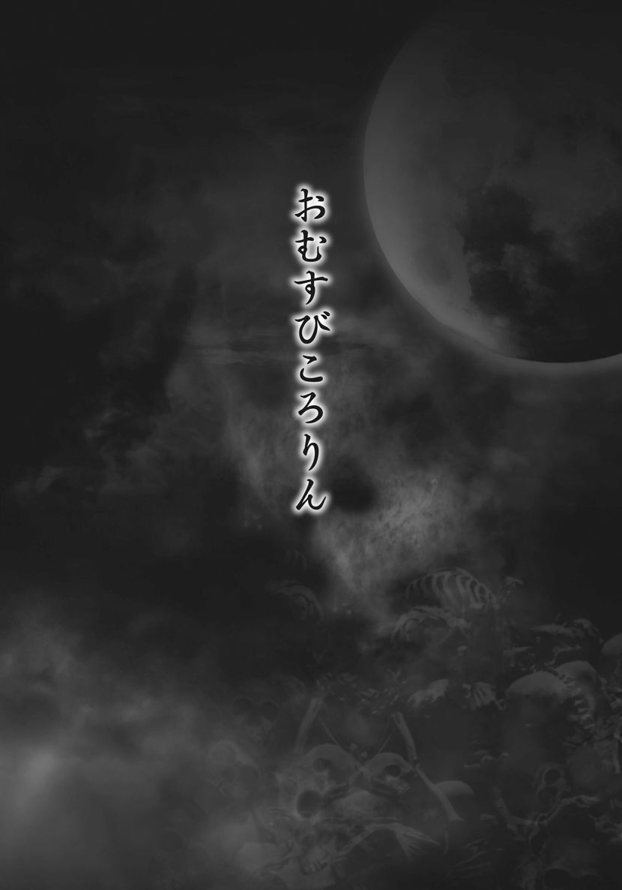

| 本当は恐い！ 日本むかし話 封印された裏物語 (竹書房文庫) | |
| Unknown | |
| (2016) | |
この作品は縦書きでレイアウトされています。
また、ご覧になる機種により、表示の差異が認められることがあります。
一部の漢字が簡略字で表示されていることがあります。
はじめに
昔話や民話、童話は、様々な教訓や知恵を含んだものとして、長い歴史のなかで語り継がれてきた。子どもの本やアニメでは、いまでも、昔話が繰り返し取りあげられている。ほとんどは古くからの伝統や生活習慣を語りながら、人生を教えるものとされているが、その一方で、隠された残酷性や好色性なども指摘されている。その証拠に、多くの昔話や民話のもとをなす〝原話〟には、目をそむけたくなるような恐ろしい表現が散りばめられているのだ。
その残酷性には、目を見張るものがある。
『こぶとり爺さん』を例にして考えれば、一人のお爺さんは鬼にこぶを取られ、もう一人のお爺さんは鬼にこぶをつけられてしまう。こぶを頬から取るとか、つけるとか、あっさり語られるが、考えれば残酷なことである。
また、『かちかち山』では、悪者のタヌキは、婆様を臼のなかで突き殺し、細かく切って汁にして、それを爺様に食べさせるのである。しかし、そのタヌキもウサギに散々な目にあわされ、最後はだまされて泥舟に乗せられ、溺れ死んでしまう。子ども向けの話としては、むごい点が目立つではないか。
それは好色性に関してもいえるだろう。世界の童話の裏側に見られる好色性については、たびたび指摘されてきたが、日本の昔話に関しても同様である。
『瓜子姫』の話は、機織りをしている生娘を「あまんじゃく」という悪漢が襲うという、まるでストーカーによる性犯罪のようなテーマである。
『浦島太郎』は、いまから一三〇〇年ほど前に編纂された『日本書紀』にある「浦嶋子」という男が主人公になっている。この男はたいそうな美男で、いいよる女が多かった。これが竜宮城の乙姫様などの女群につながって、物語が成立しているのである。
だが、これらの昔話は、時代とともに、当初の話のなかから恐怖性やきわどい部分が削除され、優しくて親しみやすい物語へと変わっていったのである。
本書ではこうした昔話や童話を、その原話にさかのぼって検証。独自の解釈も加えながら、ときに大胆に飛躍し、封印された裏物語、隠された真実を探っていくものである。日本の昔話、民話や童話といった教訓説話を研究していくうえで、その一助にしていただければ幸いである。
深層心理研究家
桃のおかげで若返る
昔むかし、あるところに、初老の男と女房が暮らしていた。子もいない老夫婦だったから、とりたてて楽しみもなく、ただ毎日を淡々と過ごしていた。
そんなある日、女房が川で洗濯をしていると、川上の方から桃がどんぶらこどんぶらこと流れてくる。
「おやおや、これは大きい桃だこと」
桃は邪気を払い、不老不死の力をあたえる霊薬である。そして、貴重な食べ物でもあった。女房は大喜びで桃を拾いあげ、えいこらえいこらと家へ運び帰った。
「こりゃ、良い土産になるわ。爺さんもきっと元気になるじゃろう」
年を取ってからというもの、夜のほうがとんとご無沙汰である。だが、桃を食べれば、きっと力がみなぎって、若いころのように荒々しく抱いてくれるのにちがいない。
こうして女房が帰りを待ちわびていると、ほどなくして、男が山から帰ってきた。
「爺さんや、見ておくれ。川で洗濯していたら、こんな見事な桃が流れてきよった」
「なんと立派な桃じゃ。さっそく馳走になろうかの」
そういって、二人が桃を一口ほおばると、どうしたことか。みるみる精気が甦ったではないか。そればかりでない。やせぎすだった男はごつごつとした厳つい体つきに、すっかりしわしわだった女房はみずみずしくて、ほどよく熟れた体つきになったではないか。
すっかり若返った二人は、たける気持ちをおさえられない。目と目があった次の瞬間には、激しく抱きあっていた。男は着物を脱がせるのももどかしいのか、荒々しく女房の胸元をはだける。豊かな二つの乳房があらわになると、男は優しく、ときにねぶるように愛撫する。そして、もう片方の手で、下半身の丘をまさぐった。
「んっ、んっ」
声まで若返ったか、女房の吐息は甘い音色だ。せつなそうな声をもらすもんだから、男のこわばりはますますいきり立つ。我慢ならんと、女のなかに分け入ろうとすると、女房がそれを制した。
「久しぶりだからの。ゆっくり楽しもうではないか」
婆さんと呼ぶにはあまりにも若々しい姿の女房が、なまめかしい視線を投げかける。それから、いきり立ったこわばりをじらすように、人差し指でそっとなぞる。男は触れられるだけでも爆発しそうだったから、たまらない。
「くぅ」
今度は男が声をだす番だ。女房は夫の反応を楽しむように、手でしごきあげる。しびれるような感覚が男の下半身を支配し、やがてそれが背筋を通り抜けた。こわばりの先から、男の精があふれでる。女房はそれを一滴残らず口でぬぐうと、妖しく笑った。
「まだまだ......これからじゃろう？」
そういうと女房は、夫のこわばりを再び口にふくんだ。こうして、二人は一晩中、体を求めあった。
そんな毎日がつづいたおかげだろうか、一年後、二人は玉のような男の子を授かった。
「なんと元気な、かわいい子だろう。おまえさん、いったいなんという名にするかえ」
「桃のおかげで授かったのじゃ。桃太郎と名づけよう」
ゆがんだ母子の愛と恐ろしい企て
桃の不思議な力で若返ったとはいえ、年老いてから授かった子どもだから、女房はたいそう桃太郎をかわいがった。文字通り、溺愛、いや偏愛と呼べるほどである。それは桃太郎も、同じこと。まるで乳離れができない子どものように、いくつになっても、母親の胸に顔を埋めていないと、寝つけないほどだった。
だが、男にはそれがうとましくて仕方がない。桃太郎は父親である自分にはちっともなつかずに、母親にばかりまとわりついているからだ。
とくに、わずらわしいのが、夫婦の営みのときだ。なにせ桃太郎は、男が女房に触れるだけでも不機嫌になる。あるときなど、夜中にこっそり女房に近づくと、寝ていたはずの桃太郎が目を見開いて、にらみつけてきたのだ。
そうこうするうちに、桃太郎もすっかり大きくなり、いつの間にか男の表情を見せるほどに成長していた。
そんなある日のことだ。夕暮れが近づいてきた時分、男が女房に呼びかけた。
「のう婆さんや......、ちと酒が切れてしもうたようじゃ」
その言葉を聞いた女房は、桃太郎を呼び寄せると、酒を買いに行かせることにした。実は、これは男が女房を抱きたい、という合図であった。
桃太郎を外へ追いだし、その間に二人で交わろうというのだ。
だが、このころになると、桃太郎も父の言葉の意味を理解していた。使いにでかけたふりをして、壁のすき間から、何度も二人が交わるのを覗き見ていたのである。
そしてそのたびに、父親に対する殺意にも似た憎悪がこみあげてくるのだった。だが、山仕事できたえあげた父親の肉体は屈強だ。桃太郎が口答えなどしようものなら、鬼の形相でミミズ腫れができるまで殴られる。とうてい、自分にはかない。
おまけに、なにやら山伏のような真似事をし、呪術も使えるようだったから、逆らおうにも、どうにもできなかったのだ。
だが、ある日、桃太郎はこらえきれず、母親に甘えながら、
「お母......お母よ。お母はお父にあんな風に乱暴に抱かれて、嫌じゃないのか？ わしがおるだけじゃ、足りぬのか？ わしより、お父の方が大切なのか？」
と問いかけた。すると、女房は迷いなく、こう答えた。
「なんとおろかなことよ。わしは桃太郎さえいてくれたら、それでええ。そんなことは、おまえがいちばんわかっているはずじゃろう」
女房はまるで恋仲の若い衆を誘うようにして、桃太郎を抱きしめる。
「おまえを授かって以来、爺さんは妙に信心深くなってのう。最近は、山へ行っても仕事もせずに、なにやら面妖な祈祷をしておるようじゃ。わしもうとましくて、仕方ない」
「わしは、お父が恐ろしくてたまらん。まるで、鬼のようじゃ」
「おまえをこんなに苦しめるのじゃ。爺さんは鬼にちがいない」
「どうにかして、あの鬼のようなお父をこの家から追いだせないものじゃろうか」
「わしもそうしてやりたい。だがの、爺さんのあの呪術だけは、あなどってはならんぞ」
こうして、真の意味で心が通じた母子は、恐ろしい企てをはじめたのである。
三匹の〝お供〟を連れて
爺さんが山籠もりに出かけたある晩、二人は恐ろしい企てを実行にうつす決意をする。
「よいか、桃太郎。爺さんを倒したければ、まずあの面妖な術を封じなければならぬ。そのために、おまえには〝お供〟が必要なのだ」
そういって婆さんは、こっそり捕らえておいたお供の犬、猿、雉を連れ出した。これが、爺さんの術を破るための呪術のお供なのだ。
「犬はな、その皮を剝ぎ、身につけるのじゃ」
そういうと婆さんは、犬の喉笛をかき切り、躊躇なくその皮を剝いだ。
「猿はの、その皮と骨を使うのじゃ」
今度は猿の心の臓を一突きすると、そのまま一気に毛むくじゃらの身体を切り裂いた。皮を剝ぎ取ると、その皮をはって太鼓を作る。それから肉塊と化した猿の亡骸から骨を抜き取り、ばちを作った。
「最後のお供は雉じゃ。これを殺して、その霊魂を風に乗せて放つのじゃ」
こうして、血塗られた儀式が終わると、母子は二人して水浴びをし、その身を清めた。
準備はすべて整った。
「桃太郎、良いな」
婆さんが振り向く。すると、桃太郎は力強くうなずいた。
「いざ行かん、鬼退治に！」
二人が目指すのは、爺さんがいる山のてっぺんだ。
鬼を退治したそのあとは
四角に組んだ薪からは、火の粉が立ちのぼり、パチパチと音をたてる。
爺さんはがっちりとしたその身体に汗を滴らせながら、一心に呪文を唱えていた。
山籠もりをしてから、何時が過ぎただろうか。術を使うのにも体力がいる。さすがに疲れてきた爺さんは、ふいに力が抜けていくような感覚を覚えた。
（ふん。今宵はこれくらいにしておこうかのう。あやつらを二人きりにしておくと、何をしでかすかわからん）
実は爺さんも、二人がなにやら隠しごとをしている気配は薄々感じていた。
（桃太郎のやつめ。最近は、わしと目をあわそうともせんなんだ。ますます生意気になってきよるわ）
身体がすっかり冷えてしまう前にと、汗をふきはじめたそのとき。爺さんに声がかかる。
「お父！」
声の主は桃太郎だ。はて、いったいどうしたものか？
怪訝に思いながら、爺さんが振り向くと、犬の頭を胸当てに、上半身にその皮をまきつけた桃太郎が立っていた。その手には、刀が握られている。
「も、桃太郎！ きさま、いったいなんのつもりじゃ」
爺さんはかたわらに置いていた数珠を握りなおす。すると、女房が猿の皮で作った太鼓を、骨で作ったばちで叩きはじめた。
トントントントン───
異様な太鼓の音が、鳴り響く。爺さんの周囲には、死肉の匂いがたちこめ、どこからともなく雉の羽が風に吹かれて飛んできた。
爺さんは数珠をさしあげると、呪文を唱えはじめた。だが術が効かないのか、桃太郎はひるまず、一歩、また一歩と近づいてくる。
いや、術が効かないのではない。術そのものが、封じられているのだ。爺さんがそれを理解したとき、すでに桃太郎の振りあげた刀は面前にあった。
一閃。
爺さんの顔から腹にかけて一条の赤い閃光が走ると、次の瞬間、血しぶきが噴き出した。やがて体中の血という血が噴き出し、魂の抜けた爺さんの体はごろりところがった。
返り血に染まった桃太郎が、じっと見おろしている。その目はまるで、足で踏んだ虫けらを見ているようだ。
「終わったの......鬼退治が」
女房の安堵した声が後ろから聞こえた。桃太郎が振り向くと、血塗られた母親の白い裸体が炎に照らされている。
息を飲む桃太郎に、女房は妖艶な笑みを投げると、手をさしのべた。
「桃太郎や......これでわれらを阻むものは誰もおらん。存分に楽しもうぞ」
■『桃太郎』の原典を読み解く
母と子の禁じられた愛
日本人なら誰にもなじみ深い『桃太郎』が今日の内容に統一されて広まったのは、それほど古いことではない。明治時代の作家、巖谷小波が『日本昔噺』に書き、尋常小学校の唱歌として国定教科書に登場してからなのである。
それ以前は、地方によって話の筋が異なり、桃が戸棚や長持、香箱に入って流れついたり、桃を神棚に置いておくと割れて男の子が生まれた、という例もある。江戸時代には、ここで紹介したように桃を食べたお婆さんが子を生んだというパターンもあった。年老いて子を生んだ恥を隠すため、桃から生まれたことにしたという説もある。
また、香川県では女の子として生まれ、あまりのかわいさに、鬼にさらわれぬよう桃太郎と名づけたという話もある。徳島県では、遊んでばかりいた桃太郎が、お爺さんに小言をいわれ、大木で家ごと老夫婦をつぶしてしまうような乱暴者として伝わっている。
鬼が島へお供についていくのも、犬、猿、雉とは限らない。蜂、栗、牛のくそ、臼などと、まるで『猿蟹合戦』と混同している地域もある。
もともとこの話は、美しい嫁を見つけて幸せな結婚をするという『一寸法師』などに似た話だったが、子どもたちの前で話すうち、求婚話が消滅していったとする意見も多い。このように謎が多いため、柳田國男など多くの識者が研究してきたことでも知られている。
そうした研究によると、本来、この物語はふたつに分かれていたらしい。
前半は、記紀神話に登場するスクナビコナのように、指ほどの小さな子神の誕生を語る昔話だったとされる。それに対して後半は、ヤマトタケルのような英雄伝説となっている。つまり、首尾一貫していないのである。これもまた、記紀神話を子どもたちにやさしく語るうちに、おもしろい部分だけが残され、別の物語と一体になったためだろう。
桃は女陰の象徴
では、なぜ桃がテーマになったのか。桃は、古代日本を象徴する果実で、中国の多くの古書が「扶桑（日本）に大桃樹あり」と述べているほどだ。
実は、これも記紀神話に関わるものだ。日本の神々の祖であるイザナギが、死せる妻に会うために死の国へ行ったところ、八柱の雷に追われて逃げ、そのとき桃の実を三つ投げて追っ手を退けた。『日本書紀』の異本では、「これ、桃を用いて鬼をふせぐことのもと」と記しているので、鬼を退治する最も適切な方法だったのである。これが擬人化されて、桃太郎という名が与えられたとするのが歴史的に妥当な解釈といえるだろう。
しかし、桃は女陰の象徴でもある。その視点に立つと、話はまったくちがってくる。それが、ここで見たような、桃を手にして女の体を取り戻したという物語が暗示するものだ。
そもそも、お婆さんは川へ洗濯にいったのではないのではないかもしれない。「洗濯」というのは中国古代の水浴びの作法で、川へ行って身を清めることである。お爺さんに抱かれるため、身を清めていたとも考えられるのだ。
そのころ、山で柴刈りをしていたお爺さんだが、これも別の意味がある。山頂で柴を燃やして天の神をおろす祈祷をしていたのだ。これもやはり、太古の中国では広く行われていたものだ。だが、この部分も物語化するうちに、消えていったのかもしれない。
こうして、お婆さんから生まれた桃太郎は、賢く愛らしかったが、根っからの母親っ子だった。ここでは、その情愛があまりにも深すぎて、とうとうお爺さんの目を盗んで母子相姦するまでに至ってしまったという解釈を試みた。
事実、東南アジアや南太平洋の諸国には、原始の祖神が近親相姦で生まれたとする神話がいくつもあり、南中国や日本の八丈島でも、母と息子、兄妹の近親相姦が人の起源だと伝承される。日本の神々の祖であるイザナギとイザナミも、兄妹神ともいわれているのだ。
古代より繰り返されてきた父親殺し
では、鬼退治は何を意味しているのか。鬼とは、祖神の意思を受けた死霊のことであるが、ここでは、母子相姦にとって邪魔な存在、お爺さんが擬せられたと解釈している。
それにお供する犬、猿、雉は、父親殺害＝鬼退治のための呪術の道具である。
犬は、その皮を剝いで使う。鬼を追い払うのには、古来より、これが最上の方法とされているのだ。猿も皮を剝いで太鼓を作り、骨をもってこれを打つ。これも鬼を脅す術なのである。では雉はどうするかといえば、殺して、その霊を風に乗せて放つのだ。そうすることで、お爺さんが身につけていた呪いの力はたちどころに弱まるのだ。
こうして、お供もそろえたお婆さんと桃太郎は、〝鬼退治〟に成功し、その後は仲良く二人で暮らした。これこそ、まさにエディプス・コンプレックスの典型である。だが、その力関係をくつがえすための父親殺しは、古今東西を問わず、どこでも平然と行われてきたのである。この物語でそれが描かれていたとしても、なんの不思議もないのだ。

若い女を助けたら
あるところに、親切な爺さがおった。ある日、町からの帰りに神社の横を通りかかると、女の悲鳴が聞こえてきた。
「はて、なんじゃろ」
爺さが社のなかを覗き込むと、三人の男が若い女に襲いかかっているではないか。
「助けて......」
女は必死に逃げようとするが、男たちの力にはかなわず、柔肌がむき出しにされる。
爺さはとっさに大声を張りあげて叫んだ。
「神主様、男たちが悪さをしとりますぞ！」
それを聞いた男たちは、「これはいかん」と、女を放り出して逃げて行った。
若い女は、はだけた着物の襟元をかきあわせ、礼をいう。
「ありがとうございました。私はねずと申します。このお礼は、あらためてさせてください。本当に、ありがとうございました」
ねずは何度も何度も頭をさげながら、山の方へと歩いて行った。
何日かして、また爺さが神社の横を通りかかると、見知らぬ女がすっとあらわれた。聞けば、ねずの母親だという。
「お爺さん、この間はなんともありがとうございました。おかげさまで、ねずがあぶないところをお助けいただきました。今日はお礼にご馳走させていただきたいので、どうか、ついてきてくださいまし」
爺さはめっそうもないと断ったが、あんまり熱心に誘われるものだから、女にいわれるがままついて行くことにした。どのくらい歩いただろうか。
「ここからは目隠しをさせてくださいな」
ふいに女はたちどまると、そういって、爺さに目隠しをした。しばらく歩くとようやく家についたようで、目隠しを外された。
「よくおいでくださいましたの。娘のねずが助けてもらって、ほんにありがとうごぜえました」
父親らしい男がていねいに礼を述べ、奥の間へと通された。
奥の間は、驚くばかりの調度が置かれ、それはそれは立派なものじゃった。爺さが目を丸くしておると、着飾った女がつぎつぎにあらわれ、大ご馳走が並べられたんじゃ。
「見たことも、食べたこともないものばかりじゃ」
これには爺さも大喜び。お酒もたっぷりとふるまわれるうちに、すっかり夜も更けた。そろそろ暇をと腰を浮かせた爺さを、きれいな娘っこ二人が引き止める。
「どうぞ、こちらへ」
二人は爺さの腕を取ると、艶やかな眼差しを投げかけながら寝間へと誘った。
寝間には床が敷かれていた。襖が閉じられるや、娘っこ二人はするすると着物を脱ぎはじめる。爺さがあっけにとられていると、二人は右と左で爺さを挟んで横になった。
婆さともずいぶんご無沙汰だった爺さの古びた逸物が、若い娘の肌に触れたせいか、むくむくとそそり立つ。たまらずに右の娘の乳にむしゃぶりつくと、もう一方の手で、股間をなぶる。右の娘っこと爺さは組んずほぐれつ、すっかり気をやった。
さあ、今度は左の娘っこの番だ。すっかり待ちわびた左の娘の愛撫に、爺さも元気をとりもどし、またまた組んずほぐれつ。朝まで二人の娘っこの体をたっぷり楽しんだ。
欲深な夫婦
夜が明け、今度こそ帰ろうと着物を着ていると、ねずの父親がやってきて頭をさげた。
「お帰りには、どうぞこれをお持ちくだせえ。それから、この家のことは誰にも内緒にしてくだせえ」
そういって男は大きなつづらと小さなつづらを爺さの前に並べた。
「ずいぶん良くしてもらって、おまけに土産までもらったら罰があたる」
と爺さはずいぶん遠慮したが、どうしてもといわれて、小さい方のつづらをもらって帰ることにした。見た目は小さいが、それでも持ってみるとつづらはずっしりと重い。それから目隠しをされた爺さは、また神社まで連れてこられたと。
家へ帰って婆さに不思議な家の話をし、二人して、もらったつづらを開けてみたところ、なかから小判があふれだした。
「うひゃー」
あんまりびっくりしたものだから、二人とも、隣の老夫婦が家のなかをうかがっていることに気づかなかった。隣の老夫婦は、ふだんから欲深で有名だった。そんな二人がこんなにおいしい話を聞いて、そのままでいられるはずもない。
「われらも、あんなつづらをもらいてえもんだ」
欲深爺さは二匹目のどじょうを探して、あちこちとうろついた。そうこうするうちに、おりよく、若い娘が男たちに襲われているところに出くわした。
「こらーっ、おめえら！」
首尾良く男たちを追い払った欲深爺さは、すぐに礼をせよと娘に迫ったから始末が悪い。
「どうだね、おめえの家に連れて行ってくんな」
娘の尻を叩きたたき、家に案内させると、父親に奥の間に通されたんじゃ。
「しめしめ、これでお宝の袋がもらえるぞ」
欲深か爺さが舌なめずりしていたところ、ガラリと戸が開いた。
「こいつ、太い奴じゃ。どこで聞いたか、宝を目当てにやってきたらしいな。叩き出せ！」
父親がそう命じると、荒々しい大男がずらりと並んだ。欲深爺さは男たちに殴られ、けられ、気を失ったところで、もといた場所に放り出された。
「助けてくれ、助けてくれ。もうこねえ、もうこねえ」
欲深爺さはもう懲り懲りと、ひいひい泣きながら逃げ帰ったとさ。
■『ねずみの浄土』の原典を読み解く
おむすびを追いかける
『おむすびころりん』として知られるこの物語は、古くからある口承文芸で、室町時代に『御伽草子』として成立したといわれている。その物語はどこか『こぶとり爺さん』や『舌切り雀』を思い起こさせるもので、因果応報の教えや富を希求する思いが込められている。
さて、ここで紹介したストーリーが、子どものころに話し聞かされたものとすこしちがうと感じるかもしれない。『おむすびころりん』はほかの昔話に良く見られるように、『ねずみ浄土』や『団子浄土』『ねずみの餅つき』などともいわれ、様々なバリエーションがある。無欲なお爺さんと欲張りなお爺さんの対比を描いたものが多いが、無欲なお爺さんの妻であるお婆さんが強欲であったり、隣に住む強欲なお婆さんが独り占めしようとするケースもある。
また、おむすびのお礼としてつづらをもらうのではなく、白いねずみたちが楽しそうに踊り歌っているところで、お爺さんが猫の真似をしたために、ねずみが散り散りになり、残された小判やら珊瑚やらをいただいて帰るという物語もある。さらに、欲張りなお爺さんが行方不明になってしまう残酷な結末のものもあるのだ。そうした理由からか、『おむすびころりん』と『ねずみ浄土』は別々の物語であるとしている書籍もあるほどだ。
ねずみの家は盗賊の隠れ家
さて、謎解きはこれからである。『おむすびころりん』に登場するねずみの家とは何か。その昔、ねずみは神の使いとして考えられており、地中にその世界があると考えられていた。こうした描写は、室町時代の『ねずみの草子』や『かくれ里』に見られる。
一方で、ねずみを〝根住み〟、根の国の住人としてとらえ、巣穴を黄泉の国、つまり極楽浄土への入口だとする説もあるようだ。
本書はさらに飛躍して考え、根住みの国を人の目を避けて隠れ住む者たちの住処、盗賊の隠れ家だと考えた。盗賊の一族が人も寄りつかないような山中に居を構えていた。だからこそ、目隠しをして連れて行かれたわけだ。
爺さが助けたのは、盗賊の首領の娘である。盗賊は「娘を助けてもらったお礼」と、爺さにご馳走をふるまい、白いねずみ、すなわち女たちがもてなし、そのうえお宝まで土産に与えたのである。
東北地方に伝わる『ねずみの餅つき』では、ねずみの家に招かれたお爺さんの目の前で、もちつきがくりひろげられる。ねずみたちは、もちつき歌を歌いながら、にぎやかにもちをつくのだが、「もちつき」とは、隠語で男女の交わりのこと。「もち」の正体は女体だ。そして、このもち＝女体はお爺さんのためにふるまわれるものである。
お爺さんはねずみの家でたっぷりと〝女体もち〟をふるまわれている。つまり盗賊たちは、恩に報いるために「もち」を食べさせ、口封じに小判を土産に持たせた......。これが『おむすびころりん』の裏物語と考えられるのである。
産毛のような茂みの奥からのぞいた秘部
昔むかしのこと。河内の国に寝屋備中守藤原実高というお金持ちの長者が住んでいた。幼いころから読み書きを学び、和歌を詠み、楽器を奏でることにも秀でた雅なお方であった。そして、奥方もたくさんの草紙をそらんじるような、長者にふさわしい才女であった。
桜のころには、散る花を愛おしむ歌を詠み、月の美しい季節には、月が出る前から空を眺め......というように、二人は仲むつまじく、優雅な暮らしを楽しんでいた。そんな二人であったが、子宝にはなかなか恵まれず、心のなかでは淋しい思いもあったのだ。
奥方はたいそう信心深く、子が授かるよう、毎日祈りを捧げていたが、なかなか子宝に恵まれない。あるとき思い立った奥方は、長谷の観音様詣でに出かけることにした。すると、どうしたことか。長谷から戻って長者と寝所をともにするうちに、ひょっこり女の子を授かったのだ。観音様の御利益だろうか、とにかく二人が喜んだのはいうまでもない。
ようやく授かった子だったから、目に入れても痛くない。二人は姫をたいそうかわいがった。そして、夫婦仲もますます良くなった。子が生まれると、それまでせっせと励んでいた夫婦の交わりが縁遠くなるという話も聞くだろう。だが、この二人にあっては、むしろ子が生まれてから、交わる喜びをいっそう強くしたようだ。
そんな仲むつまじい二人の間で、姫はすくすく育った。奥方は和歌や琴など、自分が身につけた教養のすべてを娘に教え込み、物心がつくようになってからは、信心の心も身につけさせた。そして、十三になるころには、姫はどこに出しても恥ずかしくない、美しく、そして麗しい娘に成長していた。
そんなある日のことだ。一家の幸せに暗雲がかかる。
奥方が流行り病に倒れてしまったのだ。様々に手を尽くしても、日に日に弱っていくばかり。ついに明日をも知れぬ容体となったとき、自分の命がもう長くないことを悟った奥方は、枕元に娘を呼び寄せた。
自分が死んでいくことは仕方がない。けれどもまだ年端もいかぬそなたをこの世に残していくのが、どうにも心残りでたまらない。そなたがどのような御方のもとに嫁ぐのか、その日がくるのを楽しみにしていたのに、どうやらそれも叶わぬ夢となってしまいそうだ。
奥方は娘への思いを吐露すると、はらはらと涙をこぼした。そばで聞いていた姫も、声を押し殺して涙を流すばかり。
「ああ、私はもうそなたを近くで見守っていくことはできそうにありませぬ。なんてかわいそうな姫だこと」
奥方は涙をそっとぬぐうと、侍女にいいつけ、古めかしい手箱を持ってこさせた。奥方は手箱のなかから御札のようなものを取り出すと、おもむろに娘の着物をまくりあげた。うっすらと産毛のような茂みの奥から、ふっくらと薄紅色に膨らみかけた秘部がのぞく。下半身をすっかりさらけ出した姫君は、びっくりするばかりで、身動きひとつ取れない。
それから、奥方は娘の秘部に御札を張りつけると、錦布を取り出してぐるぐると巻きつけた。そして、弱り切った体からしぼり出すように、
「観音様、どうぞこの娘をお守りください」
と祈りを捧げた。その言葉を最後に、奥方はその場に力尽きてしまったのだ。
長者はたいそう嘆き、そして落胆したことはいうまでもない。しばらくの間、屋敷のなかから、泣き声がとだえることはなかった。
だが、奥方の葬儀を終えて、気が落ちついてくると、娘の股に巻きつけられた錦のことが、どうにも気になってきた。何度も外すようにいいつけたが、どうしたことか、用を足す分だけしか緩まない。それ以上はどうあっても、くっついて離れないのだ。
あるときなど、たまりかねた姫は、着物をまくりあげて錦を引き剝がそうとしたが、錦はびくともしない。まるで錦のおしめをあてたようなみっともない愛娘の姿に、長者は途方に暮れるばかりだった。
後妻の継子いじめ
妻を亡くし、あげくに娘は無様な姿に成り果ててしまい、長者はすっかりふさぎ込んでしまった。見かねた縁者たちが後添えをもらうように進言し、しぶしぶながら長者も後妻をめとることにした。
ところが、新しい嫁を迎えた長者は、噓のように元気を取り戻した。奥方を亡くしてからというもの、おなごとの交わりも久しかったところだ。新しい若妻は、むっちりと膨らんだ尻や豊満な胸で、男好きする体つきだったからたまらない。長者は、たちまち新妻の若い体に夢中になってしまったのだ。
だが、長者が若い妻に熱をあげればあげるほど、姫との関係は疎いものになっていく。おまけに、姫と継母は折り合いが悪く、あるときなど、錦を股に巻いた不格好な姿を〝むつき姫〟と蔑まれることもあった。そのたびに姫は、こっそり泣き暮らすのだった。
そんなある日のことだ。
「新しい母様に嫌われて、つらい毎日でございます。父上もいいなりになってばかりで、気にかけてくださる人もおりませぬ。ああ、いっそのこと母様のところへ参れたら良かったのに......」
継母のいじめに耐えかねた姫は、母の墓の前で嘆きながら泣いていた。これが継母の耳に入ったから、さあ大変。日頃から継子をうとましく思っていた継母は策を弄し、長者に噓の進言をするのだ。
「姫は、亡き母の霊魂を頼って、われらを呪い殺そうとしております」
「さようか。ならば一刻の猶予もならぬ」
長者は、若い後妻に熱をあげていたので、その言葉を疑うこともしない。我が娘ながら恐ろしいと、震えあがる始末だ。そうそうに姫君を呼び寄せると、こう言い放った。
「そなたのようなけがらわしい者は、うちには置けぬ。とっとと出ていけ」
もはや正気の沙汰とは思えない。だが恐ろしいことに、長者は血のつながった娘の着物まではぎとると、かわりにみすぼらしい着物を与え、山奥に放り出してしまうのだ。そして最後には、「決して戻ってきてはならぬ」と言い置いて、その場をあとにしたのである。
哀れな姫は、胸のつぶれる思いを必死でこらえるしかない。ほかにどうすることもできずに、あてもなくひたすらに歩きつづけた。「もう生きていても仕方がない」と思っても、首をくくる綱もなければ、身を刺す刃物も持っていない。
どれだけ歩いたことだろう。ふと、川のせせらぎが聞こえてきた。音を頼りに歩いていくと、大きな川に行きあたった。ちょうど川下の方に夕日が沈むところで、あたりは夕日で真っ赤に彩られている。しばらくその場にたたずんでいると、まるで母の懐に抱かれているような不思議な心持ちがしてきた。
「そうだ。この川に身を投げれば、母上様のところへ逝ける」
そう思うや、姫はなんの迷いもなく、川へ身を投じた。ところが、川の流れが意外に早く、ざぶんと沈んだかと思うと、ぷかんと浮かびあがり、そのまま水の勢いに流されていくではないか。それもそのはず、股にまかれた錦が浮き袋のように、姫の身体を水面につなぎとめていたのだ。
「沈むことができなれば、死ぬこともできぬではないか」
川を漂いながら、姫は泣くしかない。
「いっそこのまま、ずぶずぶと沈んでしまいたい」
そう思っても、錦のむつきのせいでどうにもなりはしない。浮かんでは沈み、沈んでは浮かびを繰り返し、ほとほとくたびれ果てたときのことだ。突然、口のなかに何かがはさまった。
「う、うぐぐぐぐ」
姫は無意識のうちに唇をすぼめると、〝それ〟をしっかりと咥えこんだ。すると、ぐいっと大きな力が働いて、いつのまにか姫は川から引きあげられていた。
「ありゃ、大きな口がぱくぱくするのが見えたから、おっきな魚じゃあと思うたのに、おなごじゃった。こりゃあ、たまげた」
気がつけば、目の前に漁師が立っていた。無遠慮に姫をながめる漁師は、何かを思案しているようだ。やがて男はにやりと笑うと、おもむろに姫の体にのしかかる。
「ひひひひ。せっかく釣りあげたご馳走じゃ。たらふく味わってやるさ」
着ているものは粗末だが、見れば見るほど美しい娘だ。男は乱暴に姫の着物の襟から手をねじこみ、胸をぎゅっとわしづかみにする。
「......あっ」
こらえ切れずに、姫が甘い吐息をもらすものだから、男はますます興奮する。我慢ならぬとばかり、もう一方の手が茂みを探してのびていく。
「うお、なんじゃこれは？」
見れば、大事な部分にすっぽり錦のむつきがかぶさっている。力まかせに引き剝がそうとしても、歯で噛み切ろうとしても、錦はびくともしない。とうとう男はくたびれ果てて、すっかり気持ちもなえてしまった。
とにかく何かの役には立つだろう。そう思った猟師は、とりあえず姫を村に連れて帰った。だが、屈強な男たちがかわるがわる力を振るっても、錦のむつきは外れない。
「こりゃあ、下の口は使えんわい」
かわいそうに姫は、ここでも笑い者にされるばかりだった。
上の口は良い働きをする
だが、捨てる神あれば、拾う神あり。この国を治めている大殿が姫の姿を哀れに思い、下働きとして屋敷に引き取ろうと申し出たのである。
屋敷で与えられた仕事は、湯を沸かすこと。「この娘の下の口は使えぬ」という漁師たちだったが、「じゃが、上の口は良い働きをする」とこっそり噂していたのを覚えていた大殿が、ならば火吹き竹の扱いもうまいだろうと考えたのだ。
高貴に育った姫にとって、下働きをさせられるのは決して楽なことではない。だが、漁師たちの笑い者になっているよりも、火起こしの仕事の方がずいぶんとましだった。
そんなある日のことだ。姫がいつものように湯を沸かし、湯加減を尋ねると、思いがけず若い声が返ってきた。なんと、世間でも評判の若殿が、風呂に入っていたのだ。
若殿は湯加減を尋ねる若い娘の声に、ふと心惹かれた。まだ独身で遊びたい盛りの若殿は、いたずら半分に娘を呼び寄せる。
「これ娘、誰もおらぬから、入ってまいれ」
しかし、娘はいっこうに姿をあらわそうとしない。
「ほかには誰もおらぬ。かまわぬではないか、背中を流しておくれ」
仕方なく湯気のたちこめる湯殿に入ると、姫は深々と頭をさげる。
「頭をあげよ」
その姿に、若殿ははっとする。みすぼらしい身なりとは裏腹に、たいそう美しい顔つきだ。股にむつきをあてがった姿はこっけいだが、しなやかな手足は並外れた美しさ。おまけに、声も透き通るようで心に響く。若殿は、一目で姫の虜になってしまった。
これまで縁談をもちこまれても、こうまで心を動かされたことはない。だが、姫を見たとたん、若殿は心のなかに精気が沸きあがってくるのを抑えることができなかった。
そしてその夜、若殿は我慢できずに姫の寝所へ忍び込む。ところが、姫の股に巻きついた錦のむつきは、どうにもなりはしない。なぜこのようなものが巻きつけているのかと若殿に問われ、姫は正直にことのあらましを話した。
「なんと哀れな......」
話を聞いた若殿は、たいそう嘆いた。その言葉を聞いた姫の心に、変化が訪れた。かたくなに閉ざしていた心のなかに、温かな感情が生まれたのだ。
姫は若殿の足元にひざまづくと、村人たちがこっそりしていた噂話を伝えた。
「私の下の口は使えぬものですが、この口はたいそう良い働きをするそうでございます」
思いやりのある言葉をかけてくれたのは、若殿がはじめてだ。姫はその真心に、どうにかして応えたいと思った。こうして姫と若殿は、秘密の契りを交わしたのである。それからというもの、若殿は夜な夜な姫のところに通い詰めた。
いくら秘密にしていても、二人のことが大殿の耳に入らぬわけがない。娘の器量はたしかに良い、若殿の気持ちがわからぬわけでもない。だが大事な御曹司が、みすぼらしい娘と結ばれては困る。大殿は無理にでも縁談話を急いで、嫁をめとらせることにした。
嫁比べ
ある日、大殿は若殿を呼び出すと、こう言い含めた。
「二度と娘のところへ通ってはならぬ。そなたも若い男なのだから、女の色香に心奪われる気持ちも良くわかる。だが、あの娘はむつきをあてた、けがらわしい者ではないか。そなたには、もっとふさわしい娘がおる」
これに若殿は、顔を真っ赤にして反論する。
「あの娘以外は、嫁にするつもりはありませぬ。もしもあの娘を追い出すのなら、私はあとを追うでしょう。この暮らしを捨てることに、なんの惜しいことがありましょう。地の果てといえど、娘と添い遂げる覚悟です」
そう言い放ったのだ。これを聞いた若殿の母上は、
「そんなにその娘のことが気に入ったのならば、そなたの友達夫婦を招き、嫁比べをしてみたらいかがかな」
と、提案した。
この時代、嫁をもらうと、親族や友人たちの妻を集めて、「嫁比べ」をする習わしがあった。表向きは嫁を披露するという名目だが、実際のところはちがう。互いの嫁の器量や女っぷりなどを品定めする場であった。場合によっては、嫁と嫁を取り替えて、味比べをすることもあったという。
そのような場ともなれば、股に錦のむつきをあてた娘がどんなにみすぼらしいものか一目瞭然。いまは善し悪しの判断がつかぬほど燃えあがっている若殿の熱も、一気に冷めるだろう、という奥方の策略である。
嫁比べの当日、若殿の心も穏やかではない。居並ぶ姫たちと比べれば、むつきをあてた娘が見劣りするのは明らかだ。もとより、ほかの娘をめとるつもりもないが、その場に連れ出す勇気もない。
姫とて、それは同じ。そのような場に出ることなど、とうていできぬ。以前のように、笑い者にされるのはたまらない。思いつめた姫は、屋敷を抜け出してしまうのだ。
それを知った若殿が、あとを追うのは当然のこと。駆け落ちしてでも一緒になると心に決めていたから、大殿の止める声も奥方の嘆き声も役に立たない。若殿は娘に追いつくと、何があっても決して離れることはないと誓うのだった。
と、そのときだ。姫の股にぐるぐる巻きになっていた錦が、するりと解けていくではないか！ 力自慢が剝がそうとしてもすこしも緩みもしなかった錦が、触れもしないで、自然と外れたのだ。
やがて錦の切れ端が解けたとき、若殿がずっと欲しがっていたものがあらわになる。そのふっくらとした秘所は桃色に色づいて、いっそうかぐわしくなっていた。
二人をさえぎる、ものはもはや何もない。若殿は娘の体をすみずみまで味わうと、秘所へと分け入り、はじめてひとつにつながったのだ。
錦のむつきが取れた姫は、もはやみすぼらしい娘ではなかった。その美しさはまばゆいばかりで、誰もが一目で魅了された。湯焚き女の面影はどこにもなく、錦のむつきをしていたことなど、みんなすっかり忘れてしまったのである。
あらためて出生を知れば、決して身分の低い娘ではない。教養もあり、美しい姫は、若殿の花嫁として、これ以上ないほどふさわしい娘だったのだ。これには大殿も奥方もたいそう喜んだ。やがて祝言がもよおされ、姫と若殿はいつまでも幸せに暮らしたとさ。
■『鉢かづき』の原典を読み解く
宝箱は女性器の象徴
物語のタイトルでもある〝鉢かづき〟とは、「鉢をすっぽり頭にかぶる」という意味である。室町末期に生まれたお伽話で、亡くなる寸前の母親が、娘の頭の上に大きな鉢をかぶせて事切れるというストーリーが多い。だが、そもそもなぜ「姫が鉢を頭からかぶらなければならなかったのか」という点に言及される機会はすくない。
鉢をかぶれば顔が見えなくなる。若い姫にとって、これは貞操帯と同じ意味を持つ。いや、本来は貞操帯そのものがアイテムとして登場していたにちがいない。それを子どもに読ませるために、隠す場所を秘部から顔に書き直したのだ。
一般に伝わる『鉢かづき』によれば、母が亡くなる寸前に観世音菩薩から「姫の頭の上に宝箱を載せ、それを鉢で隠せ」と命じられたという。しかし、ここに紹介した物語のなかに宝箱は登場しない。いったい、宝箱はどこへ行ったのか？
実は、どこにも行っていないのだ。宝箱とは、姫の〝秘部〟のことだったのである。それを裏づけるように、錦がするりと解けると、姫の股間からふっくらとしてみずみずしい桃色の秘部があらわれたというくだりがある。そして、若殿はその秘部の虜となり、姫は幸せに暮らすことになる。
女性にとって最も大切な宝とは、大きな快感をもたらしてくれると同時に子どもが生まれ出るヴァギナであろう。しかも姫は、この宝のおかげで「幸せな生活」というもうひとつの宝を手にすることができたのである。秘部を「宝箱」とあらわしても、ちっとも違和感はないはずだ。
この物語では、姫の股間をおおう錦を〝むつき〟と呼んでいる。むつきとは「襁褓」と書き、おしめやふんどしのことを指す。これが貞操帯だということは、いまさら説明するまでもないだろう。ふつう、貞操帯の鍵は夫や母親が所持し、処女の場合は新婚初夜に、娘の母親が花婿にその鍵を渡すのが習わしだった。
しかし、むつきに鍵はないから、ほどくことができない。このむつきを緩めることができるのは、姫のヴァギナに挿入することを許されるペニスを持っている男性だけだったのである。父親が緩めようとして外せなかったのは、近親相姦を防ぐためにむつきが自らとった防御策だったといえるだろう。
実母が亡くなったのが一三歳のときで、父親が後添えをもらったころには、姫は一五歳程度になっていたはず。その年になってもむつきを着けているというのは、たしかに奇妙な姿である。いかに美人な姫でも、周囲からの嘲笑はまぬがれなかったであろう。しかし、逆にそれが、姫の純潔を守ることになったのではないだろうか。
錦のふんどしをしているような娘を抱きたいなどと思う好事家はそうはいまい。たとえ抱きたいという猛者があらわれても、むつきを緩めることができないのだから、思いは遂げられなかったはずだ。
下の口は使えぬが上の口は良い働き
むつきは姫が城を追い出され、猟師に救われたときにも彼女を守ってくれた。もし、むつきがなかったら、姫は確実に犯されていただろう。しかしだからといって、姫が無傷でいられたというわけではないようだ。
それは猟師たちの「下の口は使えぬが、上の口は良い働きをする」という言葉があらわしている。彼らは、下の口、すなわちヴァギナが使えないなら、上の口にペニスを突っ込むしかないと考え、実際にそれを実行したのであろう。
それは、湯を沸かす仕事を与えられたというくだりからも感じ取れる。湯を沸かすときには筒を抜いた太い竹を口にくわえ、フーフーと吹かなければならない。その様子がフェラチオに酷似していることはいうまでもない。
姫のフェラチオ上手の噂はやがて城にまで届き、彼女は奉公にあがることになる。城で奉公するといえば聞こえはいいが、女中が大殿や若殿の手つきになるという話は枚挙に暇がないし、手をつけられた女中も、もし男の子を身ごもれば玉の輿だから、それを望んでいるふしがある。しかし、むつきが外れない娘なら、世継ぎ問題を心配せずに若殿の性欲の処理をしてくれるにちがいない......姫を風呂焚きに任命した大殿は、こんなところまで計算していたにちがいない。
上の口と下の口でメロメロになった若殿
案の定、若殿はむつきが邪魔して思いを遂げることができなかった。もっとも、さすがの大殿も、若殿が姫の上の口の虜になるとまでは思っていなかったはずだ。
やむを得ず、母親は「嫁比べをしてみたらいかがでしょう」と提案する。物語のなかでもあるように、嫁比べとは、嫁と嫁とを取り替えて味比べをすることもある場である。そんなところへむつきをしている姫を連れていけば大笑いされるに決まっているから、あきらめるだろうと踏んだのだ。
ありがたいことに姫は逃げ出したが、彼女を追って若殿までもが城を出たのは誤算だったはず。しかも、若殿は駆け落ちする気満々である。
ところがその瞬間、あれほど固く結ばれていたむつきがほどけたではないか！ 自分の身分を捨ててまで添い遂げようとした若殿の気持ちが認められ、姫の秘所＝宝にペニスを挿入することが許されたのである。
しかも、目の前にあらわれたのは、いままで一度もけがされたことのない処女の美しい局部であった。上の口のテクニックとかぐわしい下の口に攻められた若殿が、ますます姫の虜になったのは当然のことといえるだろう。
そして、ようやく本当の女になることができた喜びは姫に自信をもたらし、彼女を内面から輝かせたのである。
冷えた体を温めねば
昔むかしのこと。ある村に、とても気の良い爺さんと婆さんが住んでいた。だが、気が良いのが災いしてか、年中貧乏暮らしだった。もっとも二人は苦にもせず、日々の米と汁に困らなければ、それで幸せだったとさ。
そんなある年の暮れのことだ。とうとう、わずかな貯えもつきてしまったから、困ったことだ。
「このままでは新しい年に食べるもちも、爺さんの好きな酒も買えねえでしょ」
「では、みの笠を作って、街で売ってくるべえ」
爺さんはあわてて手づくりのみの笠をかき集めると、町に出かけて売り回った。けれども、師走の喧噪のなか、誰もが足早に通り過ぎていくだけ。笠はふたつ、三つしか売れなかった。
「なんじゃい、残念じゃの」
爺さんは笠を売ることをあきらめて、売れ残った笠を背に負い、村に帰ることにする。それでも、わずかな銭で酒だけは買った。
「あれあれ、雪がふりだしたぞ」
はじめはちらちらと粉雪がおりてくるだけだったが、しばらく歩いているうちに、ひどい吹雪になってしまった。すっかり日も落ちて、前もほとんど見えない。
それでもなんとかかんとか町と村の境のところまでたどりつく。道端に並ぶ地蔵様も雪まみれで、いまにも埋まってしまいそうだ。
「お地蔵さんも、この雪じゃつらかろう。そうじゃ、この売れ残りの笠をかけてあげようか......」
爺さんが並んでいる地蔵さんの頭に、ひとつひとつ笠をさしかけているときのこと。ふと足元を見やると、地蔵様の横に若い女が倒れているではないか。
「いったいどうしたんじゃ？ どこか具合でも悪いのかのう」
爺さんが傘をさしかけながら声をかけると、女はようやく目をあけた。
「地蔵様に願掛けにまいりましたが、寒さで体がきかず......」
女の身体はすっかり凍てついて、寒さにがたがた震えている。
「そりゃ難儀なことじゃ。このままでは凍ってしまうぞ。ほれ、あそこにお堂があるから、しばらくそこで休みなされ」
爺さんは女を抱き起こすと、二人して古いお堂に入る。あいにく、暖をとれるようなものは、何もない。
「こんな寒い日に願掛けとは、たいへんなことじゃ」
爺さんが話しかけると、女は消えりそうな声で、隣村からわざわざやってきたことを話しはじめた。
「子宝に恵まれず、つらい思いをしております」
「そうかそうか、かわいそうに。さあさあ、冷えた体を温めねばのう」
火がなければ、人肌で温めてやるしかない。爺さんは、女の腕や足をじっくりとさすってやった。それから、買ってきた酒を飲ませてやった。
若い女の体はやわらかい。よこしまな気持ちはなかった爺さんだったが、さすってやるうちに、体の奥の方から精気がみなぎってきた。
そうこうしているうちに女は体も温まり、何やら良い気分になってきた。酒が回ったのか、頬は赤らみ、ポーッと上気した眼差しで、爺さんにしなだれかかったのである。
老いたとはいえ、爺さんもやはり男だ。若い女の肌に触れ、甘い香りをかいでは、我慢できるはずもない。これでも、若いころは遊び回ったこともある。
ついつい女の体を抱きしめてしまい、女も爺さんの胸に顔をうずめた......。こうなってしまったら、とめられない。気がつくと、じいさんと女はひとつになっておった。
吹雪がすっかりやんだころには、女の身体はすっかり暖まっていた。ふたりは睦言をかわすこともなく着乱れをなおすと、それぞれの家に向かって帰っていた。
子宝のお礼でございます
「爺さん、遅かったのう。すっかり夜になってしまったぞ。この雪のなかで、笠は売れたのかの」
家に帰ると、婆さんが心配顔で待っていた。爺さんは後ろめたい気持ちがあったが、これも地蔵様のおぼしめしじゃから......と心のなかで頭をさげて、そしらぬ顔で答えた。
「うんにゃ、だめじゃった。ひとつも売れんかった」
「そうかい、ご苦労だったのう。さあさあ、体が冷えたろうに。もうちっと囲炉裏に近く寄りなされ」
婆さんはもちすら買えなかったことを責めることもせず、凍えた爺さんの体を気づかった。爺さんは後ろめたいこともあって、多くを語らず、黙って火を見つめていた。
そうやって年を越し、季節を重ね、また新しい年を迎えたときのこと。
雪は夜のうちにやんでしまったようで、元旦の太陽が雪を照らし、雨戸の隙間からキラキラと日が射し込んできた。
「さて、起きるとするか」
朝日で目を覚ました爺さんは、ガラリと戸を開けるや、腰を抜かすほど驚いた。
「ああ、これはどうしたことじゃ」
その声で目を覚ました婆さんも、起き出してくる。見れば、雪の上いっぱいに米俵が積まれ、その上には大判小判まで乗っているではないか。
「いったい、どこのどなたが......」
不思議に思っていると、婆さんが米俵に差し込んだ書状に気がついた。
「私は隣村の名主の娘でございます。願掛けの折には、お世話になりました。笠をかけていただき、面倒を見ていただき、たいへん助かりました。おかげさまで、子宝を授かりました。これはほんのお礼でございます」
新春の贈り物の主は、吹雪の夜に助けた女だった。
「爺さん、人の世話はするもんじゃのう」
ことの次第を聞いた婆さんは、なんにも知らずに喜んだ。
もっとも肝心のことだけは話さなかったから、爺さんはきまりが悪かったのはいうまでもない。後ろを向いてペロリと舌をだすと、お堂のなかでの出来事を思い返していたとさ。
■『笠地蔵』の原典を読み解く
子のない女の願掛け
今日のように不妊に対する知識や治療がない時代では、子のない夫婦は授かるためにあらゆる手段を講じたという。「子宝に恵まれる」という薬草があれば、それを飲み、「良い湯がある」と聞けば、遠くまで足を延ばして浸かったものだ。
それでも授からなければ、神や仏にすがるしかない。この物語に登場する、子宝祈願の若い女は、嫁ぎ先で「子なき」の責めを受け、年の暮れの雪の日にまで、すがる思いで地蔵様に願掛けに参っていたのだろう。これは現代でもいえることで、いまでも全国各地に安産に効能のあるとされる寺社が伝えられている。
山梨県一宮町の浅間神社がそのひとつで、良縁に恵まれ、子宝を授かるご利益があるとされる。また、和歌山県の淡島神社は、子どもを授かりたいと願う女性にご利益をもたらすといわれている。佐賀県の與止日女神社は、農耕の神を祀ることから、「種をまき、実を結び、新しい種ができる」といわれ、子宝を授かると信じられている。
さらに、島根県の八重垣神社では、拝殿のそばに、根元がふたつに分かれ、途中で一本になる「夫婦椿」と呼ばれる椿がある。これが夫婦和合のシンボルとされ、子宝祈願に訪れる人々のよりどころとなっている。
女が爺さんを受けいれたのはなぜか？
日本全国に子宝を祈願するパワースポットがあるが、女性の姿を思い浮かべる自然の岩や木が対象となる以外に、付近にある温泉も「子宝の湯」として人気が高い。
長野にある田沢温泉の「子宝の湯」は、いまも不妊治療で有名だ。ここは「有乳湯（内湯）」とも呼ばれて、子が授かるとされている。また、兵庫の城崎にある柳湯は、鬼子母神が奉納されていて、子授けの湯として知られている。さらに、新潟の栃尾又温泉や、和歌山の竜神温泉も子宝が授かるとして知られている。
不妊に効能がある湯は、婦人病や排卵を改善するといわれるが、なんといっても、体が温まる点が良い。下半身が温まると、女性器の働きも良くなるのだろう。温泉の効能の第一はそれである。
物語では、爺さんに身体をさすってもらい、酒の力もあって気分が高揚し、やはり女性器の働きが良くなったのかもしれない。様々な意味で〝準備〟が整った結果、女は爺さんに体を開いたのであろう。
嫁いだ家で子を産まぬ女は肩身の狭い思いをしなくてはならない。女は必死の思いで地蔵様にすがった。そして、幸いにして、親切な爺さんに巡りあい、そのうえ子宝までいただいた......。
笠地蔵の物語を読み解くと、こんな隠れ話が浮びあがってくるのである。
タニシのように小さい子
その昔、あるところにたいそうお金持ちの長者が住んでいた。田畑も山林もありあまるほどもっていたから、村人からは「長者どんは不自由ということを知らねえ」と口ぐちにいわれていた。
ところで、その長者のところの小作人に、四十を越した夫婦がいた。その日その日を食べていくのがやっとという貧しい暮らしだったが、二人の悩みはそんなものではなかった。いまだ子宝に恵まれないのが悲しくて、
「どうにかして子を一人欲しいもんだ。わが子と名のつくものなら、蛙でも良い、タニシでも良い」
と、夜になると夫婦で嘆き暮していた。
二人とも信心深かったから、御水神様へ詣って願掛けもした。御水神様は水の神様であるから、百姓にはこれくらいありがたい神様はほかにいないのである。
そんなある日、田の草取りにきた女房が、いつものように御水神様に願っていたときのことだ。
「御水神様、そこらあたりにいるタニシのような子でも良いから、どうぞ子を授けてたもれや」
心のなかでそう念じていると、急に腹が痛くなってきた。我慢すればするほど痛みが増してくるので、たまりかねて屈み屈み家へ帰った。夫は心配して、いろいろ介抱してくれたが、どうしても治らない。
医者を頼みたいにも金はなし。はて、どうしたら良かろうと思ったが、幸いにも近所に物知りの婆様がおったから、頼んできてもらうことにした。婆様はしばらく女房の体をあれやこれやと調べたあと、にこりと笑った。そして、
「これはただの腹痛じゃないのぉ、腹のなかに赤子がおるぞ。それも、そろそろ生まれるところじゃ」
というではないか。
それを聞いた夫婦が喜んだことは、いうまでもない。これも御水神様のおかげと、神棚に燈明をあげた。それから二人して、一心に祈りを捧げた。
「赤子が元気に生まれてきますように。安産でありますように」
二人の願いがかなったのか、女房は四十を過ぎた初産にもかかわらず、びっくりするほど安産だった。それもそのはず、生まれたのはびっくりするほど小さな男の子だったのだ。
あんまり小さい子だったもんだから、みんなが驚いた。それでも、待望の子であることにかわりない。信心深い二人は、「この子は御水神様の申し子だ」と、それはそれは大切にして育てたのだ。
口もきかないタニシ息子
それから、二十年の月日が経った。さて、二人の子といえば、飯は人並みに食べても、子ども並みの背の高さとあいかわらず小さいままだった。おまけに、まるで貝のように口を閉ざし、誰とも話をしようとしかった。あんまりパッとしなかったから、口の悪い連中からは「タニシ息子」と呼ばれる始末。
そんなある日、すっかり年老いたタニシ息子の父親が、長者に納める年貢米を乗せた馬三頭をひきながら歩いていた。ふいに、愚痴が父親の口をつく。
「さてさて、せっかく御水神様から子を授かって、やれうれしやと思ったが......。なんとタニシ息子である。口もきかなければ、なんの役にも立ちはしない。おらはこうして一生働き、女房と息子を養わなければなるまいなぁ」
すると、どこからともなく声がするではないか。
「親父様。それでは、今日は俺がその米を持っていくぞ」
父親が驚いてあたりを見まわしても、誰もいない。すると今度は、股の下の方から声が聞こえてくる。
「俺だ俺だ、息子だよ。長い間えらい御恩を受けたが、もうそろそろ世のなかに出るときがきたようだ。今日は俺が親父様の代わりとなって、長者どんのところへ年貢米を持って行く」
見れば、そこには子どものような背丈の息子がこちらを見あげている。こやつ口をきいたわい......とえらく驚きながら、馬をひけるのかと問うた。すると、体が小さいから、米の荷の間に乗せてくれさえすれば、自由に馬をひいて行けるというではないか。
口をきくことすらなかった息子が、自分の代わりに長者のところに行くという。父親が心配するのも無理はないだろう。しかし、これも御水神様の申し子のいうことだ。背いたらどんな罰があたるかもしれない。父親は思い直すと、先頭の馬が背負う荷の間に息子を乗せてやった。
「それでは行ってくる。はいどう、どう、しっしっ」
驚くことに、小さな身体で上手に馬どもに声をかけると、長者の屋敷目指して駆けていった。
それでもやっぱり心配でならないのが親心じゃ。父親は息子のあとを、見え隠れについて行った。そんなこととはつゆ知らず、タニシ息子は水溜りや橋のような所を「はあい、はあい」と声がけしてよけながら、しゃんしゃんと進んで行く。
そればかりか、声を張りあげて馬方節などを歌って行くではないか。その声の美しいことよ。父親も思わず聞き惚れたほどじゃ。馬もその声に足並みをあわせて、首の鈴をジャンガ、ジャンガと振り鳴らし、軽やかに進んでいくのである。
その姿を見たほかの小作人たちが、驚いたのは無理もない。
「あの馬は、たしか、タニシ息子のところの痩せ馬にちがいない。はて、あの声の主はいったいどこへいるのやら」
人気のない、馬だけの行進を不思議がってながめていた。
だが、一番びっくりしたの親父の方だ。すぐに家へ引き返すと、神棚の前で一心に祈りを捧げた。
「もしもし御水神様、何も知らなかったものだから、息子の様子にがっかりしておりました。ありがたい子をお授けくだされました。それにつけても無事息災に向こうへ行けるように、あの子や馬をどうぞお護りください」
親の心配、子知らずとは良くいったもので、タニシ息子はそんなことには頓着なく、どんどん馬を進めて、大事なく長者のもとに到着した。これに面を食らったのは、長者の下男たちだ。
「それ、年貢米がきた」
と出て見ると、馬ばかりで誰も人がついてこない。「どうして馬だけ寄越したベ」と話していると、馬上から声が聞こえてきた。
「米を持ってきたから、どうかおろしてくれろ」
「なんだ、誰がそんなところにいるか。誰もいないじゃないか」
そういいながら荷の間を覗いて見ると、なるほど、見たこともないほど小さな男がたずなをひいていた。
「俺は馬から荷をおろすことができない。申し訳ないがおろしてくれ」
驚いた下男どもは、長者に「小さな男が米を持ってこんした」と聞かせる。長者も気になるものだから、表に出て見てみれば、いかにも下男の言う通りであった。しまいには、家の者までぞろぞろと出てきて、代わるがわるタニシ息子をながめた。
そのうちにも、タニシ息子は馬から米俵をおろしてもらうと、倉まで運んでもらった。これでお役ごめんと馬に飼葉をやっていると、長者はタニシ息子を屋敷のなかに招き入れた。この小さな男が、噂に聞いた〝御水神様の申し子〟、タニシ息子とわかったからだ。
タニシ息子の父親母親と同じくらい信心深かった長者は、息子をたいそうなご馳走でもてなした。長者は、貝のように口を閉ざしたタニシ息子だと噂を聞いていたので、こんなに物をいったり、働いたりするとは思っていなかった。
「これ、息子殿、おまえの家と俺の家とはお互いに代々、出入りの仲だ。俺のところに娘が二人いるが、そのうちの一人をお前の嫁にやってもいい」
御水神様の申し子だから、それとも酒に酔ったのか、長者はそんな話をタニシ息子にもちかけた。タニシ息子は思ってもいなかった話を喜び、それはまことかと念を押した。
長者は何度もうなずいて、
「本当だとも。二人の娘のうちの一人をあげよう」
と堅い約束をした。宴はその後もつづき、タニシ息子はたらふくご馳走になって帰って行ったのだ。
妹娘との秘事
さて一方、父親母親は息子が心配で心配で仕方がない。
「帰りが遅いのう。何か途中でまちがいでもなければいいが」
そう案じているところに、三頭の馬を連れて息子が帰ってきた。えらい元気な姿にも驚いたが、息子の言葉に二度びっくり。
「俺は今日、長者どんの娘さんを嫁にもらうことになった」
というではないか。
父母はそんなことがあるはずがないと思ったけれども、御水神様の申し子のいうことだ。とにかく長者に聞いてみるべえと思い、伯母を頼って聞きにやったところ、本当の話だという。
さて、長者は長者で、二人の娘を呼びつけると、嫁入りの話をしていた。
「おまえたちのうち、どっちか、御水神様の申し子のところにお嫁にいってけろ」
姉娘はおもしろがり、こういった。
「ほんなら、会いてえもんだ」
さっそく、夜になってタニシ息子が長者のところにやってきた。だが、この姉娘はなかなかのはねっかえりで、自分よりうんと小さいタニシ息子にこういった。
「嫁にいくかどうかは、肌があうかどうかで決めるべ。こっちの部屋にきなせえ」
というが早いか、タニシ息子を暗い部屋に引っぱり込んだ。そして、自ら帯をほどき、素裸になると、タニシ息子の小さな逸物を自分の陰部にあてがった。
「ほれほれ、試してみっか」
姉娘は積極的にタニシ息子を攻めたが、ちっとも役に立たない。そもそも、秘部に達しているかもわからない。
「だめじゃ、だめじゃ。おら、いやだ」
姉娘はいそいそと着物をはおると、ドタバタと荒い足音をたてていってしまった。
さて、残された妹娘の方だったが、この娘はとびきり優しいおなごであった。
「父様がああ申して約束されたことです。今度は私が試しましょう」
タニシ息子と肌をあわせると決めたものの、姉のようにはふるまえない。妹娘は暗がりのなかで着物を脱ぐと、恥ずかしそうに布団のなかへと滑り込む。それからタニシ息子の逸物を股間に導くと、そっと耳元でささやいた。
「お婿様になっておくれ」
すると逸物はむくむくと頭をもたげ、タニシ息子はそれを妹娘の陰部にぐりぐりとこすりつけた。
「あれあれ、なんと上手な」
妹娘は何度も何度もひいひいと喜びの声をあげたとさ。
美しい若者に変身
よっぽど肌があったのであろう。妹娘の嫁入りはとんとん拍子で決まった。嫁入り道具は、七頭の馬にも荷物がつけきれないほどで、箪笥長持が七棹ずつ、そのほかの手荷物はありあまるほど。貧乏家に入りきらず、長者が別に蔵を建ててくれたほどだ。
一方、タニシ息子の家には何もない。親類もすくないから、父親母親と伯母、それに近所の婆様とを呼んで、つつましく婚礼をあげた。
花より美しい嫁をもらったもんだから、父親母親の喜びはたいへんなものだった。娘は実の父親母親よりも親切に仕え、野良へも出て働いてくれる。そんなわけだから、前よりもずっと暮らしが楽になった。みな御水神様のおかげだと、父親母親は前にもまして一生懸命に拝むようになった。
貧しいながらも、幸せな日々がつづいた。
そんなある日、嫁のお里帰りの話がもちあがり、そしたら、四月八日の鎮守のお薬師様の祭がすんだころにでもと話がまとまった。やがて春が訪れ、花が咲けば、鳥らも飛んで鳴き、いよいよ四月八日のお薬師様の祭になった。
娘は祭を見に行くのを、何より楽しみにしていた。美しく化粧し、長持のなからきれいな着物を出してきた。見れば見るほど、天人とも花ともたとえられないほど美しい。
その仕度ができてから、
「一緒にお祭を見に参りましょう」
とタニシ夫を誘い、一緒にでかけた。
途中も二人はむつまじく話をしながら歩き、お薬師様の一の鳥居の前まできたところで、夫は立ち止まった。すると、嫁に向かってこういった。
「これこれ、俺は訳あって、これから先へは入れぬ。おまえが一人で御堂にいき、拝んできておくれ。俺はどこかで待っている」
というではないか。
「それでは、私が行って拝んでまいります」
だが、嫁が参詣して帰ってくると、タニシ夫の姿がない。あちらこちら探してみても、どうしても見つからないのだ。
お薬師様のあたりを探しているうちに、髪は乱れ、美しい着物は汚れてしまった。そのうちに日暮れともなって、祭の人たちはぞろぞろと家路につく。
「あれあれ、あんなきれいな娘が、かわいそうな」
娘の様子を見た人は、みな口ぐちにそういいながら帰っていく。娘はいくら探しても夫が見つからぬので、すっかり途方に暮れていた。いったいどうしたものかと座り込んでいると、後ろから声がかかった。
「これこれ」
振り向いて見ると、水のしたたるような美男が立っている。
娘がいままでのことを話して、夫を心配しておりますというと、その美男はにっこりほほえんだ。
「それならば何も心配することはない。そなたのたずねる夫はこの私であるぞ」
というではないか。
「御水神様の申し子でタニシ息子の姿だったが、それが今日、おまえが薬師様に参詣してくれたおかげで、このように立派な姿となったのだ」
似合いの若夫婦となって二人が帰ってきたものだから、父親母親の驚きと喜びようは話にもできないほどである。
すぐに長者にも知らせが行き、長者も奥方と一緒に飛んできた。長者夫婦もたいそう喜んで、こんな光るような婿殿をぼろ家に置けないと、村一番の場所に立派な家を建て、若夫婦に商売をさせることにした。
「タニシ息子が美男になった」という話は世間の評判になり、一目見ようと大勢の人が店を訪れた。おかげ店は繁昌して、たちまちのうちに二人は村一番の物持ちとなった。やがて「タニシの長者どん」と呼ばれるようになり、末永く幸せに暮らしたさ。
■『タニシ長者』の原典を読み解く
立派な逸物にも悩みがある
この物語の最大の疑問は、なぜ淡水生物の「タニシ」が主人公なのかという点にある。性風俗の研究では、「タニシ」は男性器、それも小型のものを指すと考えられている。つまり、タニシ息子とは小男を指すのではなく、それほど小さい逸物を持つ男のことなのだ。
自分の逸物が大きくあってほしいという願望は、洋の東西を問わず、男なら誰でも願ってやまないこと。したがって、昔から様々な研究が重ねられてきたようだ。
たとえば、中国の古典にも、大きくするための方法が書かれている。古典『玉房秘訣』では、三種の薬草──蜀椒、細辛、肉從蓉を狗肝（犬の胆のう）に入れて、天井に三十日間ぶらさげて、これで陰茎をこすれば一寸（三センチ）ほど長くなるという記述がある。
もっとも、巨根ゆえの悩みを描く話もある。江戸時代の根岸肥前守の見聞録には、巨根のために相手をしてくれる女性がなく、牝馬相手に性欲を解消する男の話が載っている。
ところで、日本人の女性の膣の深さは、せいぜい七～八センチで、男性自身は一〇センチもあれば、十分に女性の最深部まで届くようになっているという。さらに、女性がどこで快感を受けるのかといえば、陰核や小陰唇の内側、それに膣の入口あたりだ。もうひとつ、しばしば取りあげられるＧスポット、膣のなかで粘膜が肥圧隆起している部分にしても、膣の入口からせいぜい五～六センチの位置にあるという。つまり、男性器もそれだけの長さがあればまったく支障はないのだ。実はこの事実が、『タニシ息子』の裏テーマと深く関係しているのだ。
妹娘向きだったタニシ息子の愛撫
性科学の研究者によると、女性は男性器が入ってくるときは感覚でわかるが、どれくらい奥まで入ったかどうかはわからないという。
実は、膣のなかでは〝存在〟が確認しにくいのだ。たしかに、挿入されたあとの運動によって、摩擦による刺激を感じることはできる。さらに男が動かずにじっとしているときでも、わずかながら圧力がかかるし、性器周辺の感覚器によって挿入されている程度のことならわかる。
しかし、女性の膣はペニスの大きさがわかるほど敏感ではない。むしろ、体のどこよりも鈍い部分に属するのだ。そうでもなければ出産など、痛くて痛くて、とうていできないだろう。つまり、巨根神話とは、視覚上得られる〝妄想〟に過ぎないのである。
おそらく姉娘は、タニシ息子の逸物があまり小さかったから、その段階で幻滅し、感じるはずのものも感じなかったのではないだろうか。対して妹娘は、そもそも息子の逸物を見ていなかったし、陰核や小陰唇あたりが感じるタイプだったにちがいない。
その意味では、姉娘とは相性が悪く、妹娘には十分すぎる性感を与えられたわけだから、肌をあわせるのにも意味があったのである。
いずれにしても、その相性の良さがタニシ息子に自信をあたえた。おそらく、息子が美男に転身するのは、彼の性的成長や心理的な成長をたとえた表現なのではないだろうか。あまりにも小さい己の分身に卑屈になっていた息子は、妹娘を嫁にもらい、やがて自信を得て、本来の凛々しさを取り戻したとも読み取れるだろう。
ちなみに、この物語にもいくつか異説がある。タニシ息子がタニシの殻に入った、無口で小さな男だったという話や、縁談を妹に押しつけた姉が、幸せそうな妹夫婦に嫉妬して、烏をけしかけたという話もある。が、いずれも最後には、富に恵まれ、めでたしめでたしと締めくくられるのである。
では、信じられないほど恵まれた婚姻と人間の転生は何を意味するかといえば、これは当時の小作人たちの願望である。すなわち『タニシ長者』とは男性のコンプレックスを解消する話であると同時に、貧しさを克服し、裕福な暮らしを希求するテーマが描かれているのだ。
突然あらわれた美しい女
うんと昔のことだ。ある村に、とても正直な男がおったとさ。男は畑を耕して暮らしをたてていたが、どんなに働いてもちっとも暮らし向きは良くなりはしない。そんなんだから、三十を過ぎても、四十を過ぎても嫁なんかもらえるわけもない。
そんなある日、すっかり日も落ちて、家のなかでまんじりとしていると、おんぼろの戸を叩く者があるではないか。
「はて、いったいだれだべ」
男の家はそう呼ぶには気がひけるほど、おんぼろの掘っ立て小屋だ。訪ねてくる者もほとんどない。怪訝に思いながら戸を開けると、見たこともない美しい女が立っているから男はびっくり仰天。
「一晩だけで良いから、どうかここに泊めてくださいな」
それを聞いた男は二度びっくり。とにもかくにも、せま苦しい家のなかに招き入れた。だが、男が本当に驚き、そして喜ぶのはこれからのこと。
「私は一人者の身です。見れば、おまえ様も一人者のようす。どうか、私を嫁にもらってくださいな」
女は真顔で男にそう懇願してきたのだ。どうにも信じられないが、本当の話。男は女の心がかわらぬうちにとばかり、その願いを受け入れるのだった。
こうして、男は女を嫁にもらうのだが、それでめでたしめでたし、というわけにはならなかった。
女房の姿絵と秘所の張りぼて
女房となった女は、その器量はもちろん、体の具合もあんまりが良いものだから、男は毎日毎日、昼となく夜となく体を求めたのだ。
朝、男が目を覚ませば、すやすやと寝息をたてている女房がすぐそばにいる。ちょいと手をのばせば届く距離だ。男は起き抜けにもかかわらず、女房の豊かな胸に触れる。
「う～ん」
と、女房が寝返りをうつと、こんどは、むっちりとした尻をそっとなでる。その手が尻から股間へ、しげみの奥へとさらにのびる。
もぞもぞと動く男の手に、女房も反応する。
まだ夢うつつの状態なのに、陰部はいつの間にか湿り気を帯びている。そして、目が覚めるか覚めないかという状態で、二人は貪りあうように体を求めるのであった。
夜は夜で、夕飯もそこそこに床に入る。ときには、食事のさなかに、男が女房を押し倒すこともあった。そして、女房もそれを拒むことなく受け入れていたのである。もちろん、女房の方から夫を求めることも、珍しくはなかった。
男はすっかり女房に溺れてしまい、かたときも離れようとしない。畑に出れば、一うね打つたびに、家に帰ってくる。ぞうりを作らせれば、女房の顔ばかりながめているもんだから、とんでもなく大きなものをこさえてしまう始末。
さすがの女房も困ってしまい、夫にこう切りだした。
「私の顔が好きなら、私の顔の絵を描いて、それを持って働きに行ったらどうでしょう。私の体が好きなら、型を取って、それを持って働きに出たらどうでしょう」
「うんうん、それは良い思案だな。さっそく絵を描き、型を取ろう」
さすがうちの女房殿と男は感心しきりに、恋女房の姿を描き、秘所の型を取って、張りぼてを作った。それからというもの、男は毎日しっかり仕事に出かけるようになった。
そんなある日のことだ。男はいつものように恋女房の姿絵を木の枝にかけ、張りぼてを腰にくくりつけた。声をはりあげながら仕事に精を出していると、急につむじ風が吹きつけて、大事な絵をいずこかへと運んで行ってしまった。
「しまった。いったい、どこへ飛んで行ったのやら」
男はあちこちを探したが、とうとう絵は見つからなかった。そればかりではない。田んぼや畑、山を探し歩いているうちに、腰にぶらさげておいた張りぼてまで、どこかに落してしまったようだ。
どこをどう探しても見つからなかったから、男はがっかりと肩を落として家に戻った。
さらわれた恋女房
そのころ、女房の張りぼては、殿様の目の前にあった。
男が型を落としたあと、たまたま殿様のそばに仕える侍が通りかかり、道の真ん中に落ちている張りぼてを拾っていたのだ。
「これはこれは、おかしなものが落ちている。どうやら、張りぼてのようじゃの。持って帰って、殿のお目にかけよう」
侍は話の種にと、城に持って帰り、殿様に献上した。この殿様が余興好きで、さっそく張りぼてを試してみたから、話がややこしくなる。使ってみると、大きさがぴったりで、なんとも具合がいい。しばらくは張りぼてで楽しんでいたが、そのうち、本物がどうしても欲しくなってしまった。
「この張りぼての型の主を探しあてたら、褒美をつかわそう」
殿様は家来を集めて、女を探すように命じたのだ。
そんなことはつゆ知らず、男は働きにも出ず、昼も夜も女房をながめ暮していた。
だが、とうとうその日がやってくる。突然、立派な絹の着物を着た侍が家に押し入ってくると、無理矢理に女房の股を開かせた。手にしているのは、なんと張りぼてではないか。侍がそれを女房にあてがうと、ぴったりあったのはいうまでもない。
「これこれ、まさしくこのおなごじゃ」
侍は大喜びで、女房を連れ去ろうとする。驚いた男は土下座してひきとめるが、聞きいれられるわけがない。
「これは殿のお召しなのだ。あきらめろ」
侍は泣いてすがる男を振り払うと、女房を城へと連れ去っていく。女房は振り返りながら、涙で顔をぐしゃぐしゃにした夫に向かってこういった。
「殿様のいいつけだから仕方ない。どうしても私に会いたくなったら、城の前に花を売りにくださいな。きっと会えるようになるから」
将軍様にめとられて
女房を取られた男は働く気力もなく、花の咲く季節を待ちわびて暮らしていた。だが、そんな悠長なこともいっていられない。いますぐにでも、恋女房に会いたい。ある日、男は意を決すると、城へ出かけて行った。
「なんの用事だ。貴様など、お城に入ることもならぬ」
城の門番は、棒で男をこづき、追っ払う。
「お願いします。女房に会わせてください。どうか、お願いしますだ」
男は涙を流して頼んだが、どうしても門のなかに入れてくれない。あきらめて帰ろうと立ちあがったところで、門番がそっと耳打ちしてくれた。人目もはばからず、泣いて懇願する男を哀れに思ったのだろう。
「おまえの女房だった女は、もうこの城にはいない。将軍様のところへ嫁にいったのだ」
殿様に召されて城に入るだけでも大変なことなのに、今度は東の都の将軍の嫁になったというのだ。それを聞いた男の驚いたこと。
実は、男がなくした姿絵は遠く将軍様の住むお城にまで飛んで行き、その庭先にひらひらと舞い落ちた。それが将軍様の目にとまってしまったから、さあ大変。
「なんと、世にも美しいことよ。日本中を探して、この絵に描かれたおなごを連れてまいれ」
ことのほか女房の姿絵をお気に召した将軍様は、絵に描かれた本人を探しだすように何百人という家来に命じたのである。その一言で家来が日本中を探し回るうち、西の都の殿様のところに世にも美しいおなごがいるという噂が聞こえてきた。
噂では、美しいのは姿形だけでない。女陰そのものも美しく、その具合はまるで天国にいるように男のものを優しく包んでくれるというのだ。
さっそく家来が噂の殿様の城へ出向き、おなごに会わせてもらうことにした。果たしてあらわれたのは、将軍様のお庭に飛んできた姿絵と、瓜ふたつのおなごであった。
城に飛んで帰った家来が報告すると、将軍様はたいそう喜んだ。
「そうか、でかした。さっそく側室にもらい受ける手はずを整えよ」
話は大事だったが、殿様も「将軍様の命令なら、仕方がない」と、泣く泣く女房を手放したそうな。
それを聞いた男は、目の前が真っ暗になった。だが、女房にもう一度会うまでは、死んでも死にきれない。折れそうな心を奮い立たせ、男は東の都へのぼる決心をした。
入れ替わった二人
長い長い旅を続けて、男はようやく東の都へとたどりついた。だが、ついてみたものの、どうやって将軍様の城に近づけばいいのか、見当もつかなかった。
「どうしたものか」
城門の脇に立ちつくし、途方に暮れていると、なかから出入りの商人があらわれた。
「もしもし、旦那様。どうすれば城のなかに入れますかのう」
「それなら、五月の節句の朝に、花売りになって入れば雑作もないことよ」
商人はさほど疑うでもなく、教えてくれる。そこで、あらためて男は、女房のいったことを思い出した。
（そうだ、女房は城の前に花を売りにこいといっていたな。そうすれば、怪しまれねえで城に入れるのかもしれんの）
やがて、五月の節句の日がやってくると、男は朝早くから花をたくさん背負って将軍様の城へ出かけた。すると門の番人も、男の姿を見て花屋と思いこみ、すぐになかに入れてくれたではないか。
そこで男は、畑仕事できたえた喉で、
「花～、花はいらんかえ。きれいな花はいらんかえ～」
と叫びながら、広い庭を歩き回った。
やがて、とりわけ立派な座敷の前を通りかかる。すると、お座敷の奥、ひときわ高い座布団の上に、美しい女が将軍様と並んで座っているのが見えた。それは、何度も夢見た女房の姿であった。
女房は女房で、なつかしい声に、夫が迎えにきてくれたのだと察した。ふと庭先を見れば、夫の姿がある。自分の姿に気づいたのか、楽し気に歌い、しまいには踊りだしたではないか。女房はうれしくなって、にっこりと笑顔を向けた。
女房は城に連れてこられてからというもの、毎晩のように将軍の寵愛を受けていた。女の扱いに長けた将軍様の愛撫に、悲しいかな、体は正直に反応してしまっていた。だが、それでも笑顔は一度たりとも見せたことはなかった。
そんな女が、花屋の姿を見て急に笑顔になったのだから、将軍様も喜んだ。
「おや、おまえは花屋が好きか。どれ、わしも花屋になってみようか」
自分が花屋に扮したら、さぞかし女は喜ぶにちがいない。そう思った将軍様は花屋を手招きすると、
「これ花屋。そちの着物とわしの着物を取り替えてくれ」
と命じた。
「はい、ようございます」
喜んで男は承知をした。
そこで、将軍様は男を座敷にあげると、互いの着物を取り替えた。これでふたりの着物はあべこべだ。男は見たこともないような立派な着物を着て、座布団の上で女房と並んで座る。一方、将軍様といえば、どこからどう見ても、流しの花屋にしか見えない。
「花～、花はいらんかい」
将軍様が見よう見真似で、声をあげる。それを見た女がころころと笑うもんだから、将軍様はうれしくなった。もっと喜ばせようと声を張りあげると、とうとう城の外に出ていってしまった。
だが、町を一回りして、そろそろ城に戻ろうとしたちょうどそのとき、鐘が鳴り響いた。
「ゴ～ン、ゴ～ン、ゴ～ン」
この鐘の音で、城門を閉める決まりになっていたので、城外に将軍様がいるとは知らぬ門番はばたんと門を閉めてしまった。
これにあわてたのは、将軍様だ。
「こりゃ！ わしじゃ、わしじゃ」
とわめいても、花屋の姿ではとりあってもらえない。
「おいこら、花屋。もうなかに入ってはならん」
門番は棒を突き出して、なんとしても入れてはくれない。
どうにも困った将軍様は、
「花屋の格好をしておるが、わしは将軍なのじゃ」
と、食いさがった。
「何をいうか。将軍様の名を語るなど、不届き千万な花屋じゃ。こら、こうしてくれる」
門番は本物の将軍様を棒で叩きながら、城下まで追いやってしまった。その後、将軍様が化けた花屋の姿を見た者はいないという。どこでどうしていることやら。
さて、男の方はといえば、将軍様に化けたまま、安楽な生活を送ったという。だが、将軍様になった男が、さっぱり働かずに、女房だけを見て暮らす生活は、昔とまったく同じだったとさ。なんともうらやましい話だ。
■『絵姿女房』の原典を読み解く
入れ替わりの物語
アメリカの作家マーク・トウェインによる『王子と乞食』に見られるように、身分のちがう二人が、その立場を換える物語は世界的に良く見られる。姫と町娘、王子と町の子どもなど、立場は様々あるが、いずれも姿を変えるだけで、その人生をも取り替えることになるのだ。
そうした物語のうちのひとつである『絵姿女房』だが、話の大筋はかわらずとも、伝わる地方によって異なる点がいくつもある。貧しい男は世にも美しい女房をめとるという基本設定は同じだが、男の職業が、農夫であるときもあれば、木こりのときもある。
その冒頭が『初夢長者』の類型で、羽振りのよい庄屋が若い衆の初夢を買おう......といいだすところからはじまるものもある。そこの若い衆である男が主人公なのだが、美しい庄屋の娘と良い仲になるという夢とも現実ともいえぬ〝初夢〟を見たことから、およそ不釣り合いな嫁をもらう、という展開もあるのだ。
だが、もっともちがうのは、権力者側が姿絵を目にしたところから立場を替える展開だ。
裕福な暮らしへの渇望
大きくわけると、そのパターンはふたつある。
ひとつは、「物売り型」で、基本的に男はなんの力もない。権力者に女房を奪われた夫は、花屋のほか、果物、門松、ほうろくなどを売り歩く物売りとして城へ行く。そして、男の声を聞いて、あるいは男の姿を見た女房が笑ったことをきっかけに、男と権力者は入れ替わるという。多くの場合は、権力者は城を追い出されるだけで済むが、殺されてしまうパターンもあるのだ。
もうひとつは、「無理難題女房型」である。このパターンでは、男がある程度の地位を持つ者であるか、財力がある場合が多い。さすがに権力者でも強引に奪うようなことはせず、かわりに無理難題を課し、これを解決できなければ妻をもらうぞと男に迫るのだ。この窮地を妻の機転で解決し、「めでたし、めでたし」となるのである。また、このパターンでも権力者が死んでしまう結末もあり、その場合は、男が権力者の後釜におさまる＝人生を取り替えるという、物売り型と同様のオチになっているようだ。
ここまで見てきた通り、『絵姿女房』にもいくつもパターンがあることがわかるだろう。だが、いずれのパターンでも過分に美しい妻をめとり、裕福な暮らしを手にする点は共通している。そして、これらの共通する要素こそ、この物語の真髄をあらわしているといえるのだ。
当時の庶民は、『絵姿女房』の主人公のように、働けど働けど、暮らしが楽にならなることはなかった。ときには食う物に困る日さえある。どん底の暮らしを強いられて、ほとんどの男は、嫁を迎え入れることもできない。そんな貧困にあえぐ彼らの心の奥底には、常に豊かな暮らしへの憧れがあったはずだ。
自分と同じように、何も持たない男が一夜にして絶世の美女を妻にめとり、最終的には巨万の富を手にいれる──。『絵姿女房』は、そのあこがれを具現化した物語だ。つまり、この物語の源にあるものは、裕福な暮らしへの庶民たちの切なる願望なのである。

犬のようにつくす女
とんと昔の話。あるところに、上の爺様と下の爺様が隣同士に住んでおった。
下の爺様は気も優しく、善良であったが、人が良すぎるきらいがあった。誰彼となく優しくするもんだから、近所の評判は良かった。だが、婆様はそれが気に食わない。暮らし向きも決して良くなかったから、毎日毎日、婆様は爺様の愚痴ばかりこぼしていた。
一方、上の爺様は、自分勝手で、金にも意地汚い。そんなんだから、家に訪ねてくる者もいない。下の爺様がうらやましくて仕方がないから、隣の家を訪ねて行っては、嫌味なことをいって帰っていった。
そんなある日のことだ。いつものように畑から帰ると、
「こんな貧乏暮らしには、我慢ならんで」
とうとう愛想がつきた婆様が、家財一式を車でひいて、家を飛び出してしまったのだ。愚痴ばかりいっていたとはいえ、長年連れ添った仲である。下の爺様が肩を落としたのは、いうまでもない。
だが、捨てる神あれば、拾う神あり。落胆している爺様を見かねた一人の女が、甲斐甲斐しく世話をしてくれるようになったのだ。
もともと爺様は、年のころにしてはなかなかの美男。いまでこそ恰幅が良いが、若いころはすらりとした細面で、浮名を流したこともあったほど。女も放っておけなかったのかもしれない。女は女で、夫に先立たれ、子もない独り身。さびしい二人が袖をすりあえば、どうにかなるのが自然の流れである。
ほどなくして、二人は体を重ねるようになる。女は色白で、小柄だったが、男好きのする体つきだった。
「わしなんかがおまえにのったら、つぶれてしまいはしないか」
「大丈夫です。さあ、遠慮なく私にのってくださいな」
「こうか、こうでええのか」
「そうです。ああ、もっと奥へ、私の奥を掘ってください」
女は舌使いが念入りで、犬のようにぺろぺろと爺様を舐めまわすものだから、たまらない。下の爺様が、年甲斐もなく女に夢中になってしまったのも無理なからんことだ。
こうして二人は一緒に暮らすようになったのだのだが、女は感心するほど働き者で、犬のように働いてくれた。下の爺様もはりきって鍬をふるようになり、いつの間にか暮らし向きも良くなっていた。
おもしろくないのが上の爺様だ。自分もあやかりたいもんだから、
「家のなかを片づけたいから、働き者のそいつをおらんちに一日貸しておくれ」
と、図々しくいってきた。
下の爺様はお人好しだから、心良くひき受けてしまう。
だが、これが悲劇のはじまりだったのだ。
女の命を奪った男の嫉妬
女は上の爺様が嫌で嫌で仕方がなかったが、下の爺様のいうことだから仕方がない。渋々、家事の手伝いにきたものの、上の爺様はつらい力仕事ばかりいいつける。これを部屋に運び入れろ、あれを納屋に片づけろ。そのどれもが、細腕には重いものだったから、
「申し訳ないのですが、女の私にはこんな力仕事は無理です」
と、さすがに女も音をあげて、隣の家に帰ってしまった。
（わしのためには働けんということか。下の爺め、うまくやりやがって。まったく、いまいましいやつじゃ）
自分の勝手は棚にあげて、上の爺様がたいそう立腹したのはいうまでもない。だが、本心では、若い女と仲良く暮らす下の爺様がうらやましくて、妬ましくて仕方がないのだ。
あるとき、上の爺様が町を歩いていると、嵐で落ちた橋の架けかえる準備をしているという噂を耳にした。なんと、恐ろしいことに、女の人身御供を探しているという。それを聞いた上の爺様は、何かを思いついたようにどす黒い笑みを浮かべた。
上の爺様は、偉そうに人夫をこき使っているお役人を見つけるや、
「人身御供にうってつけの女がおります。その女は身寄りがなく、誰も悲しむ者もおりません。何より美しいので、龍神様もお喜びになるにちがいねえだ」
と耳打ちしたのだ。この世で、男の嫉妬ほど醜いものはないだろう。
こうして女に白羽の矢が立ち、人柱として入水させられてしまうのだ。
下の爺様は必死にとりなそうとしたが、お上のいうことにあらがえるはずもない。今生の別れにと残された女の髪ひと房を握りしめ、下の爺様はおんおん泣いた。やがて涙も枯れ果てたころ、庭先に小さな墓を作り、そこに女の髪を埋めて、せめてもの供養をする。そして、そのかたわれに、墓守の小さな楠の苗木を植えた。
するとどうしたことか。苗木はすくすくと成長し、半年後には立派な若木となった。下の爺様は、これを女の生まれ変わりと信じて、毎日のように手をあわせ、水をやった。そして一年が経つころには、見あげるばかりの大木にまで成長したのだ。
もちのように色白の女
ちょうどそのころから、楠の木陰に女が立つようになった。隣の村を追われた女で、身寄りもないものだから困っているという。気の毒に思った下の爺様は、女を家に置いてやることにした。
聞けば、情事が過ぎて村を追いだされてしまったという。たしかに、ほどよく熟したその女は、芳醇な色香をかもしだしている。むっちりとした体は、もちのように白く、なめらかな肌をしていた。男なら、誰でもむしゃぶりつきたくなるだろう。
下の爺様もしばらくご無沙汰だったから、いつまでも我慢できるはずもない。二人が深い仲になるのに、そう時間はかからなかった。
二人が毎晩のように、ぺったんぺったんもちをつくように励むもんだから、上の爺さんはうるさいやら、くやしやら。とはいえ、確かにあの女はむしゃぶりつきたくなるような、魅力がある。いつしか上の爺様は、なんとか自分も味わいたいと思うようになっていた。
そんなある日、上の爺様が姦計をめぐらした。右手をぼろ布でぐるぐる巻きにすると、「手がつかえなくて、難儀しておる」といって、女を家に呼び寄せたのだ。
そうとは知らない女は、気の毒に思ってやってきた。そして、女が不用心に背を向けたそのときだ。上の爺様が後ろから、女に襲いかかった。色好みといえども、相手は選ぶものだ。下衆な上の爺様に抱かれたいと、誰が思うだろうか。
女は激しく抵抗したから、上の爺様も本懐をとげることはできなかった。
（ちっ、わしには抱かれたくないということか。下の爺の、どこが良いというんじゃ。あぁ、うとましや、うとましや）
上の爺様の醜い嫉妬心は、ますますどす黒く渦巻いた。
そんなおり、お上からまた御触れがでる。御殿の改築のため、基礎に埋める人身御供が必要であるという。それを聞いた上の爺様は、またしてもお役人に密告したというから、人の情念のなんとも恐ろしいこと。
そうとは知らぬ下の爺様は、「これも神の思し召しなのか」と女と、そして自分の運命をはかなむしかない。
だが、神の思し召しがくだされたのは、御殿の方であった。一年と経たぬうちに、不審な出火に見舞われると、あっという間に炎に包まれ、御殿は全焼してしまったのだ。幸い死人はなかったが、そこに住まう領主様も家臣も、みな散り散りになってしまった。
女が埋められた御殿が燃えたと聞いた下の爺様が、焼け跡を見にいくと、頭からすっぽり灰をかぶった女がしょんぼり立っている。どうやら、御殿に仕えていた下女のようだ。
聞けば、山育ちのこの女は、田舎に帰ろうにも金はなく、すでに親もないという。
（女を失ったこの場所で出会ったのもの何かの縁じゃ）
哀れに思った下の爺様は、この灰だらけの女をひき受けることにした。
枯れ木に花を咲かせたら
女の器量はお世辞にも良いとはいえなかった。そのうえ、御殿仕えをしていたとは思えないほど、家事もうまくなかった。だがこの女は、ひとつだけ特異な才覚を持っていた。
女は田舎育ちのせいか、芸のたしなみがあるわけでもない。そんな女が唯一楽しみにしていること、それは庭の栽植だ。家事を一通り終えると、女はいそいそと庭先に出て、草むしりをはじめる。ひとつひとつ丹念に雑草をむしり、草花のために土を整えるのだ。
そうやって女が手をかけてやるからか、枯れ木と思っていた桜や梅にも、とにかく見事に花を咲かせてみせるのである。それも春や秋に限らず、四季折々の花を順に咲かせるものだから、爺様の庭はいつも花々であふれていた。
評判を聞きつけて、近所の人が寄りあうようになり、下の爺様の家はすっかりにぎやかになった。やがてその噂は町にまで聞こえるになり、ついにはこの土地のお代官の耳にまで届いた。
おりしも、季節は春。桜の木には桜の花、梅の木には梅の花が、良い匂いをして咲きほこった。
「なんとこれは美しい。みなにも見せてしんぜよう」
下の爺様の口から、自然と歌がこぼれ落ちる。
枯れ木に花を咲かせましょう
そおれ、そおれ......
ちょうど、そこへお代官が通りかかる。噂の翁の庭を一目見んと、訪れたのだ。
「これは珍しや。実にあっぱれじゃ」
評判通りの見事な花盛りを、お代官はいたくお気に召し、下の爺さまに抱えきれないほどの褒美をくれた。過分な褒美はいらぬとばかり、近所にも振る舞い物をしたもんだから、下の爺様の家は花と人々の笑い声でますますにぎやかになる。
これをひがみ、やっかんだのが上の爺様だ。同じ手でお代官の気をひこうと、せっせと苗木を植えると、早く花を咲かせよと、下肥をたらふくぶちまけた。
そればかりか、満足に花が咲く前に、
「われこそ、日本一の花咲か爺。枯れ木に花を咲かせましょう」
とお代官を呼びだしたのだ。自分も褒美がたまわれると思い込んでいるもんだから、白いべべをきて出迎えたという。図々しいにもほどがある。
だが、訪れたお代官が見たのは、荒れ果てた庭に、まばらに咲いた貧相な花ばかり。手入れの悪い庭先は砂ぼこりが舞い、おまけに下肥の匂いがたちこめていた。
お代官がたいそうご立腹されたのは、いうまでもない。
「無礼者め。それ、縄でしばって、こらしめてやれ」
上の爺様はお代官の屋敷に連れていかれると、お代官をたばかった罰としてたっぷりお灸をすえられた。そんなわけで、帰ってくるころには、上の爺様の白いべべが真っ赤に染まっていたという。
体のふしぶしが痛いやら、つらいやら。さすがの上の爺様も、おんおん泣くばかり。
「人の真似はするものでなし」
もうこりごりと、下の爺様のところに首を突っ込むのもやめたとさ。
さて、下の爺様といえば、褒美をたまわっても贅沢はせず、女と仲良く幸せに暮らしたとさ。めでたし、めでたし。
■『花咲か爺』の原典を読み解く
白犬に名前はなかった
五大お伽噺のひとつに数えられる『花咲か爺』は、いくつかのバリエーションがあるが、心優しい老夫婦が不思議な力を持つ犬と巡り会ったことをきっかけに幸せになり、それを妬んだ隣の欲深い夫婦が因果応報の罰を受けるというのが共通した物語であろう。勧善懲悪のストーリー展開で、『こぶとり爺さん』などに類する「隣の爺型」と呼ばれる昔話のパターンである。
実は、朝鮮半島や中国にもこれに類する物語があり、いずれも犬が次々と転生して奇跡を起こす（飼い主に幸運をもたらす）というものだ。とくに中国の『狗耕田故事』では犬が畑を耕す話まであり、犬と農耕に重要な関係が見て取れるのと同時に、『花咲か爺』との関連性も想像される。
いずれにしても、日本では室町時代末期から江戸時代初期にかけて成立したといわれている。江戸時代の赤本（江戸時代の家綱の時代にはじまった絵入りの娯楽本「草双紙」のこと。朱で染めた赤い表紙であったことからそう呼ばれる）などで民間に広く知られるようになった。なお、そのときのタイトルは『枯木に花咲かせ爺』であったが、江戸時代の後期の随筆「燕石雑志」では『花咲翁』になっている。
明治34年に発刊された『幼年唱歌 初編』の下巻には、作詞を石原和三郎、作曲を田村虎蔵が担当した唱歌として、『花咲か爺』が収録されている。６番まである歌詞は、物語の起承転結を語るものだが、ここでは犬の名を「ポチ」と明確化している。だが、ここで読んだ通り、本来の物語では特定の名前の記述はない。
この犬がもたらす幸運が、最終的に見事に花を咲かせるという物語も、古くはちがうものであったようだ。柳田國男編の昔話記録によれば、現在にまで伝わるこの形になる以前の原型は、灰をまいて雁を捕る『雁取り爺』であったようだ。東北地方では、『雁取り爺』は『犬コムカシ』と呼ばれており、川上から流れてきた木の根（香箱とも）から生まれた犬が獲物＝幸福をもたらすというという描写があるのだ。
さらに、犬の由来も地方によって異なり、北陸地方では、子のない爺さんが町へ買物にいく途中で拾ったもので、「この犬は神の申し子だった」と語られている。
ちなみに、物語の後半のクライマックスである、灰をまいて枯れ木に花を咲かせる記述については、中世末以降、千手観音の信仰を背景に一般化した「枯れ木に花を」のたとえの形象化ではないかといわれている。
白い犬は働き者の愛人だった
ここで気になってくるのが、正直者の爺様が飼っていたのが、なぜ白い犬であったのかということだ。たとえば、黒犬でも、赤犬でも、茶色い犬であったとしても、物語上、なんの不都合もなかったはずだ。
既述した通り、神の申し子という考え方もあったようだから、神聖なる白が選ばれたというのも理解できる。だが本書では、爺様が白犬をたいそうかわいがったという、という点に注目した。
太古の中国では、家を建てるときに犬を生贄にして基礎としたという。その魂を土地神の霊に捧げたのである。しかし、もっと古い時代には、人間を生贄にしていたはずだ。それも、けがれない若い女性か子どもであっただろう。
そう考えてみると、白犬と若い女性が置き換えられることに気づくだろう。さらに深読みしていけば、ある爺様がかわいがっていた若い女（愛人）が、隣の爺様によって生贄にされたとも理解できるのだ。
この深読みの裏づけとなる一例が、臼でもちをつく描写である。この行為は、性行為の象徴なのだ。臼は、その形からもわかるように女性の秘所をあらわすもので、杵は男性器の象徴なのである。つまり、米を何度もつきこねてもちにするのは、濃密なセックスそのものを表現しているのである。
白犬が次々と転生するのは、正直者の爺様が生贄などで死に別れるたびに、新しい女と巡り会っていたことの暗喩と考えられるだろう。爺様が幸運をもたらされるのは、生贄とされた人や犬が、縁者や飼い主に運を与えるという古来からの発想にほかならない。
だが仮に、生贄にされたのが若い女性であったとしたら......そう考えると、この物語は別の表情を見せる。望む、望まざるにかかわらず、容赦なく生き埋めにされ、あるいは入水させられるのだ。その無念たるや、いかばかりか......。
物語に秘された庶民の情念
もうひとつ気になるのが、正直者の爺様は、なぜ何度も隣の爺様にだまされるのか、という点である。物語を読めば、正直者の爺様の方が愚か者、意地悪の爺様は機微を知ってたちまわる賢者にも見えなくもない。いや、実際にそうだったのかもしれない。
「正直者が馬鹿を見る」という言葉があるのをご存じだろう。ずる賢い者が首尾よくたちまわって得をし、正直な者はそれに反してひどい目にあう。あるいは、世のなかが乱れ、正しいことがまかり通らないという意味だ。これは、まさしく当時の庶民とそれを支配していた権力者の関係にも見てとれはしまいか。
つまり、正直者の爺様は庶民であり、それをだまし、幸福を奪おうとする意地悪な隣の爺様が権力者の象徴とも考えられるのである。そう考えると、物語の最後に訪れる因果応報は、庶民の胸中におさめられていたささやかな願望のあらわれともいえるだろう。
これが、本書が読み解いた、人と動物との心温まる話として伝えられる『花咲か爺』の驚くべき潜在的ストーリーである。
こうしてみると、『花咲か爺』の物語は必ずしも善行を勧め、悪業をこらしめる道徳的な話ではないようだ。むしろ、人間の奥底にひそむ情念、あるいは弱者をいたぶる権力者への呪怨、幸福な暮らしへの希求を物語ったようにも見えるだろう。そしておそらく、これが本来の形であるはずだ。
だが、伝えられていくうちに、物語は姿を変えていったのだ。事実、最近でも、正直者の爺様が褒美を受け取らず、かわりに意地悪な爺様の許しを乞い、その結果、意地悪な爺様が改心するというように、変更がくわえられているのだ。
愛人がたびたび登場しては、子ども聞かせられぬ。人身御供が登場しては、残酷すぎる。やがて、人身御供にされた愛人の存在は擬人化され、犬を巡る物語に姿を変えた結果、誰もが笑って楽しめるお伽話になったのであろう。
二十両でも話したくない夢
昔むかし、ある大きな漁村に網元がおったそうな。その網元は、たくさんの船を所有する大金持ちで、およそ遊びのすべてをやり尽くし、毎日毎日、暇をもてあましていた。
あるとき網元はおもしろいことを思いつき、正月二日に若い漁師たちを屋敷へ呼び寄せると、酒をふるまいながらこういった。
「おまえたちはこの酒をうまいと思っているかもしれん。じゃが、わしは飲み過ぎて、なんとも感じなくなってしまった。どんな美人を抱いても何も感じないし、団十郎の芝居を見てもつまらない。そこで、何かおもしろいことがないかといろいろ考えた。そのあげく思いついたのが、おまえたちがどんな初夢を見たのか聞くことなんじゃ」
突然、網元が風変りなことを話しだしたものだから、漁師たちはきょとんとするばかり。
「夢というのは、空を飛んだり、化け物に変身したり......なんとも奇妙なものだよな。それが他人のものとなれば、なおさら奇妙で楽しいのではないかと思ったわけだ。そら、順番に聞かせておくれ。もちろん、ただで聞かせてくれとはいわんぞ。おもしろければ、おもしろいほど、祝儀をはずむぞ」
祝儀をくれると聞いた若い衆たちは大いに盛りあがり、我先にと次々に夢の話をした。網元はすっかり上機嫌で、おかげで漁師たちは祝儀をたんまりいただいた。
「あぁ、おもしろい。こんなに笑ったのは久しぶりじゃ」
網元は笑いすぎて痛くなった下腹をおさえながら、あたりを見回した。
「ところで、まだ話していない者はおらんか？」
すると、若い衆たちの視線が吉造という名の若者に集まった。
「おお、そういえば、吉造の話をまだ聞いていなかったな。ほれ、話してみなさい」
と網元がうながしたが、吉造はにこりともせず、首を左右に振る。
「いや、話したくねえ」
「おいおい。そんなこといわずに、教えておくれよ」
「あんまり良い夢だったから、網元でも聞かせるわけにいかねえんだ」
吉造は生意気なところがあって、自分はほかの若い衆たちとはちがうぞと日ごろから思っていた。そんなんだから、いくら網元の頼みでも簡単に話す気にはなりはしない。そもそも、良い初夢を他人に話してしまうと、それがかなわないという言い伝えがあったから、なおさら聞かせる気にならなかったのだ。
しかし、聞かせたくないといわれると、聞きたくなるもの。しかも、良い夢だったというならなおさらだ。網元は懐から大きく脹れた布袋を取り出した。
「良し、わかった。それじゃ、お前の夢をわしに売ってくれ。ほれ、一両でどうじゃ？」
一両といえば、稼ぐのに一ヵ月はかかる大金だ。しかし、意地っ張りで鼻っ柱の強い吉造は、相変わらず「いやだ」の一点張り。網元はムキになってお金を積みあげていく。
「ほら、この袋を丸ごとくれてやるぞ。二十両はあるはずじゃ。これでも足りないなら船を一艘やろう。だから、わしに売ってくれ」
しまいには、手持ちの有り金を全部だすとまでいいだした。それでも吉造は、「うん」とはいわないもんだから、網元の機嫌もだんだんと悪くなってくる。若い衆たちは小声で「いっちまえよ」「もったいぶるなよ」といいながら、吉造を小突く。
しかし、周りからそういわれると、なおさら話したくなくなるのが吉造の性分だ。下手にでても吉造が「いやだ」といいはったので、とうとう網元も怒りだした。
「偉そうにしやがって、この恩知らずが！ お前のようなやつの顔は二度と見たくない。おい、おまえたち、吉造のことを縛りあげろ。あいつを海の彼方へ流してしまえ！」
若い衆たちは、いくらなんでも......と思ったが、自分たちまで海に流されてはかなわない。仕方なく吉造を縛りあげると、港まで担いでいって、小さな舟に放り込んだ。
「その小舟はおまえにくれてやるから、ありがたく思え。何かいい残すことはあるか」
網元が聞いたので吉造は、「ふん、食うもんがねえと死んじまいます」と答える。
肝のすわった吉造の態度に、さすがの網元も、若い衆たちも呆れ顔だ。
「こんなときにも食うもんの心配をするとは気に入らないやつだ。おい、そこらあたりにうちあげられているものを舟に入れてやればいい」
やがて舟の上がウニや貝で一杯になると、吉造はふてぶてしくこういった。
「縛られたままだと飯が食えねえ」
「まったく、注文の多いやつだ。おい、縄がすぐに解けるように傷をつけてやんな。それが済んだら、さっさと船を出せ。もう二度と帰ってくるなよ」
若い衆たちも網元に口調をそろえる。
「こんな図々しい野郎は海の藻屑になりゃいいのさ。さあ、消えな」
こうして、吉造が乗った小舟は海に送り出されてしまった。
鬼のような大男
切れ込みが入っていたから、縄はいとも簡単に解くことができた。だが、小舟には櫂も帆もなかったから、潮の流れにまかせて、海を漂うしかない。船を満たしていた食い物も、ウニがあと数個残っているだけだ。
（そろそろやべえぞ）
さすがの吉造も観念しかけたそのとき、水平線のはるか彼方に島が見えてきた。
吉造は必死に手で水をかくと、丸一日かけて、島へたどりついた。それから舟を砂浜に引きずりあげていると、どこからともなく見たこともない大男たちがあらわれた。その姿は話に聞いた赤鬼のようだ。男たちは吉造を取り囲むと、物騒なことをいいだした。
「こりゃ珍しい。見たこともない、小男だ」
「まるで猿みてぇだな。食ったら、うまそうだな」
「刺身にするか、それとも焼いて食うか？」
吉造はあわてて逃げようとしたが、男たちは大きな体に似合わずすばしっこい。あっという間に捕まってしまう。だが、首根っこをつかまれてもなお、吉造はふてぶてしい。
「俺を食ったら、夢の話が聞けなくなるぞ！」
大声でわめきちらすと、不敵に笑った。
「夢の話？ そりゃ、なんのことだ」
「俺はびっくりするような良い夢を見たんだ。網元から二十両で買うといわれても、教えなかった夢だぞ。おまえたち、そんな話を聞かないでもいいのか？」
そうまでいわれると、誰だって聞きたくなるものだ。
「ほう、そりゃおもしろそうだ。その夢とやらを話してみろ」
（かかった！）
吉造はにやりと笑うと、ごうまんに言い放った。
「まずは、俺のことを放しやがれ！」
大男が手を放すと、吉造は偉そうに腕組みをする。
「ふん、ただで話してなるものか。見返りがなければ、聞かせてやるわけにはいかねぇな」
憎らしい口調で、吉造はそういった。すると男たちは、大きな船を指さした。
「あれは、わしらが漁に出かけるとき使う船だ。おまえたちの船で七日かかるところを、たった一日でいってしまうぞ。この島にも一艘しかないこの船をやろう。どうだ、これで話す気になったか」
それでも吉造が何もいわないでいると、今度は別の男がふところのなかから緑色の小瓶をふたつ取り出した。
「これは命薬といって、死にそうなやつに飲ませると、たちどころに悪いところが治る不思議な薬だ。我らの国でもなかなか手にはいらない貴重なものだぞ。その噂は千里先にも聞こえるほどじゃ。これもやるから、早く話してみろ」
「仕方ねえな。それだけいうなら、話してやる。おまえたち全員、そこへ座んな」
吉造は命薬を受け取ると、偉そうに大男たちに座るよう命じた。そして、全員が座るのを確かめると、隙をついてやつらの船に飛び乗った。男たちのいう通り、船はたいへんな速さで、みるみる島が小さくなっていく。大男たちはこれより速い船を持っていなかったから、追いかけることもできない。
「あの野郎は、ろくな死に方はしないだろうよ」
男たちは頭から湯気をたてて怒ったが、あとの祭だった。
命薬で網元の娘を助ける
船はぐんぐん進み、やがて大きな漁村にたどりついた。
「まずは腹ごしらえをしねえとな」
吉造は船をおりると、食い物屋を探すが、どうにも見当たらない。仕方なしに通りすがりに聞こうにも、人々は足早に通り過ぎて、立ち止まってくれもしない。
「この村はどうなってんだかなぁ」
首をかしげながら人々のあとをついていくと、みなぞろぞろと大きな屋敷へ入っていく。屋敷の入り口にいた婆さんをようやくつかまえた吉造は、小銭を握らせた。
「いったい、何があったんだい？」
婆さんは金を見ると、うれしそうに手をあわせながら教えてくれた。
「網元さんにはべっぴんの一人娘がいるんだがな、その娘が重い病気にかかっちまった。かわいそうに、明日をも知れないんじゃと。それで、こうしてみんなで集まって念仏を唱えているというわけじゃ。なんまいだ、なんまいだ」
それを聞いた吉造はにやりと笑い、懐に手をあてた。きびすを返し、網元の屋敷へ入ると、親族らしい年寄りに、命薬が入った緑色の瓶を差し出した。
「俺は吉造という者だ。娘さんのために赤鬼の住む島まで行って、命がけでこの特効薬を取ってきたんだ。早くこれを飲ませてやんな」
年寄りが半信半疑でその薬を飲ませると、それまで苦しんでいたのが噓のように娘は元気になった。
網元はたいそう喜んで吉造を屋敷にあげると、
「おまえさんは娘の命の恩人だ。いったい何が望みだい？ 私にできることなら、なんでもさせてもらうよ」
しめしめと思いながらも、そんな素振りは見せず、吉造はこういった。
「そこまでいうのだったら、娘を嫁にもらおうか」
どこの馬の骨ともわからない若者だったが、聞けば、どの船よりも速い立派な船を持っているという。だとすれば、この家はますます繁栄するだろう。網元も断る理由はない。こうして吉造はまんまと網元の跡継ぎとなり、美人の嫁と使い切れないほどの財産を手にいれたのだ。
初夢が正夢になった
誰もがうらやむような福を手にしたというのに、それでも吉造はなんとなく物足りないような、不満があるような顔で過ごしていた。実は、吉造が見た初夢は、そんなものではなかったのだ。
そんなある日のこと、川向こうの町の大きな網元の番頭が、紋付袴で訪ねてきた。
「うちの旦那様の一人娘が、原因不明の病気で苦しんでおります。聞けば、あなた様は不思議な薬でこちらの娘さんの病気を治したとか。どうぞ、その薬をわけていただけませんでしょうか」
「おまえさんの町は、川向こうにあるんだな」
「はい、さようでございます」
「大きな網元だそうだな」
「このあたりで、いちばんでございます」
「で、娘はべっぴんかい」
「それはもう。こちらの奥方様に勝るとも劣らない器量の持ち主でございます。だから、なおさらおかわいそうで......」
あの島の大男たちがいうように、命薬の噂は遠くにまで聞こえていたのだ。吉造は、満足気な笑みが浮かぶのをおさえきれない。
「そりゃ、さぞかし心配だろうよ。さあ、この薬を飲ませてやりな。あっという間に良くなるはずだ」
番頭は飛んで帰ると、網元の娘に薬を飲ませた。すると吉造の言葉通り、たちどころに娘は元気になる。大喜びした網元は、番頭をともない吉造のところへやってきた。
「ありがとうございました。あなた様は娘の命の恩人です。どうか、私の娘をかわいがってやってください」
すると吉造は、さも当然とばかりに、こういった。
「そうしてやりたいが、うちの嫁と別れるわけにはいかねえから、夫婦になるのは無理だ。だが、もし妾でも良いというなら話は別だ。それでも良いっていうんだったら、簡単に行き来できるよう川に橋を架けておくれ」
川向こうの網元は、こちらの網元の何十倍もの大金持ちだったから、橋を架けるなど造作のないことだ。果たして、吉造は七日ごとに二軒の家を行き来し、いずれ劣らぬ美人の味比べをたっぷりしながら、幸せに暮らしましたとさ。
ところで、吉造が見たのは、どんな初夢だったのか。実は、大福もちを右と左の手に持って、腹いっぱいになるまで食べる夢だった。二人の女房を手に入れて、吉造はようやく初夢をかなえることができたのだ。
■『初夢長者』の原典を読み解く
手に入らないから欲しくなる
網元は漁船や網などを所有し、たくさんの漁師を雇って漁業を営んでいる。多くの漁師は網元から船や網を借りて漁をするが、捕れた魚は網元が一括して売りさばき、そのなかから賃金の支払いを受けていた。つまり網元と漁師の関係は、現代社会におけるサラリーマンと雇用者である社長の関係にきわめて似通ったものであった。
漁獲される魚の種類や量によって、網元は莫大な富を手にすることがあった。北海道の小樽や余市などに残る贅を尽くしたニシン御殿には、その名残が見られる。「飽きるほど飲む・打つ・買う」というのだから、おそらくこの物語に登場する網元も、相当に儲けていたのであろう。
網元は政治的な影響力と資金力を兼ね備えた漁村最大の有力者である。そのため、漁師たちにとって網元の意見は絶対的なものだった。それにもかかわらず、吉造が逆らったのだから、これは網元にとっても漁師たちにとっても青天の霹靂だったはずだ。
ではなぜ、そこまでして網元は夢を買おうとし、吉造は売ろうとしなかったのか。
古来、正月に見る「初夢」については伝承が様々あり、その定義もいくつかある。
① 大晦日から、一月一日に起きるまでに見る夢。
② 一月一日に寝てから、翌朝の二日に起きるまでの夢。
③ 一月二日に寝てから見る夢。
いずれにしても、良い初夢を見れば、この一年良いことがありそうだと喜び、嫌な夢だとしばらく気分が良くないものである。
ちなみに、「一富士、二鷹、三なすび」といわれる夢のランキングの由来についても、諸説がある。
① 駿河の名物を列記したという説。
② 駿河で一番高いのは、一に富士山、二に愛鷹山。そして初物のなすびだという説。
③ 語呂合わせで、「無事（富士）高（鷹）き事を為す（なす）」という説。
そして、このような良い初夢を見るために、室町時代から宝船の絵を枕の下に敷いて寝るという風習もあった。宝船の絵というのは、金銀財宝を積んだ宝づくしの船に、七福神や太公望の乗ったところを描いた絵である。
いずれにしても当時、夢は「寝ている間に魂が体を抜け出し、未来を見聞きしてきたもの」と考えられていた。それほど夢は神聖なものとされ、とりわけ年のはじめに見る初夢は神聖なもので、むやみに他人に語ってはいけないといわれていたのだ。
たとえば、宝くじが当たる初夢を見たとしよう。これを人に話してしまうと、「宝くじが当たる権利」がその人に移ってしまうと信じられていたのだ。
吉造の夢は「福もちを右と左の手に持って、腹いっぱいになるまで食べる」という、ありふれたものだった。大金持ちで、食べる物に不自由したことのない網元が聞けば「なんだ、そんなことか」と思っただろう。だが、二十両だされても話したくないとなれば、よほど良い夢にちがいないと思ったのだろう。
しかも人間には、「手に入れることができないものは、ますます欲しくなる」という心理が働くから、網元は「なんとしてでも吉造の初夢を聞きだして、その〝権利〟を自分のものにしてやる」と考えたのかもしれない。
しかし、吉造も必死だった。このまま安月給の漁師をつづけていても、結婚はおろか女遊びも愉しめないことが目に見えていた。網元に話したら笑いとばされたあげくに、ささやかなその夢＝願望さえもかなわなくなってしまうかもしれないからだ。
果たして、吉造は小舟に乗せられ、海に流されてしまったのだ。
赤鬼は西洋人
数日後、吉造は島にたどりつく。しかしそこは、赤ら顔の大男たちが住んでいた。吉造は鬼のようだと思ったようだが、おそらく、そこにいたのはアングロ・サクソン系の外国人だったと考えられる。もしかしたら、日本近傍の無人島に漂着した西洋人だったかもしれない。いずれにしても、吉造が接触したのは異国の民にちがいない。
そこで吉造は大男たちのお宝を奪い取る。
大男たちが自慢した船とは、快速の帆船のことではないだろうか。もうひとつの「命薬」の正体は不明だが、西洋人もしくはアラブ人たちが重用した、貴重な妙薬だったのではないだろうか。
昔話で鬼のお宝は、「千里棒」「生き棒」「聴き耳棒」とされているが、あっという間に進む船が千里棒、命薬が生き棒と考えればつじつまもあう。残る聴き耳棒は、昔話では生き物の言葉がわかるというものだったが、さすがに物語的な表現であろう。ここでは、命薬の噂が遠くにまで〝聞こえる〟という解釈をしてみた。
ここで、もうひとつの疑問が残る。吉造が生意気なのはともあれ、船と命薬を大男からだましとったことに対する罰がないことだ。昔話や民話では、主人公から何かを奪い取った者は必ず報いを受けるのがある種の〝ルール〟だ。
しかし、その相手が鬼であれば話は別だ。昔話の世界では、鬼から奪うことは正当化されることが多い。これは、大男（異国の民）が主人公（日本人）よりも格下であり、それから物を奪うことは正当であるという考えにもとづいているようだ。
娘は人身御供だった
奪い取った船で、とある漁村にたどりついた吉造は、網元の娘の命を救い、その娘と結ばれることになる。彼は命の恩人で、しかも〝ハイテク船〟のオーナーである。網元も「この男ならいいだろう。彼の船を使えば、さらに漁獲量が増える」と思ったにちがいない。網元が吉造を婿に迎えたのは、そんな目論見があったのだ。
その後、吉造は川向こうの網元の娘の命を助け、そのお礼にと娘を差し出されるが、それは断わっている。その理由は簡単。江戸時代は、現在と同様に重婚が禁止されており、それが発覚すると、男は所払い、女は剃髪という処分を受けたためである。
そのかわり吉造は、網元の娘に「妾にしてやる」という。社会的地位のある網元の娘を妾に差し出すとは信じがたいが、ハイテク船のノウハウを手に入れるための人身御供であったと考えれば納得がいく。おそらく、吉造が跡取りになってからというもの、漁獲高に圧倒的な差をつけられるようになったのだろう。川向こうの網元はそれを懸念して、娘を差し出したのだ。もしかしたら、病気も噓だったかもしれない。
当時、妾を持つことは合法とされていたし、いまとは信じられないほど、その地位も保証されていた。たとえば、法的には妻と妾は同じ二親等として扱われていたし、明治に入って戸籍制度ができてからは戸籍にも記載され、その子どもには家督の相続権すらあった。川向こうの娘も、それほど不安には感じなかったはずだ。
『初夢長者』の基本的なストーリーは、主人に初夢を話さなかったため家を追い出された小僧が、流浪の果てに大金持ちになるというものである。地方によっては『夢見小僧』という題名がつけられていて、柳田國男も同名の民話を収集している。ここでとりあげたように、「小僧が海に流されたあげく鬼の住む島に漂着する」というあらすじの物語も多い。
興味深いのは、そのどれもが小僧がどのような初夢を見たのかを、最後まで明かさない点である。なぜなら、夢に出てきた大黒様に、決してこのことを話さぬように、口止めされるからだ。本書では独自の解釈をくわえてみたが、海に流されてまで話そうとしなかった吉造の初夢は、いったいどんなものだったのだろうか。
人身御供にされる娘
江戸への参勤交代のとき、ほとんどの西国大名は東海道を通ったものだ。だが、その途中はたくさんの難所が待ち受けている。なかでも、大井川は最大の難所だ。
「箱根八里は馬でも越すが越すに越されぬ大井川」
と唄われるように、一度増水すると何日も足止めを食らい、たいそう難儀をさせられたのだ。それを知っていたとある西国大名は、東海道を途中からおれて、木曾街道を行くことにした。
木曾街道に入った行列は、ある宿場町で馬を休ませることにした。その宿場町は人影もまばらで、いやに静かである。行列に同行していたジンゲンダ様というお方が、「こんな寂しいところは、お殿様も気に入らないだろう」と思い、宿場の世話人にわけを聞くと、
「いやいや、いつもそうなのではござりません。今日はここの八幡様のお祭りでして、庄屋の娘が人身御供に行くもんで、それでみんな静かにしておるのです」
と話すのである。
「おやおや、人身御供とは穏やかでない。いったいどうしたことか」
怪訝に思ったジンゲンダ様が聞き返したところ、世話人は声を潜めて話をつづけた。
「毎年、八幡様の祭になりますと、娘のいる家にお報せがあります。そうしたら、どうでもこうでも、娘を神様に差し出さなければなりません。神様のお使いのヒヒがお堂にあらわれて、娘を神様のところまで案内するのです」
「もし差し出さないと、どうなるのか」
「はい。そうすると町が一年中荒れて、流行り病に祟られるのです」
この話を聞いたジンゲンダ様は、はてと首をかしげた。
「それはおかしいのう。神様が人を取るということがあるものか。そりゃ、野武士のような悪党の仕業にちがいないぞ」
ジンゲンダ様はしばらく思案していたが、やがて大きくうなずくと、こう申された。
「よし、三日遅れで江戸へあがっても良いか、お殿様にお伺いをたててみよう。もし、お許しがでたら、わしがその悪党を退治してやる」
そう約束すると、ジンゲンダ様はさっそく殿様のもとへ向かっていった。この殿様はたいそう情に厚い方で、ジンゲンダ様が人身御供の話をすると、すぐに許してくださった。
「それはそれは異なことじゃ。三日は遅れても良い。そのかわりに、必ず悪党を退治して、町の者たちを安心させてやれ」
さて、庄屋の娘が差し出される日がやった。
その日は、朝からジンゲンダ様が八幡様のお堂にはいり、ご本尊の後ろに隠れていた。すると、ギーッという音とともにお堂の扉が開き、町の人たちが長持を運び入れてくる。そして、長持をおろすと、扉を閉めて帰っていった。
残された長持は、しばらくそのままだった。そのうちにふたが開き、なかから庄屋の娘が顔を出した。小竹という名の娘はしばらくじっとしていたが、ふと人の気配を感じて声をあげた。
「どなた？ そちらにいらっしゃるのは、どなたですか？」
「静かに。わしが悪党を退治してやるから、おまえは隠れておれ」
悪党どもを撃退したジンゲンダ様の知恵と力
しばらくするとどすどすと荒々しい足音が鳴り響き、ほどなくして、お堂の戸が乱暴に開けられた。入ってきたのは、三人の野武士風の男たちだ。
「聞いたか。今日のおなごは庄屋の娘だと。町一番の美しさだというから、なんとも楽しみじゃな」
「親方のおこぼれをちょうだいするのが、何よりの楽しみで」
などと、口ぐちに話している。
（やはり、野武士たちの仕業であったか）
ジンゲンダ様はそう思った。こちらの目論みなど、野武士たちはまったく気づいてはいない。油断しきっているうえに、ろくな武器も備えていないようだ。
野武士たちが背中を向けた刹那、ジンゲンダ様はご本尊の裏からひらりと飛び出すと、あっという間に二人の首をはね飛ばした。
「ひ、ひゃー」
残る一人が尻もちをついて、あとずさりする。しかし、ジンゲンダ様は致命傷を与えずに、わざと逃がしてやった。そうすれば、きゃつらの根城に帰るであろう......そう考えたジンゲンダ様の知略である。果たして、点々と残る血の跡を追っていくと、案の定、八幡様の裏山の洞穴のなかへとつづいていた。
（なるほど、悪党どもはここを根城にしているのだな）
ジンゲンダ様は刀を抜いて踏み込むと、酒をくらっていびきをかいていた悪党たちの首を一人残らずと「えいやぁ」とはねてやった。
「さあ、これですべて退治した。よしよし」
ジンゲンダ様が悪党退治をしてくれたものだから、八幡様からの人身御供の報せは二度とくることはなかった。そんなわけで、町には活気が戻り、民はみなジンゲンダ様に感謝した。その武勇伝は親から子へと、いつまでも語り継がれたとさ。
■『ジンゲンダ様のヒヒ退治』の原典を読み解く
参勤交代の大名行列
江戸時代の「武家諸法度」に定められた参勤交代は、大名の家族を人質として江戸に置くという制度である。時代劇でもおなじみの、槍持や騎馬の従者を従えた派手な大名行列は、実のところ、強制された重い義務だったのである。
テレビや映画では、先頭の槍持の「下に、下に」という声とともにゆっくりと通り過ぎて、まるで祭礼の行列のように思えるが、それはフィクションにすぎず、本当はかなりの強行軍で、決して優雅な旅ではなかった。
それは「暮れ六ツ泊まりの七ツ立ち」という言葉で理解できる。「六ツ」はいまの午後六時ごろ、「七ツ」はいまの午前四時ごろ。つまり、明け方四時に宿を出てから次の宿まで、十四時間歩きつづけるのだ。このペースでいけば、十里（約三十九キロ）は進めるという。
ではなぜ、かようにきついスケジュールを組まなければならなかったのだろうか。それは、一にも二にも予算の都合である。参勤交代には、幕府に対する主従関係を再確認させるのと同時に、諸国大名の財政を意図的に圧迫し、弱体化させる狙いがあった。江戸へまでの道のりはすべて自腹であるから、できるだけ出費がかさまぬように、このように強行軍で進んでいたのである。
『ジンゲンダ様のヒヒ退治』は、そんな参勤交代の行列を題材にした話なのだ。
ヒヒの正体は悪党集団
こうした物語に登場するヒヒは、空想の生物であるケースがほとんどである。共通する特徴として、「山中に住み、人間の女性をさらう」「獰猛」「名前の通り、ヒヒと笑う」などがあげられる。いまでこそ、空想と言い切れるが、信心深い昔のことだから、その存在を神様と結びつけておそれていたことは理解できる。
だが、ヒヒが神様の使いであることまでは納得できても、人身御供を差し出さなければ流行り病があるということには合点がいかない。
もしもそれ以前に、流行り病で村人の多くが命を落としたことがあれば、この恐ろしい話に尾ひれがついて、いつしか〝祟り〟話として、その村に伝わったのかもしれない。
しかし、その村を通りかかった旅人からすれば、「神様がそんなことをするはずがない」と冷静に考えられるはずだ。ジンゲンダにしても、村人の話を聞いている途中で、「ヒヒの正体は野武士などの悪党軍団」と推測したのであろう。
さて、ヒヒ退治といえば、安土桃山時代に豊臣秀吉に仕えた岩見重太郎の話が有名である。この物語の原点とも考えられる彼の武勇伝は、全国各地に残されており、福岡県の平成筑豊鉄道あかぢ駅近くにある大祖神社には、伝説の祠も残っている。ここで、大祖神社に残る伝説を簡単に紹介してみよう。
昔、諸国を旅していた岩見重太郎という剛の者がこの地を訪れたときのこと。泣き崩れている庄屋の娘と出会った。
わけを聞くと、今夜、人身御供に差し出されるという。そうしないと、作物が穫れなくなる。だから、毎年、誰かが長持に入れられて神社へ連れて行かれているというのだ。
重太郎は娘を哀れに思い、代わりに自分が長持に入ると夜の更けるのを待った。
やがて夜中になると、怪しい物音とともに大きな黒い影があらわれた。すると、毛むくじゃらの手が箱のなかに入り込んでくる。重太郎はそれを刀で一閃、切り落としてやった。黒い影は悲鳴をあげて、闇に消えていく。
村人を呼んでその手を調べると、山のなかに棲むヒヒのものだった。血の痕を追って行くと、岩穴がヒヒの住処だった。重太郎たちは煙を焚いて、見事ヒヒを退治したのである。
ここで登場するヒヒも、やはり野武士だったのではないだろうか。それが伝説的に語られるにしたがって、ヒヒに変化したと考えられるだろう。
それにしても気の毒なのは、ヒヒの正体が野武士とは知らずに、これまで人身御供にされてきた娘たちである。多くの娘たちは、生娘つまり処女であり、まず、野武士の頭が、その娘の秘所を味わう。男を知らない若い娘が、周りをぐるりと、むくつけき男に取り囲まれ、恥部をさらけ出すわけだから、気絶してしまう娘も多かったという。なかには精神に異常を来す娘もすくなくなかったようだ。
頭のあとは、子分たちが次々と娘をいたぶる。どんなに気丈な娘であっても、これはもう拷問としかいえないだろう。
略奪をくりかえす野武士たち
ところで、「野武士」というのは、もとは「野伏」のことである。野臥ともいい、南北朝時代から合戦に加わるようになって「野武士」とも呼ばれた。元来は山麓や丘陵、草原などで木工、竹細工、炭焼きなどを家業とした小集団だったが、平安末期より山賊や盗賊に変わり、生活が苦しい農民なども加わった。やがて、落武者を脅して武具を奪い、農家を襲う武装集団に発展したものである。
黒澤明監督の名作『七人の侍』は、このような野武士の集団に繰り返し襲われる村の自衛の物語である。彼らは、食糧や金目のものを盗むだけでなく、若い女がいれば、やたらに人身御供に差し出させたのだ。だが、今日のような警察組織がない時代、理不尽な輩に狙われた村は、ひたすら耐え忍ぶしかなかったのだ。なんとも、哀れな話である。
山には魔物が住むという
ずいぶんと昔のことだ。山の近くにある小さな寺に、和尚と一人の小僧が暮らしていた。小僧の歳のころは十三、四。目に麗しい、それはかわいらしい子だった。
ある年の秋のこと。和尚は小僧を呼ぶと、こういいつけた。
「明日は彼岸じゃ。山へ行って、彼岸花を採ってきておくれ」
「彼岸の花ですね、わかりました」
「よしよし、頼んだよ。それから、おまえに渡しておくものがある」
和尚はそういうと、小僧に三枚のお札を取り出した。
「山にはいろいろな魔物が住んでおると聞く。もし、何か恐ろしいことにあったら、お札を取り出して、おまえの願いを唱えると良い」
和尚は小僧に手渡すと、さらに念を押した。
「良いか、くれぐれも忘れぬようにな」
小僧はうなずき、お札を懐にしまうと、山を目指して寺を出た。登ってみれば、そこここに美しい花が咲いている。小僧は夢中になり、ついつい深く分け入ってしまう。そうこうしているうちに夜の帳がおりてきて、小僧は帰り道を見失ってしまうのだ。
途方に暮れた小僧が泣きながら歩いていると、暗闇の向こうに、かすかに明かりが見える。目をこらして見ると、粗末な家がポツンと一軒たっている。
わらにもすがる思いで戸を叩くき、小僧は必死に声をかける。するとなかから、もさもさの髪の女が顔を覗かせた。
「道に迷ってしまいました。どうか一晩だけ泊めてもらえませんか」
女は妖しく目を光らせ、小僧の全身をなめるように見つめている。
「そうかい、それは大変だったね。遠慮することはない。今夜はここに泊まっていきな」
値踏みするような女のまなざしはなんとも薄気味悪いが、背に腹はかえられない。小僧は一晩やっかいになることにした。
若い体をもてあそぶ山の女
部屋に入ると、うまそうな匂いがたちこめている。見れば囲炉裏にかかった鍋に芋がゆで満たされている。粗末なかゆだが、背中につきそうなくらい腹が減っていたうえに、小僧は育ち盛りだ。すすめられると、むさぼるように食べた。
女はそんな小僧の姿をじっと見つめていた。やがて夕食の片づけがすむと、女は小僧を湯小屋へと誘った。
「さぁさぁ、早く着物を脱いで。風呂に入って、温まるといい」
いわれるままに、着物は脱いだけれど、陰毛の生えかかった股間を見られるのはさすがに恥ずかしい。小僧は股間を隠し、もじもじしながら立ちつくす。
「おやおや、隠さんでもいいのさ」
女は下品な笑い声をあげると、いそいそと自分の帯も解きはじめる。
白く大きな乳房が、ぶるんと飛びだす。小僧はひどく恥ずかしかったが、女はまるで気にかけていないようだ。それどころか、小僧の逸物に指をはわせると、クリクリとしごきあげてくるからたまらない。若い小僧のことだ、体は正直に反応してしまう。
「ほ～ら、硬くなってきたよ」
恥じらう小僧の反応を楽しむように、女は逸物を何度も握り直しては、ねぶるようにながめるのだった。やがて風呂から出ると、女はそそくさとふとんを敷いた。
「なあ、小僧よ。ふとんに入れ」
猫なで声で、女が小僧を抱きよせる。小僧は首を横に振って逃げようとしたが、女はまだきゃしゃな小僧の肩に手を回すと、無理やりに布団の中に引っぱり込んでしまう。
女は愛おしむように頬をすり寄せると、それから、自分の乳房を小僧の口に押しつける。どうにかして逃げようにも、しっかりと抱きかかえられて、小僧は身動きがとれない。
「吸いな。あたしの乳を吸わないと、ひどい目にあわせるよ」
女が急に低い声をだしたものだから、小僧は思わず乳房にむしゃぶりついた。女は満足そうに乳房をあずけると、小僧の逸物をいじくりだす。
もちろん、小僧にすれば本意ではない。それでも若さゆえ、体は反応してしまう。小僧の逸物はムクムクと頭をもたげると、ぴんとそそり立った。
「ほれ、みてみい。体は正直じゃ」
うっとりとながめながら、女は満足そうに舌なめずりをする。
「若い男は良い、食べがいがある。おまえはそのままじっとしているだけでいいんだよ」
女はそういうと小僧にまたがり、若い猛りを体のなかに差し込んだ。
「あぁ、たまらない。若い男は久しぶりだからね」
小僧はわけもわからぬまま、女に身を任せていると、やがて股間が熱くなり、味わったことのない快感が体をつらぬいた。だがそれでも女は、離れようとしない。そうこうしているうちに、小僧の逸物は元気を取り戻すものだから、女の動きはますます激しくなる。それでも、しばらくすると満足したのか、小僧を抱きかかえたままで寝入ってしまった。
たっぷりかわいがってやるよ
「いいかい。逃げたら承知しないからね」
あくる日、女は小僧にそういいつけると、家の戸という戸に鍵をかけて出かけていった。小僧は逃げることもできず、一日中、閉じ込められてしまったのだ。やがて日暮れになると、女が山鳥やウサギをぶらさげて帰ってきた。
「どうだい、いっぱい捕れただろう。うまい汁を作ってやるからな。たっぷり食べて、精をつけるんだよ」
女はそういいながら鍋にイモや山鳥の肉を放り込む。煮込んだ汁の匂いが、部屋いっぱいにたちこめる。昨晩は粗末な芋がゆだけだったから、小僧はむさぼるように食べた。
「今夜はさっさと寝ることにしようかね。どれ、ふとんを敷いてやろうか」
小僧が食べ終わるのを見計らって、女はいそいそとふとんを敷きはじめた。それから素っ裸になると、小僧を強引に抱きよせる。
「ほら、こっちへおいで。たっぷりかわいがってやるよ」
女はじっくり味わうように小僧の体をなで回し、いじり回す。おとなしく体をあずけていた小僧だが、今夜こそ逃げ出そうと心に決めていた。
「あの、用を足したいのですが」
といってみたが、女には通用しない。
「おやおや小便かい。だったら、土間でしても良いんだよ」
うすうす勘づいているのか、なかなか外へ出してはくれない。そこで今度は、
「腹具合が悪いようで、雪隠で用を足したいのです」
と頼んでみると、女の声色が変わった。
「いいから、土間ですませな」
小僧はくじけそうになって、思わず泣き出した。
「土間では恥ずかしい。どうか雪隠へいかせてください」
女は「仕方ないねえ」というと、小僧の腰に縄を巻きつけ、ようやく表へ出してくれた。
雪隠へ駆けこんだ小僧は、急いで縄を柱に結びつける。それから、懐に忍ばせていたお札を一枚取り出した。
「仏様、どうかお助けください。あの女が〝まだかい〟と聞いてきたら、〝まだまだ、びちびち〟と返事をしてください」
いまは、和尚の言葉を信じるしかない。小僧は必死に願うと、一目散に逃げ出した。
そんなことはつゆ知らず、しびれを切らした女は小僧に声をかける。
「どうした、まだかい」
「まだまだ、びちびち」
雪隠から聞こえる小僧の声に、女はもうすこしだけ待ってやることにした。だが、いっこうに小僧が出てくる気配がない。しばらくしてもう一度声をかけてみても、やっぱり「まだまだ、びちびち」と返ってくるだけだ。
とうとう腹を立てた女は、力まかせに縄をひっぱるが、転がり出たのは雪隠の柱だった。
「ちきしょう。あの小僧、だましたね」
顔を真っ赤にした女は、小僧の足音を探して駆けだした。
つかまったら何をされるかわからないから、小僧も必死だ。歯を食いしばり、走りに走った。だが、山に慣れた女の足と、不慣れな小僧では速さがちがう。気づけば女の怒声が追いかけてきて、どんどん近づいてくるではないか。
このままでは追いつかれてしまう。そこで小僧は、もう一枚のお札を取り出した。
「どうぞ助けてください」
しかし、女はまるで平気な顔で追いかけてくる。
「狐やタヌキならびっくりするだろうが、あたしにはお札なんて役に立たちやしないよ」
泣き出しそうになるのをぐっとこらえ、小僧は三枚目のお札に祈りをこめる。だが、やはり女には効かなかった。最後のお札は破り捨てられ、女の声も小僧のすぐ後ろまで迫っていた。
青い果実に狂った女の末路
もはやこれまで......小僧が観念しかけたとき、ようやくお寺が見えてきた。小僧はすがりつくように寺の戸に飛びつくと、大声で叫んだ。
「和尚様、たいへんです。恐ろしい女が追いかけてくるのです。早く戸を開けてください」
和尚はすぐに気づいたが、年寄りだから動きも鈍い。「和尚様、早く！」と急かしに急かして、やっとのことで戸を開けてもらうと、小僧は転がるようになかに入った。
「いったい、どうしたというのじゃ」
「悪い山の女に追われております。すぐそこまできております」
「そうか、噂に聞く山姥じゃな」
小僧の話を聞いた和尚は、しばらく思案してから、小僧をつづらのなかに隠した。それから、そのつづらを井戸の天井にぶらさげた。
そこへ、女がバタバタと走り込んできた。
「これ、和尚よ。ここへ小僧がきただろう」
「うんにゃ。小僧なんぞきておらん」
まるで知らんふりである。
「いいや、確かにきた。あんなにかわいがってやったのに、黙って逃げるとは許せね」
「そうはいっても、この寺に小僧はおらん」
「噓をつくな。いいから、小僧を出せ」
「押し問答をしていても仕方あるまい。どこでも探してみるがいい」
女は御堂やら床下やらあちらこちらと探し回ったあと、ふいに井戸のなかを覗き見た。すると、水面につづらが映っている。それを見た女がにやりと笑う。
「これで隠したつもりかい？ 小僧はあのつづらのなかだね」
女は井戸綱をつかむと、満足顔で井戸のなかへおりていく。
すると今度は、和尚がにやりと笑った。井戸の天井にぶらさがったつづらが水面に映っていたのを、沈めて隠したと女が勘ちがいしてくれたからだ。和尚は女が水面近くまでおりたのを確かめると、井戸綱を立ち切った。それから重い蓋をかぶせると、さらに大きな石を乗せた。
さすがの女も井戸から這いあがることができず、ついに溺れて死んでしまったとさ。
■『三枚のお札』の原典を読み解く
行きずりの男を咥え込む女
呪的逃走譚の代表的な作品である『三枚のお札』は、『山姥と小僧』『鬼婆と小僧』『たべられたやまんば』ともいう。青森県や埼玉県などで語られ、地域や話者によって細部が異なる。山へ採り行くのが山菜や栗、杉の葉と語られることもある。その最後も、豆に化けた山姥が和尚に食べられてしまう、焼死するなど、様々ある。一方、共通しているのが、夜中に本性を現した山姥が、小僧を食べようと包丁を研いでいたという描写だ。
本作に限らず、山姥や鬼婆についての民話は、日本全国に多数伝えられている。なぜなら、子どもたちに語って聞かせやすい舞台設定やストーリーになっているからである。
人里離れた荒野や山奥で、道に迷った旅人や日暮れて宿に困った旅人が、かすかに揺らぐ灯火を見て、必死にたどりつく。そこで一人で暮らす老婆に温かい飯をふるまわれ、安心して眠りに落ちたころ......豹変した老婆が旅人を襲う。多くはこうした流れで物語が展開している。そこでは、親切心にも裏があること、夜の一人歩きが危険であること、なにより、人を安易に信用することがいかに危険であるかが語られているのだ。
しかし、登場する山姥や鬼婆の正体は、妖怪変化の化物を指しているわけではないようだ。物語上で山姥と表現される女性の多くは、結婚していない女性や若くして夫に先立たれた未亡人など、独りで暮らす女性のことをたとえたもの。つまり、〝姥〟とは呼ばれるものの、その正体は老婆というわけではなかったのだ。
そうした女性たちにとっての性生活は、望めばいつでもかなうものではない。一人で悦楽にひたるか、あるいは、たまたま出会った男性を咥え込む。そうなれば、このときとばかりに味わうことになるのも当然で、その貪欲ぶりが山姥と称されたというわけだ。
小僧のような若い男性は活きがいい。回復力にしても、年寄りとは比べ物にならないだろう。何度でも快感を味わえるのだから、男日照りの女性にとってはまさに〝ご馳走〟であったろう。逃げた小僧に固執した理由も理解できる。そして、若い男の性に執着する姿は、まさに鬼の様相であったにちがいない。
いずれにしても、こうした艶話をそのまま子どもに伝えるわけにはいかない。かくして、刺激的な部分は削り取られ、あるいは山姥が〝小僧を食べる〟という表現に置き換えられたと考えられるのだ。
安達ヶ原の鬼婆
日本各地に伝えられる山姥や鬼婆の話のなかでも、もっとも有名なものが『安達ヶ原の鬼婆』である。ここで、この物語のあらすじを紹介しよう。
仏教の布教のために、観音像とともに旅をつづけていた東光坊祐慶という阿闍梨が、岩代国（福島県）の安達ヶ原で行き暮れて、ひっそりたっている民家に一夜の宿を求めた。粗末なその家には、貧しい身なりの老婆が一人で住んでいた。
やがて夜が更けたころ、ふと目が覚めた祐慶は隣室を覗いて驚いた。そこには、人の骨が無数に散乱していたのだ。この老婆は、当時、噂されていた鬼婆だったのだ。
やがて、鬼婆と祐慶の闘いがはじまった。が、鬼婆も、観音の法力に敗れ、息が絶えたのである。
この鬼婆は、伝えによれば、もとはといえば身分の高い家の姫に仕える乳母だったとされている。しかし、その姫は病身だった。そこで、「妊婦の生肝を飲ませれば治る」という占いの言葉を信じて、生肝を探す旅に出たのである。やがて、遠く陸奥の安達ヶ原に流れつき、この地に住みついたのだった。
ある夜のこと、一人の妊婦が宿を求めた。乳母はこのときとばかり、この女を殺してしまう。だが、持っていた御守袋を見た瞬間、乳母は戦慄した。なんと殺した女は、生き別れになっていた自分の娘だったのだ。その心中は、いかばかりか。乳母は気がおかしくなり、ついには旅人を襲ってはその肉を食らう鬼婆と化したのだ......。
この悲しい話を知った祐慶は哀れを感じ、仏堂を建てて観音を置いたのである。
どの里にもいた性悪女
もうひとつ、古くからの民話『山姥を煮殺す』という物語を紹介しよう。
昔、馬太郎という男がいた。あるとき、馬に大根を乗せて帰っていると、あとから山姥が追いかけてきて、大根を食わせろという。馬太郎は大根を一本投げてやって、道を急いだ。だが、山姥はそれを食べてしまうと、また追いかけてきて、もう一本よこせと迫る。恐ろしくなった馬太郎は、大根を全部投げてやって、自分は馬に乗って逃げ出した。
しばらくすると、誰の家ともわからない一軒の家が見えてきた。馬太郎が飛び込むと、空き家のようで、部屋中くもの巣だらけ。馬太郎は、そこにあった臼のなかに隠れた。
しばらくすると、山姥がやってきた。ここは山姥の家のようで、「さて、どこに寝ようかね。二階にするか、臼のなかにするか......」と独り言をつぶやいている。
（これは大変なことになった）
馬太郎が冷や汗をたらしながら、見つからないように息をひそめた。やがて山姥は、「今夜は釜のなかに寝るとするか」といいながら、羽釜のなかに入って眠ってしまう。しばらくすると、虎のうなり声のような大きないびきが部屋中に響き渡った。
それを聞いた馬太郎は、恐る恐る臼から這い出した。見れば山姥はすっぽり釜におさまっている。しめたとばかりに、馬太郎は釜に蓋をかぶせると、上から大きな石を乗せて、火をかけた。これにはさすがの山姥もたまらない。あまりの熱さに、釜のなかで泣き出した。しばらく焚いてから、なかを開けて見たら、骨ばかりだったとさ。
ここでいう大根とは、男の逸物の隠喩であろう。道すがら情を交わした女が、『三枚のお札』と同じように、二度三度と男に迫ったのかもしれない。身を隠して難を逃れたというのが現実で、釜でいぶり殺したというのはさすがに創作であろう。
ここまで見てきたように、その昔は、どの里にも物語に登場した〝婆〟たちのように、かわいい小僧や若い男を狙う性悪女がいたそうだ。それゆえ、山姥や鬼婆の物語も数多く語られたのであろう。
小僧たちの酒盛り
昔むかし、山のふもとに小さな寺があった。この古びた寺は檀家が減ってしまい、すっかりさびれていた。そんなもんだから、決まった和尚もいない。仏様や墓の世話をするため、ときおり、隣村の寺から坊さんがやってくるくらいで、ほとんど人気もない寺だった。
いつのころからだったか、この寺に一八くらいの小僧がいつくようになった。
「あの寺に小僧さんがおるぞ。それも一人じゃねえ、三人だ」
「決まった坊さんもおらんのに、小僧がおるとは不思議じゃのう」
村人たちは、口ぐちに噂しあった。
といっても、三人の小僧はいつもおるわけではなく、月の出る夜にやってきて、あくる日になると、朝早くにどこへともなく姿を消すのである。
「奇妙な小僧たちじゃ」
「顔を合わせても、頭もさげんぞ」
得体の知れぬ〝小僧たち〟を村人たちは気味悪がったが、それでも信心を忘れることはない。先祖の墓に詣で、墓のそうじも欠かさなかった。ご本尊にさい銭もあげていた。
「大事な寺じゃ。なくなってしもうたら、ご先祖に申し訳ねえよ」
ある日の夕べのことだ。その日も夜の帳が落ちると、三人の小僧が寺にやってきた。しばらくそこで話をしたあと、それぞれが別の方角にへ出かけて行く。そしてしばらくすると、小僧たちはなにやらかついだり抱えたりして、寺に戻ってきた。
「酒はたっぷり買ってきたぞ」
「おお、豪勢じゃのぉ。わしも山鳥をわけてもらってきた」
「こっちに味噌もある。菜っ葉はそこらの畑から盗ってくればええ」
そうこうしているうちに、小僧たちは仕度をはじめた。どうやら鍋でもはじめるようで、盗ってきた青菜を井戸端で洗い、山鳥の肉を切り、炉にかけた鉄鍋に放り込む。やがてぐつぐつといいだすと、景気良く酒盛りをはじめた。
「ここしばらくは和尚もやってこんよ。なにしろ隣村で大きな弔いがあって、ボロ寺の面倒を見ているどころじゃないわ」
「ひっひっひっ、そりゃええな」
「たっぷり酒が飲める」
飲んで、食って、ひとしきり騒いだあと、そのうちの一人が、ぽつりとつぶやいた。
「おなごがおらんとつまらんのう」
「そうじゃ、まったくじゃ」
「そんなら、わしが引っぱってくるか」
「それがええ。お梅がきてくれりゃええがの」
「わしは、おさよがええな」
我が意を得たりとばかりに、言い出しっぺの小僧がいそいそと出かけていった。それから四半刻もすると、小僧は三人のおなごを連れて戻ってきた。
「さあさあ。おめえたちも、鍋を食えや」
「たっぷり食って、遊ぶべえ」
おなごたちは、うまそうな鍋に大喜び。すすめられるままに鍋を食い、酒を飲んだ。
月夜の裸踊り
宴もたけなわ、ふと見あげると、夜空には丸い大きな月がのぼっている。
「ええ月じゃ。酒盛りにはちょうどええ」
「いや、月などどうでも良くなった。酔ったぞ、酔ったぞ。何か歌えや」
「よし、歌うか」
一人の小僧が仏前で祈るように歌い出した。
しょーしょーしょぎょう
しょぎょうはむじょう
「諸行無常」を戯れ歌にしたようだ。それを聞いて、ほかの者も声をあわせる。
しょーしょーしょぎょう
しょぎょうはむじょう
調子にのった小僧たちの声は、どんどんと声が大きくなる。
しょーしょーしょぎょう
しょぎょうはむじょう
すると別の小僧が、本堂から木魚を運んできて、歌にあわせてポクポクと叩きはじめた。小僧たちはますます楽しくなって、いっそう声を張りある。
「こりゃ、おもしれえ」
えらく興が乗った小僧たちは、おなごらをけしかける。
「おめえら、裸踊りでもやれや」
「そうだ、そうだ」
おなごらも酔った勢いで次々に着物を脱ぎ、こりゃこりゃと踊りはじめたではないか。
「これじゃ、和尚も驚くだろうよ」
「こんなところを見たら、驚いたり喜んだり、和尚も仲間になりたかろう」
「うひひひ」
月夜じゃ月夜じゃ、みんな出てこいー
和尚も浮かれてスッポンポンのポン
山里育ちの色黒女とはいえ、若い娘が素っ裸でくねくねと踊っているのである。踊りはつたなくても、若い肌や髪の匂いをかいでは、若い盛りの小僧たちはたまらない。それぞれに相手の手を取り、空き部屋に転がり込んだ。
「おい、お梅、おまえの乳が恋しいぞ。それ、良く見せろや」
「はいよ。いっぱい吸っておくれ」
小僧たちはおなごらとからまって、一晩中楽しんだのである。
性悪な狸にばかされた
さて、夜もしらじらと明けるころ、おなごたちは人目につかぬように散り散りに帰っていった。そのうち、小僧の一人が起き出して、ほかの二人に声をかける。
「どりゃ、そろそろ起きんか」
と、仲間に声をかけたが、返事がない。揺さぶり起こそうとしたところで、その体が冷え切っていることに気がついた。
「ひえっ！」
「どうしたことじゃ」
なんということだろう。食べすぎと飲みすぎ、そして悪ふざけがすぎたのか、仲間の一人が死んでしまったのだ。どうやら、心の臓を痛めてしまったようだ。
「ひゃあ～」
「ひい～」
二人が驚きあわてたのは、いうまでもない。死んだ仲間を置き去りにしたまま、ふんどしもつけずに寺から逃げ出していった。
それから、幾日か経ったころ。大事をすませた隣村の和尚が、村の者数人と寺の見回りに立ち寄ったところ、変わり果てた小僧の亡骸が転がっているではないか。
「こ、これは......なんということじゃ」
「小僧が死んでおるわ」
「和尚様、これはどうしたことで。月夜の晩に、スッポンスッポンと木魚の音やらなにやらにぎやかな声が聞こえておりましたが......」
「諸行無常と唱える声も聞こえたぞ」
それを聞いた和尚は、すぐに小僧たちの悪行がすぎたのだとわかった。酒を飲み、おなごらを連れ込み、大騒ぎをしていたにちがいない。だが、それが周りに知れてはえらいことになる。ことは穏便にすました方が良い。
和尚は機転をきかせて、とっさにタヌキのせいにすることを思いついた。和尚は沈痛な面持ちで振り向くと、村の衆にこういった。
「前々から噂にはなっていたがのお......。月夜の晩に、ここをねぐらにする狸が出てきおったにちがいない。小僧たちは性悪のタヌキにばかされ、腹鼓も打たされたのじゃ。おそらく、この子は腹鼓を打ちすぎて死んだのじゃろう。ほんに気の毒のことじゃ」
実は、死んだ小僧は実の親でも手に負えぬ、やくざな息子だった。そんなわけだから、和尚の話に親も異議を唱えなかったそうな。
もっとも、村人たちがそんな話を知るよしもない。和尚の話をすっかり信じた村人たちは、それ以来、月の明るい夜の寺には近づかないようにしたとさ。
■『しょうじょう寺の狸囃子』の原典を読み解く
怪音の主は誰なのか
『證誠寺の狸囃子』といえば野口雨情作詞、中山晋平作曲による童謡を思い浮かべる人も多いだろう。しかし、そのもとになったのは『分福茶釜』『八百八狸物語』と並ぶ日本三大狸伝説のひとつである、證誠寺に伝わる『狸囃子』伝説だ。
本作に限らず、狸囃子にまつわる怪談、奇談は全国各地でも語られており、江戸時代の本所（現在の東京墨田区）を舞台にした『本所七不思議』で語られる「馬鹿囃子」も良く知られる話のひとつだ。いずれも、どこからともなく笛や太鼓などの囃子の音が聞こえてくるという音の怪異であるが、果たして、本当にタヌキの仕業なのだろうか？ まずは、そのあらすじから、あらためて見てみよう。
古寺に住む和尚さんは、三味線好きで、本堂でお経を唱えたり三味線を弾いたりして暮らしていた。そんなある晩、何十匹ものタヌキが寺にやってきて、ドンヒャラドンヒャラと笛と太鼓で大騒ぎ。和尚はびっくりしたが、「これが世間にいう狸囃子なのか」と聞き惚れ、とうとう踊りにくわわってしまう。しかも、たいそうおもしろがって、三味線を弾きながら歌い、タヌキたちはそれにあわせて腹を叩いたという。
そんな夜が幾晩もつづいたある朝、和尚は腹の破れた大きなタヌキが倒れているのを見つけた。和尚はその狸を哀れに思って、寺の庭に埋めたという。これが童謡の原典として伝えられる狸話伝説である。
だが、これが真実とは考えにくい。
小僧の悪行
ここで真の主役として浮かびあがってくるのが、寺の小僧である。
小僧とは、寺の雑用をする小者のこと。小坊主とも呼ばれた。しかし、決して寺が養っているわけではない。修行のために寺にあずけられているだけで、食費は実家の負担である。しかも、真面目な者もいる一方で、やっかい者ゆえに寺に放逐された者もいた。
小坊主は、さまざまな仏道を見よう見真似で覚えるが、なにしろ寺のことであり、育ち盛りの者にとってはつらいことばかり。とりわけ、ひもじさは耐え難いものだ。薄いかゆをすすり、菜っ葉の浮かんだ薄い味噌汁を飲むくらいでは、腹が減ってたまらない。そこで、人の目を盗んでは、本堂の仏様や墓に供えられた餅や野菜を食べていたようだ。
もちろん、それだけですむはずはない。
ましてや、この物語に登場する貧乏寺には、住みつきの和尚はいなかった。ときおり隣村から、やとわれ和尚が訪れるだけだから、それ以外のときは小坊主たちの天下になる。寺に残る金目の物や土葬の墓のなかから金品を抜き取り、それを売り払って小銭を得ると、それで日ごろ食えない物をたらふく食い、酒も飲んだ。素行の悪い小坊主でもいようものなら、おなごまで引っ張り込んでの悪行三昧だったはずだ。
若さが暴走し、騒ぎまくった小僧がそのあげくに急死してしまった......。それが、この物語の裏側にある真相ではないだろうか。
江戸時代は僧侶の戒律が非常に厳しく、肉食妻帯は厳禁であった。これを犯す者が出てくるのは、非常にまずい。それゆえ、秘密が寺院の外に漏れぬように苦心したという。
小坊主たちは山鳥の肉を食い、おなごを抱いた、まさに許されざる者どもだ。とかく体裁が重視されたこの時代のことだ、世間に知られてはえらいことになるのはいうまでもない。果たして和尚は、「すべては狸囃子のために起きたこと」と隠し通したのである。

不気味な錦糸堀
江戸時代の本所に、錦糸堀というお堀があった。いまでこそ、本所界隈は人や車でにぎわっているが、江戸のはじめは草ぼうぼうの荒れ放題で気味が悪く、釣り人以外には滅多に訪れる者もなかったという。
しかもこの錦糸堀は、なぜか土左衛門が流れつくことで知られていた。上流で旅人が川の流れに足を取られたのだろうか。あるいは、やくざ者がいざこざで簀巻きにされて投げ込まれたのだろうか。それはわからぬが、水をたっぷり吸って膨れあがった土左衛門が毎月二～三人、必ずといっていいほど流れついていたとか。
そんないわくありげな場所だったから、釣り人たちのなかでも、よほどの猛者でない限り錦糸堀には近づかなかった。だが、釣り人たちが立ち入らないということは、魚影が濃いということだ。恐る恐る錦糸堀へ出かけて、釣り糸をたれてみた連中は、みな魚篭をいっぱいにして帰ってきた。
「錦糸堀は釣れる」という評判を聞きつけ、釣り人たちがすこしずつ増えはじめたころのことだ。
「あそこには幽霊が出る」
という噂がたちはじめたのだ。たとえば、「うまい鯉こくが食いてえ」と、深川から釣り竿片手に錦糸掘にやってきた熊五郎は、青い顔をしながら仲間にこう話したそうだ。
「確かにあそこは釣れるぜ。なにせ、釣りなんか滅多にしたことのねえ俺が、一尺以上ある鯉を二匹も釣りあげたくれえだからな」
と、ここまでは景気の良い話だ。しかし......。
「日もすこし傾きはじめたんで、重たい魚篭を持って帰ろうとすると、風もねえのに、草むらがガサゴソいいはじめたんだ。最初は、狐かタヌキのいたずらだろうと思ってたらよ......。草むらのなかから、女の声が聞こえてくるじゃねえか。『置いてけ～、置いてけ～』ってな」
あたりには人気がなかったから、熊五郎もおったまげた。でっけえ鯉がはいった魚篭を放り出すと、そのまま逃げだした。
恐ろしいことに、夜になると高熱におかされ、三日三晩の間、蒲団のなかで震えて過ごしたという。そんなわけだから、
「うめえ鯉こくは食いてぇが、命あっての物種だ。俺はもう二度と錦糸堀には行かねえよ」
と、仲間に話していたという。この熊五郎という男、ヤクザや役人にも頭をさげたことがないというのが自慢の元気な大工である。その男が震えあがって逃げ出し、しかも三日三晩も熱にうなされたというのだから、ただごとではない。
この「置いてけ～」という声を聞いた釣り人たちは、一人や二人だけではない。熊五郎以外にも、たくさんいるのだ。声を聞いた者はみな驚いて、魚を放り出して逃げ帰ったという。こんな噂がたったものだから、やがて錦糸堀は「置いてけ堀」と呼ばれるようになり、ついには釣り人も寄りつかなくなってしまった。
恐ろしい声の正体
だが、いつの世にも物好きはいるものである。浜町に住む権兵衛という男が、「声の主の女が、いったいどんな顔をしているのか見てみてえもんだ」といい出したのだ。
権兵衛は、度胸はあるが女にはモテたことがないというのが自慢の魚屋である。年老いた母親が止めるのも聞かず、釣り竿といちばん大きな魚篭をかかえて錦糸堀へ出かけていった。
「魚が釣れて女に出会えるなら、俺にとっては一石二鳥じゃねえか。こんなうまい話、見逃す手はねえ」
その日は、どんよりとした曇り空だった。昼前に錦糸堀に着いた権兵衛は、さっそく釣り糸をたれたが、いっこうに魚がかかる気配がない。そればかり、女の声など、どこからも聞こえてこないではないか。
「ちっ、魚が釣れるって噂も、女のお化けがでるって噂も、噓ってことか」
誰に聞かせるわけでもなく、ぶつぶつ文句をいっていると、ふいに空が暗くなってきた。と同時に、七つを知らせる回向院の鐘が鳴り響く。
すると、鐘が鳴るのを待っていたかのように、急にピクンピクンとあたりがではじめるではないか。それからはもう、入れ食いであった。あっという間に、大きな魚篭がいっぱいになったのである。
「仕入れ値なしだから、明日は大もうけできるぞ。さて、そろそろ帰るとするか」
権兵衛がにんまりしながら魚篭を引きあげたときだ。突然、堀の水面で、波がざわざわとたちはじめた。同時に、不気味な声が聞こえてきたではないか。
「置いてけ～」
竿を持つ手が思わず震える。
「けっ、そんな脅しは効かねえぞ」
それでも権兵衛は強気にふるまい、魚篭をかついで歩きはじめた。
すると今度は、堀のなかから黒い腕がスーッとのびてきて、権兵衛の右足首をぐいっとつかんだのである。
「ひいっ」
これにはさすがの権兵衛も驚いた。
「ちきしょう、この化け物め！」
権兵衛は大声でわめきながら、無我夢中で釣り竿を振り回すと、化け物の腕に思い切り叩きつけた。
「ギャッ」
という声がしたかと思うと、黒い腕は堀のなかへ消えていった。
「ふん、だらしのねえ化け物だ」
威勢のいいのは言葉だけで、権兵衛の顔は真っ青だ。足早にその場を立ち去ろうとすると、今度はひたひたとあとから誰かがついてくる気配がした。恐る恐る振り返ってみると、ほっかむりをした若い娘が立っている。
ちょっと色っぽい風情があり、それでいて、ほんのすこし、すれた感じもある。
（なんでぇ、夜鷹か。待てよ、夜鷹があらわわれるにはまだ時間が早いだろうに......）
権兵衛がじろじろ見ていると、娘の方から権兵衛に近づいてきた。そして、か細い声でこういった。
「もし、その魚をわけてくれませんか」
娘の様子は怪しげだったが、絹のような声に権兵衛は気を取り直した。
「いや、これは商売物だ。ただでやるわけにはいかねえ」
「お願いいたします。病気の両親に食べさせてあげたいのです」
権兵衛は魚篭をしっかり握りしめたまま、しばらく思案していたが、
「そうか、そんならわけてやろう。だが、金の代わりに体で払えとはいわねぇが、ちょっとだけ触らせろ」
そういうが早いか、権兵衛は娘の胸元にすっと手を入れると、乳房に触れた。
「きゃっ！」
娘は声をあげたが、悲鳴というほどでもない。逃げ出すそぶりも見せないから、まんざらでもないかもしれない。魚と一緒に女も釣れた......とばかり、権兵衛は調子にのる。豊かな乳房を揉みしだき、さらに分け入って乳首をもてあそんだ。
「なかなか、みごとな乳だな。もっと楽しみてぇが、すこししかわけてやれねえから、これくらいで勘弁してやるよ。ほら、何かいれるものを出しな」
権兵衛はそういうと、魚を差し出した。
「ありがとうございます。では、ここに魚を......」
娘は礼をいいながら近づいてくると、かぶっていたほっかむりを外した。
「ギャーッ」
それを見た権兵衛は、思わず悲鳴をあげた。目のあるところに目がなく、鼻のあるところに鼻がなく、口のあるところに口がない。ほっかむりの下から、皮だけのつるりとした顔があらわれたのだ。
「置いてけ～」
追い打ちをかけるように、どこからともなくあの声が聞こえてきた。
さすがの権兵衛も、これには驚いた。竿も魚篭も放り出し、声にならない悲鳴をあげながら逃げて行ったのだ。
身ぐるみを剝がされた権兵衛
権兵衛が深川の長屋へ着くころには、すでに日がとっぷりと暮れていた。転げ込むようにして戸口から家に転がり込む。堀から走り通しだったから、心の臓が早鐘を打つようだ。
ようやく一息をついたころ、針仕事をしていた母親が、息子に声をかけてきた。
「どうだったんだい。化け物には会わなかったかい？」
「あ、会った......会ったよ」
息が苦しくて、うまく言葉が出てこない。
「どんな化け物だったんだい？」
「若い女......。顔がねぇ、女ののっぺらぼうだ」
「......のっぺらぼう。それはもしかして、こんな顔かい？」
針仕事の手を止めて振り向いた母親......その顔には目も鼻も口もなかった。
「ギャッ！」
家について安心したところだったから、さすがの権兵衛も腰をぬかした。その場でひっくりかえると、そのまま気絶してしまった。
しばらくして目を覚まして、権兵衛は二度びっくり。住み慣れた深川の長屋ではなく、どこともわからない藪のなかに素っ裸で倒れていたのだ。
かすかな月明かりを頼りにあたりを探したが、魚篭どころか竿もふんどしも見あたらない。夜の帳に身を隠すようにして、権兵衛は素っ裸で家へ逃げ帰ったとさ。
■『置いてけ堀』の原典を読み解く
夕暮れどきには魔物が棲む
『置行堀』は「おいてけぼり」もしくは「おいてきぼり」と読み、〝置き去り〟を意味する「置いてけぼり」の語源とされている江戸の「本所七不思議」のひとつである。
「本所七不思議」とは、①灯無蕎麦（誰もいないのに屋台の灯がついている）、②送り拍子木（鳴らさないのに拍子木が鳴る）、③片葉の葦（懸想した女がなびかないので、池のほとりで殺してしまう。それ以来、片葉の葦しか生えなくなった）、④足洗邸（天井からヌーッと出た泥だらけの足を洗ってやらないと大暴れする）、⑤送り提燈（夜道を照らしてくれる、持ち主のいない提燈）、⑥置行堀（魚籠をさげて通ると「置いてけ」という）、⑦狸囃子（近所で誰もやっているはずがないのに、お囃子が聞こえる）という七つの話からなる。とりわけ『置行堀』は有名で、落語で聞いた方も多いだろう。
「本所あたりの堀で釣りをしていたところ、その日に限ってとてもよく釣れた。満足して帰ろうとすると、堀のなかから『置いてけ』という声が響いてくる。びっくりして逃げ帰ると、魚篭のなかに入っていたはずの魚が一匹もいなかった」というのが基本的な話の筋である。「魚籠を置いていかないと、堀に引きずり込まれて殺されてしまう」という恐ろしい結末のものもある。
また、「その話を聞いた豪傑が釣りを楽しんでいると、案の定『置いてけ』という声がしたが、無視して家へ帰った。しかし、目が覚めてみるとそこは草むらで、釣ったはずの魚がなくなっていた」という話も伝えられている。
実は、「置いてけ堀」がどこの堀を指すのかについても諸説ある。ここで紹介した錦糸堀は、現在のＪＲ錦糸町駅の北口にあったとされる堀で、一六五七年に起きた明暦の大火以降に開発され、錦糸町の名前の由来にもなった。
台東区蔵前の榊神社近くにも、かつては「置いてけ堀」と呼ばれる池があった。ユニークなのは、その声の主が河童と判明していること。釣りをしていた農民が、河童の頭についている皿を釣りあげてしまい、「（その皿を）置いていけ」という声が聞こえるようになったという話が伝わっているのだ。
また、足立区の東武伊勢崎線堀切駅近くにも、かつては「置いてけ堀」と呼ばれた池がある。ここでは、「釣った魚から三匹だけ池に戻せば無事に帰れる。一匹も戻さずに帰ろうとすると道に迷って、気がつくと魚篭のなかに入っていたはずの魚が一匹もいなくなっていた」という話が伝わっているのだ。
興味深いのは、これらの話に共通する点である。その多くは夕暮れどき、釣果とともに帰ろうとすると「置いてけ」という言葉が聞こえてくるということだ。
ここで、その謎解きをしてみよう。
釣りでは、浮きをじっと見つめて〝あたり〟がくるのを待つ。そして、魚の気配を水音でキャッチしようとする。こんなことを一日中続けていれば、目や耳が疲れるのも当然だ。しかも、周囲に夕闇が迫っていれば、見えないものを見たり、聞こえるはずのない音を聞いてもおかしくない。
つまり、「置いてけ」という声と、池のさざなみや草むらの揺れは、疲れが見聞きさせた幻だったと考えられるのである。
ふて寝していた熊五郎
肉食が禁じられていた江戸時代には、魚は貴重なたんぱく源だった。そのため、近くの川や池で捕った魚を食する人々も多かった。
宮中で用いられる膳部料理の一流派である四条流の料理法が記された「四条流包丁書」を見ると、「鯉に上する魚なし。鮒又は雑魚以下の川魚には海の物下とすべからず」とある。これは、「鯉以上の魚はないが、鮒や雑魚なら、海のものの方がまし」という意味である。
海魚より下に見られることが多い川魚だが、鯉だけは別格扱いだったというわけで、大きな鯉を二匹も釣りあげた熊五郎は満悦だったはず。だが、その鯉を置いて帰らなければならなかったのだから、さぞかし悔しかっただろう。あまりにも悔しかったので、熊五郎はふて寝を決め込んだ。この話に尾ひれ羽ひれがつき、いつの間にか「熱を出して三日三晩寝込んだ」となったのだろう。
ちなみに、熊五郎が食べるつもりでいた鯉こくとは、鯉をぶつ切りにして赤みそで煮込んだ汁（濃く仕立てた味噌汁）のこと。福島県会津地方や長野県佐久地方などでは、いまもご馳走とされている。
女の正体はアナグマだった？
さて、魚をたっぷり釣りあげて帰ろうとしていると、恐ろしいことが起こり、しかも若い女があらわれた。ほっかむりを取ると、それはのっぺらぼうだった。
のっぺらぼうとは、目も鼻も口もない妖怪のこと。小泉八雲が編纂した『怪談』のなかの一篇『むじな』で紹介されているので、ご存じの方も多いだろう。それによると、のっぺらぼうはむじな（狢）が人を驚かせるために化けたものだという。
このむじなの正体は、かつては日本全国で見られたアナグマのことである。アナグマは雑食性で、小動物だけではなく岸にうちあげられた魚までも食べていた。
つまり、「置いてけ～」と恐ろしい声を出し、ときにのっぺらぼうの娘に姿を変えて釣り人の魚を横取りしていたのは、アナグマだったということになる。現代であれば、一笑にふされる話であるかもしれないが、闇にまぎれて化け物がでると信じられていた時代だ。夜道で得体の知れる生き物に出会えば、恐れをなすのも無理もない。
「幽霊の正体見たり枯れ尾花」という川柳がある。やたらと怖がっていたり、妙に警戒していたりして、いってみれば疑心暗鬼になっている人には、ただのススキさえも幽霊に見えてしまうということだ。
結婚できない男たち
だが、それはあくまでも怪談の話である
恐いもの知らずで女日照の権兵衛は、幽霊でも女に会いたいと錦糸堀へ向かう。江戸時代に結婚できたのは裕福なごく一部の男だけで、庶民の男たちのなかには一生独身という者も決して珍しくはなかった。
遊郭へ行って発散させようにも、金がいる。人気の遊女を抱こうとなどと思ったら、現代の金額で換算すると五万円は必要だったというから、そう簡単に行けるものではない。女に会えるなら幽霊でも良い（ただし、幽霊には足がないというのが定説になっているから、最後まで楽しめるかどうかは疑問だが）という権兵衛の気持ちもわからないではない。
そんなわけだから、庶民の男たちは、春を売るために辻に立つ遊女「夜鷹」で我慢することが多かった。当時は遊郭以外での私娼はかたく禁じられていたから、夜鷹とはいわば不法労働者である。当然なかには、金だけまきあげる性悪女もいたし、女を食い物にする性悪男、いわゆる美人局がくっついている場合もあった。
これらをつなぎあわせると、堀にあらわれた化け物の正体がぼんやりと見えてくる。
首尾よく魚を釣りあげた熊五郎がそれを置き去りにしなければならず、権兵衛が身ぐるみを剝がされたことから考えると、もしかしたら、二人とも性悪の夜鷹、もしくはそのひもや、あるいは美人局にひっかかったのかもしれない。
だが、威勢の良さが自慢のふたりだ。そんなことは、みっともなくて人に話せない。そんなわけで、化け物の仕業とすり替えたのではないのだろうか。
ちなみに、夜鷹といえば筵を抱えて、ほっかむり。その多くが年頃の過ぎた女たちばかりだったから、化粧も念入りだったろう。あまりに塗りたくったその顔は、まるでのっぺらぼうのように見えたのもかもしれない。
権兵衛が逃げる先々にあらわれ、しつこく追い回したのっぺらぼうの正体がひも男や美人局であったと考えれば、合点もいくだろう。女を釣りに行ったら、自分が釣られてしまった。『置いてけ掘』は、そんな男たちの悲哀がこめられた物語なのかもしれない。
美しすぎる娘
はるか昔のことだ。ある村に、母と娘が二人で暮らしていたそうだ。
母親は毎日、田畑へ出かけては米や野菜作りに精を出し、娘は家でつくろいものをして、細々と暮らしていた。実は、この娘というのがとびきりの美人で、その噂は隣の隣のまた隣の村まで響くほどだった。
だが、そのわりに、誰もちょっかいを出そうとしなかった。不思議に思った長老が、若者たちにそのわけを聞くと、「あんまりにもきれいなもんで」という言葉が返ってきたとか。若い衆たちは、用もないのに娘の家の前を通って戸の隙間からちらりと覗き、
「今日は花柄の着物を着とったぞ」
「今日は水を飲んでおった」
「わしはあくびをしているのを拝めたぞ」
などと、たわいないことをいいあうのが精いっぱいであった。
こんなふうに近所の若い衆が手をこまねいているうちに、娘は一八歳になっちまった。いつ婚礼があってもおかしくない歳だ。だがそれでも、村の若い衆たちは、
「あの美しい娘には、どんな婿さんがくるんだろうか」
「庄屋さんじゃねえか」
「いや、お殿様だっておかしくねえぞ」
と、噂をしあうだけだった。
夜這いにきた侍
春になったばかりの夜のこと。母親がガタゴトという怪しい音で目を覚ました。すると、いままで一度も見たことのないお侍が、娘の部屋へ入っていくのが見えた。
どこの親でも、「うちの娘に何をするつもりだ！」などと棍棒をもって飛び出すところだろう。だが、いままで浮いた話のひとつもなかった娘のところに男が忍び込んできてくれたのだから、わけが違う。しかも、相手はお侍らしい。
月明かりで薄ぼんやりとしか見えなかったが、そのお侍は細身で長身、しかも着ているものは金糸銀糸をぜいたくに使った亀甲模様の着物だった。
「あんな立派な着物を着ているところをみると、どこかの偉い方に違いない」
母親はうれしく思い、黙って様子をうかがうことにした。娘が嫌がっている気配もない。それどころか、しばらくすると艶めかしい声とともに、床ずれの音が聞こえてきたもんだから、母親はにんまりしながらまた床についた。
それからというもの、そのお侍は毎晩のように娘の部屋へやってくるようになった。最初は押し殺していた声も、しだいに大きくなり、母親もおちおち眠れないほどだ。
このままでは、娘に男ができたことは、じきに知れ渡るだろう。妙な噂が広まる前に、相手のお侍がどこの誰か知りたいと思うのは親としては当然である。
だがそれ以上に、母親には気がかりなことがあった。それは男が帰ったあとを見ると、残された足跡が必ず濡れていることだった。その足跡を手で触れてみるとぬめりけがあり、なにやら生臭い。そこで母親は思いきって、娘に聞いてみることにした。
「毎晩やってくるお侍さんは、どこの人だね」
すると、娘は頬をパッと赤らめる。
「お気づきでしたか......」
「おまえのことが気にいってくれたようだから、ちゃんとしてもらわないと。さあ、あたしに教えてごらん」
しかし、娘はうつむいたままだった。
「ほれ、名前ぐらいは教えてくれても良いじゃないか」
それでも娘は黙ったままである。
「もしかして......何も聞いてないのかい？」
娘が黙ってうなずくと、母親は大きなため息をついた。
「玉の輿に乗れるかもしれないだよ。いいかい、今夜こそ、必ず聞くんだよ。わかったね」
裾に糸を縫いつけて
その夜のこと。いつも通り、お侍が娘の寝床へすべり込んできた。今夜こそはと、娘はことがはじまる前に問いかける。
「毎晩いらしてくれるのはうれしいのです。ただ、あなた様の名前も知りません。どこからいらしているのかも聞いていません。どうか、教えてください」
娘が話し終わるより先に、侍の手が娘の秘部へするりとのびた。
「そのうちわかるから、いまは楽しむだけ楽しもう」
お侍は娘の耳もとで、生臭い息でささやいた。
翌朝目覚めると、すでに侍の姿はない。股間がぐっしょりと濡れているだけだった。娘が急いで身繕いして部屋の戸を開くと、母親がかまどの前に立っていた。
「どうだね、教えてもらったかい？」
娘は首を振った。
「......でも」
娘は続けた。
「あのお侍さん、なんとなく妙なの」
「どこがだい？」
「体がとても冷たいの。あそこが、氷の棒みたいで」
自分でいっていながら急に恥ずかしくなり、娘は顔を真っ赤にしてうつむいた。
「そりゃたしかに妙だね。男の逸物は、真っ赤に燃えた炭のように熱いはずなのに」
「それに......」
「それに、どうしたんだい」
「あのお侍さんの吐く息が、とても生臭いの。まるで、蛙みたい」
あの生臭い足跡のことが気になっていた母親は、しばらく考えてから娘にいった。
「今晩、あのお侍さんがまたきたら、着物の裾に長い糸を縫いつけておきな。私があとをつけて正体を確かめてやるよ」
娘は針仕事が得意だったので、いちばん長い糸を針に結びつけて枕元に置いた。
そしてその夜も、お侍はやってくると、寝床へすべり込んできた。娘は素性を確かめることをせず、お侍の隙を見て、着物の裾に糸を縫いつけた。
お侍のかわいがりかたはあいかわらず上手だったから、娘は気を失ってしまった。しかし、翌朝になって起きてみると、縫いつけた糸が戸の外にまでつづいていた。
母親が戸を開けると、糸は山へ向かって延びている。
「あたしがお侍の正体を確かめてくるから、お前はここで待ってなさい」
母親は娘にそういいつけると、糸の先をたどり、山へと向かって行った。
洞窟の奥
糸は林や藪を抜け、道なき道を通っている。母親は糸をたどって、どんどん進んだ。やがて、山奥の大きな洞穴の前に出た。糸はその奥へとつづいているようだ。
「あんな立派な姿をしたお侍さんが、こんなところに住んでいるとは......。なんとも、奇妙なこともあるもんだ」
そうつぶやきながら洞窟を見やると、奥の方からシュルシュルと音が聞こえてきた。
「はて、なんの音だろうか」
母親は恐る恐る洞窟に入ると、岩陰からそっと覗き込んだ。
「ひえーっ」
母親が驚いたのも無理はない。洞窟の奥には何百何千という蛇が重なりあっていた。そしてその中心には、人の胴体ほどもある大蛇が二匹からみあっているではないか。しかもその二匹──青白い一匹と銀白色の一匹は、互いに細長い舌を出し入れしているから、なおのことおぞましい。
「あっ、糸が......」
見れば、その一匹の尾に糸がついている。そして、その蛇の背中には、娘のところへやってくるお侍の着物と同じ亀甲模様があった。金糸銀糸に見えたのは大蛇の全身を覆う鱗のきらめきだった。あの侍の正体は、大蛇だったのである。
「カーッ」
お侍に化けていた大蛇は、真っ赤な口を大きく開き、吐き気がするほどの、ひどく生臭い息を吐いている。
母親は全身に鳥肌をたてながら、声がもれぬように必死にこらえた。もしも、見つかったら自分の命はない。ガクガクする膝を両手でおさえながら、なんとか立ちあがると、そろそろと洞窟から逃れ出たのだ。
股の間から桶七杯分
母親は転げるようにして山をおりる。そして、その途中の草原で菖蒲を見かけると、それを両手いっぱいかかえて家へ戻った。
「お帰りなさいまし......」
お侍のことを聞こうとした娘は、母親がかかえている菖蒲を見てびっくり仰天。
「母様、これはいったい？」
何も知らぬ娘の問いかけに、答える余裕はない。
「いいから。お前はすぐに酒を持っておいで」
母親は殺気だった口調で娘に命じると、菖蒲の葉を細かく切りはじめた。
娘が納戸の奥から酒びんを持ってくると、母親は菖蒲でいっぱいにした桶のなかに酒を注ぎ込んだ。
「ほら、これを飲み。早く！」
めったに酒など飲んだことがなかった娘だったが、母親の剣幕におされて、桶に入った菖蒲酒をぐびぐびと飲み干した。
それからしばらくすると、
「お腹が痛い」
娘が重苦のうめき声をもらす。それを聞いた母親は、娘の両足を大きく広げさせると、良く切れる鎌を握りしめた。どうやら、〝何か〟を待ちかまえているようだ。
「いいかい。あたしが良しというまで、黙って目をつむっているんだよ」
娘はお腹が痛くて、それどころではない。
そうこうしているうちに、娘の股の間から小さな蛇が苦しそうに体をくねらせて、ニョロニョロと這い出してくるではないか！
一匹、二匹......と、最初のうちは数えながら鎌で首をはねていた母親も、あまりにも多くて、数えるのをやめた。何匹かは戸の隙間から外へ逃げ出したが、あらかたの蛇は殺すことができたはずだ。
これ以上、娘の股の間からでてくる気配がなくなったのを確かめると、母親はようやく鎌をおろした。母親は死んだ蛇をかきあつめて桶に入れ、川へ捨てに行ったそうだが、なんと七杯分もあったそうな。
まっこと恐ろしきは、蛇の精力である。
■『蛇婿』の原典を読み解く
日本各地に伝わる「異類婚姻譚」
『蛇婿』という題名で各地に伝わる昔話には、いくつかのパターンがある。ここで、そのうちのいくつかを紹介しよう。
① 『猿の聟入』タイプ 蛇が三人娘の一人を嫁によこせと脅す。末娘が嫁ぐことになるが、蛇の隠れ家へ戻る途中、娘が機転を利かせて蛇を川に突き落として殺してしまう。三人娘はその後、幸せに暮らす。
② 神の化身タイプ 蛇が三人娘の一人を嫁によこせと脅す。末娘が嫁ぐことになるまでは『猿の聟入』タイプと同じだが、実は蛇はハンサムな神だった。それを知った姉娘たちが嫉妬して禁忌を犯したため、神は天に帰ってしまう。そして、末娘もそれを追って天にのぼる（死んでしまう）。
③ 『美女と野獣』タイプ 蛇が三人娘の一人を嫁によこせと脅す。末娘が嫁ぐことになる。ここまではやはり、『猿の聟入』と同じなのだが、何かをきっかけに蛇婿は美しい若者の姿となり、幸せに暮らす。
④ 異類婚姻タイプ 美しい娘のところに毎夜見知らぬ男が通ってくるようになった。娘はやがて妊娠するが、男の素性がわからない。怪しんだ母親は、男の服に糸を縫いつけてそれを追ったところ、男は蛇だった。
ここから先は地方によって異なるが、蛇が善の存在であれば、重要な役割を持つ子どもが生まれる。一方、悪の存在であれば、菖蒲酒（桃酒、菊酒の話もある）を飲んで、蛇の子を殺してしまう。
このように、人間とは異なる動物、存在と結婚する物語を「異類婚姻譚」といい、その類話は世界中で散見できる。日本でも、『蛇婿』以外の異類婚姻譚が数多く伝えられているが、ここで紹介したように蛇を完全な悪者にしている例は珍しい。
蛇は村八分のよそ者だった？
昔話や神話において、蛇は神の使いや神として信仰の対象になっている場合が良くある。日本でも豊饒神として祀られることが多い。それはねずみなどの有害な動物を退治してくれるありがたい生き物であり、脱皮する姿が永遠の命を人々に印象づけたためであろう。
さらに蛇は、男根の象徴とも考えられてきた。頭が八つもある八岐大蛇も巨大男根の象徴といわれているし、焼酎に漬けたものが強壮剤として珍重されるのも、この影響だろう。
ではなぜ、この物語の蛇は一方的な悪者にされたのか。その理由として考えられるのが、よそ者を蛇にたとえたという説である。
すでにお気づきかもしれないが、この『蛇婿』は物語を子どものころからなじんできた昔話のストーリーに近い形で紹介している。あらためてここで、物語に登場する「蛇」の部分を「よそ者」に置き換えて、もう一度読み返してみてほしい。すると、蛇が悪者とされている理由に納得がいくだろう。
おそらく、蛇にたとえられたよそ者は、娘が住んでいる村の連中とは相容れない存在で、村に入ることすら禁じられ、洞窟で暮らすようになったのだろう。あるいは、村八分にされた存在だったかもしれない。いずれにしても、村人たちにとっては忌み嫌われた存在である彼らは、ときに外道な扱いを受けたこともあっただろう。
それがゆえに、このよそ者は村人たちに対して、いつか復讐をしてやろうと考えていたはずだ。ある日、村いちばんの美しい娘がいるのを知り、「その娘を我が物にしてやろう」と思いたった。このよそ者は、村人たちの憧れの対象である娘をけがすことで、復讐をしようと考えたのかもしれない。
当然のことながら、男が蛇にたとえられたのは、神々しい存在であったことが理由ではないはずだ。子まで宿らせたその精力を象徴する存在として、あるいは、娘を愛欲に溺れさせたペニスを象徴するものとして、蛇が選ばれたのではないだろうか？
物語に秘された残酷な戒律
はたして、その企みどおり、娘をたぶらかすことに成功した。そして、その正体を確かめようとした母親は、男がよそ者であるという事実に驚愕する。もしそれが村の者にばれようものなら、自分たちまでも村八分になってしまうかもしれない。
だが、ときすでに遅し。娘は望まれない子をお腹に宿していたのだ。そこで母親は、娘が孕んだ子を無理矢理に堕ろさせることを選択したのである。
余談であるが、娘の堕胎を象徴するくだりで、娘が菖蒲酒を飲まされるのには理由がある。菖蒲といえば、五月五日の端午の節句に欠かせない植物である。昔から、この菖蒲は邪気を払う魔よけの薬草とされており、「酒に混ぜて五月五日に飲めば、蛇虫の毒を消すことができる」とある。いまも五月五日に菖蒲の花を浮かべた菖蒲酒を飲み、健康を望む風習が残っている。
また、蛇が家へ侵入するのを防ぐため、五月五日に菖蒲を軒先に挿すという地方もある。実際に効き目があるのかどうかはわからないが、昔から菖蒲が蛇除けと考えられてきたことにまちがいはない。
いずれにしても、これも物語上、描写を置き換えたものだろう。娘のお腹の子の存在を消してしまうため、母親はどんな苦難を強いたのか。想像するだけで恐ろしい。
だが、悲しいことに、食べ物が満足になかった時代の〝間引き〟、すなわち堕胎や幼児殺しは日常的に行われていたようだ。それがゆえに、このような残酷な物語も、それほど抵抗なく人々に受け入れられていたのかもしれない。
現代のいじめにも通じる〝村八分〟というゆがんだ集団主義、そして、それを恐れるがゆえに断行される堕胎。この物語を読み解いていくと、その昔、村社会であたり前のように横行していた残酷な〝戒律〟が浮かびあがってくるのである。
大歳にあらわれた旅人
昔むかしのことじゃった。ひどく貧乏な男がいた。そして、その男には若い女房があった。むさくるしい男にしては、女房はなかなかの美しさで、そのあたりの者たちも、
「はて、あんな男にはもったいないぞ」
と噂しあうくらいであった。
男は近くの村から仕入れた品物を並べて細々と商いをしていたが、ろくに客もない。そんなんだから、二人の暮らし向きもなかなかひどいものであった。
そして、貧乏暮らしのまま、間もなく一年も終わろうとしていた。
「もちを買う金もねえのう」
「もちどころか、米も底をつきそうだ。そしたらもう、かゆも作れねえなあ」
夫婦は炉辺で乾木を燃やして、せつなげに話をしていた。
すると、家の戸をほとほとと叩く音がした。
「こんな時分に誰じゃろうか」
「仕方がねぇ、戸を開けてみるべ」
開けると、戸口にはボロボロの衣を着た、なんともうす汚れた旅人が立っておった。
「すまんがのう。まことに今夜は泊まるところがなくて困っておるのじゃ。どうぞ一夜の宿を貸してはくれまいか」
その姿を見た夫婦は気の毒に思って、心良く迎え入れることにした。
「あれあれ、それゃお困りじゃ。うちは見られる通りの貧乏家で大歳というてもなんの食べ物もありませぬ。それでも良かったら、どうぞ気がねなく泊まっておくんなさいよ」
「ありがたいことじゃ。泊めていただけるだけで助かりますぞ。どうぞお頼み申します」
こうして旅人は、家のなかに転がり込んだ。
炉辺に座ると、女房は、
「何もありませぬが、かゆならありますので」
そういって、旅人に椀を差し出した。
椀のなかには、なんとも薄い米のかゆがはいっているだけ。それでも旅人は夫婦の厚意に手を合わせ、椀をありがたく押しいただくと、
「ありがたい、ありがたい」
とすっかり飲み干した。
しかし、かゆのほかは何も食べる物もなく、わずかに燃える囲炉裏の火ばかり。その木端さえもないのだから、夜が更けると、家のなかはしんしんと寒さが増してきた。
むっちりとした女の股に誘われて
「おお、ますます寒くなってきたの」
「ええ、おまえさん。どうぞ旅のお人も、もっと囲炉裏の近くにきなすって」
いくら囲炉裏に近づこうとも、周りから寄せてくる寒さは防げるものではない。
ろくなふとんもあるではなし、夫婦は炉端に旅人とともに寄り添って寝るしかない。
「毎晩こうして寝ておりますので、わたしらに寄り添って寝てくだせえ。そしたら、すこしは寒さもしのげますから」
そういい終えると、女房は旅人に背中を向けて横になった。
「では、そうさせてもらいますぞ」
だが旅人は、隣に寝ている女房が気になって仕方がない。あらためて思い返してみると、こんな家にしてはなかなかの女である。色も白く、どことなく艶っぽい女なのだ。
体と体がつきそうなので、ますます気になってきた。ぐるりと寝返りをうつと、ほの暗さのなかで女房の白い内股が目に入ってくる。
そんな旅人の気持ちを知ってから知らずか、女房は小さな声で、
「寒かろうに。どうぞもっと近くへ」
そうささやいたではないか。
それでは遠慮なく、とばかりに旅人は、女房のほうにグッと腰を近づけると、むっちりとした女の股に自分の足をからめるようにした。
「すまんのう。寒くてのう」
旅人は女房が何もいわぬのを幸いに、今度は、女の股を割るように足をこじ入れた。ぐりぐりと自分の足をこすりつけると、女房は「はぁはぁ」ともだえ声をあげる。だが、ふりほどくでもなく、嫌がるそぶりもしない。
「良いか、良いのじゃな」
隣をちらりと見やると、亭主は頭からふとんをかぶって寝ている。
こうなってしまうと、誰も止められない。もはや我慢ならんとばかりに、旅人は女房の着物をはだけると、そのまま女房にのしかかった。
旅人の手はやがて女房の股の奥に到達する。それからじらすようにして、しばらくまさぐっていたが、十分に準備が整うや、ぐいと腰を使って女房の体のなかに分け入った。
「あれ」
旅人のものが入ってくると、女房は小さな声をあげた。旅人があわててその口を手でふさぐ。そうやって声を出せぬようにしながら、旅人は腰を動かしつづけた。やがてふたりに絶頂が訪れると、着乱れもそのままに、ぐっすり眠ってしまった。
さて、あくる朝。
寒さで目をさました女房が、ふとかたわらを見る。だが、隣に旅人が寝ているはずのふとんはもぬけの殻。それどころか、家のなかのどこにもいない。
「あんた、旅のお人がいねえよ」
「はて、どこへ行ったのかね」
家の外にでて見回してみたが、どこにも旅人の姿はなかった。
「早立ちをしたかったのかねえ」
そういいながら、女房は昨夜、旅人に体を自由にされたことを思い出していた。そして、旅人の寝床を片づけようとしたところ、
「なんじゃろう、これは」
寝床の下に、なにやら小さな布袋が置いてある。不思議に思いながら袋を開けてみるとが、なかには黄金がきらきらと光っているではないか。
「ひゃ」
「いったいどうしたのじゃ」
女房の声に、亭主も袋のなかを覗き込む。
「おーっ」
数えてみると、なんと黄金は十枚もあった。
こうして貧乏な家の夫婦は一夜にして、たいした金持ちになったとさ。
強欲な爺婆の企み
さて、その話を聞いてうらやましやら、悔しいやら、とにかくやっかんだのが、すこし離れた森に住む爺さと婆さだ。
「ちえっ、あいつら、うめえことやりよってよ」
「ほんとだよ。うちにも旅人がきてくれりゃええが」
ふだんから強欲で知られていたこの夫婦は、その日以来、家の前を旅人が通るのを待ちかねた。すると、ある日の夕方、いいあんばいに一人の旅人が通りかかったではないか。
「これ、旅の人。今晩は、どうぞうちに泊まっていってくだされ」
「いや、わしは道を急ぐで」
「まぁまぁ、そういわずに」
爺さと婆さは、二人がかりで強引に旅人を家のなかへと引っぱり込む。そして、粗末な夕食をすすめると、夕暮れになると、早々に寝床に追いたてた。
「さあ、早く寝なされ」
夜がふけるのが待ちきれずに、爺さは婆さをけしかける。
「ほれ、おまえは旅のお人の寝床に入ってやれ」
婆さは嫌がるどころか、尻を振り振りして、旅人の寝床にずりずりと入り込む。
「旅のお人、寒かったろうに。すぐにわしが温めてやるからね」
そういって、旅人にむしゃぶりつく。
だが、婆さの肌はあさ黒く、尻も足もうす汚れていて、色気も何もあったもんではない。旅人は離れようとしたが、そうはさせじと婆さはしっかり抱きつく。嫌がる旅人を押さえつけると、婆さは無理矢理またがり、自分勝手に腰を振った。
さて、あくる朝。
夜が白々と明けてくると、強欲な爺さまがもそもそと起き出して、婆さを揺り起こす。
「婆さや、婆さ。旅の人はどうしていなさるか。ほれ、お礼の金はあるかな」
「おやおや、ちょっと寝とったらどこにもおらんわ」
「ということは......ひひひひひ」
とらぬタヌキの皮算用とは良くいったもので、二人の頭のなかはお礼の黄金のことでいっぱいだ。旅人の寝床を急いでめくってみて、びっくり。
「ひやあ、なんじゃこりゃ」
寝床の下に黄金など、ありはしない。代わりにあったのは、汚れた木の葉が十枚。もっとも、強欲夫婦の〝恩〟に報いるには、これでちょうど良いくらいかもしれんがね。
■『大歳の客』の原典を読み解く
恐怖の報酬
落語の演目のひとつ『厩火事』では、こんなくだりがある。
長屋のご隠居さんが、亭主の悪口と愚痴ばかり話すおかみさんに「だったら、どうして、お前さん、あいつと結婚したんだい？」とたずねると、「だって......寒かったんだもん」とおかみさんが答えるのだ。
要するにセックスは「温かい」というわけだ。
『大歳の客』で貧しい夫婦の家に宿を求めた旅人は、貧困のなかにあっても情けを忘れない二人の温かさと、人肌の温かさに触れ、黄金をもたらしたのだ。
さて、この物語のように、客のもてなし方によって幸運を得たり不幸になったりという説話は世界中にある。韓国では、僧をひどく扱ったために長者の家が陥没して池になるという「長者池伝説」が広く伝えられている。
日本の昔話にも、大晦日（大歳）の夜に〝福の神〟が、正直者の家を訪れる話がほかにもある。良く知られているのが『笠地蔵』だが、壱岐島の昔話には、大晦日に盲目の遍路がやってくるという話がある。遍路は金持ちの家に一夜の泊りを頼むが、断られてしまう。しかし、親切な貧乏家に泊まらせてもらうことになった。
そして次の日、遍路が去ったあとに、たくさんの小判が残されていた。その話を知った金持ちは、盲目の遍路の通るのを待ちかまえ、無理やり家に引っぱり込むが、ひどい目にあわされるのである。話の細部は異なるが、根源は同型であろう。
もうひとつ、同型の話を紹介しておこう。
大歳の晩にみすぼらしい姿をしたお寺さんがあらわれて、「ぜひ今夜泊めてくれんか」と頼み込んだ。ところが、この村は庄屋さんが大変厳しい人で、そういう人を泊めてはならないことになっていた。爺さと婆さはそのことを話して、「すまねえが、隣の村まで行って泊まっておくんなさい」とことわるが、お寺さんは「こんなに暗くてはとても歩けません。ぜひ泊めてくらっしゃい」とすがりついてきた。爺さと婆さは気の毒に思って、「それならば明日の朝早く家を出て行くことにして、泊まっていきなされ」と、こっそり泊めることにする。
あくる朝、お寺さんは出かける時分になって、「無理に泊めてもらってすまんかったの。ここにふたつの丸薬がある。ひとつはいますぐ二人でわけて飲んでおくんなさい。残りのひとつは、誰かくれという者があったらやんなさい」と、丸薬をふたつ置いて出て行った。
爺さと婆さは、さっそく丸薬のひとつをわけて飲んでみることにした。ところが不思議や、たちまち二十歳くらいの姿に若返り、元気な兄さんと美しい姉さんになったから、二人は大喜び。その姿で、庄屋さんの家に年始に行ったものだから、庄屋さんもびっくり仰天。
「どうしてまあ、おまえたちはそげいに若くなったか」と聞くので、わけを話すと、「そうか、それなら残りのひとつは、どうでも俺にわけてくれ」というので、お寺さんのいった通り、残りのひとつをわけてやった。庄屋さんは自分たちも若返ろうと、親子四人で飲んだみることにした。するとどうしたことか、庄屋さん一家は、みんな猿になってしまった。キャアキャア鳴きながら山のなかへと消えていったもんだから、家には誰もいなくなった。そこで、若返った兄やと姉さが代わりに庄屋さんになって、幸せに暮らしたとさ。
歳神が与える罰
こうした類話と同様に、『大歳の客』と呼ばれる物語そのものが全国に流布している。宿を乞うのが貧しい旅人であったり、僧侶、あるいは乞食であったりするが、訪れるのはきまって大晦日。情け深く接すれば、正月の朝に大きな福をもたらすという話だ。
彼らの正体は歳神（年神ともいう）という来訪神である。歳神はお正月に間に合うよう、大晦日の夜に人々の家を訪れるのだ。現在でも残る正月の飾り物は、歳神を迎えいれるためのものである。そして、その根底には村落社会の時代に、外界から訪れくる者たちが、自分たちの暮らしになんらかの変化をもたらしてくれることに対する願望があったと考えられている。
ではなぜ、大晦日の夜かという理由として考えられるのも、やはり昔の習慣に根差している。その昔は「掛け売り」、つまり、買い物が現金取引ではなく、月末にまとめて支払うしくみだった。
たいていは「来月まで待ってくれるかな」という台詞で、その月をしのぐ貧しい家々。売り手の方も人情があるから、「いいよ、ひと月なら待つよ」と支払いを遅らせてくれる。だが、年末ともなれば、話は別。商売人にとっても「一年の締めくくり」で、さすがに支払ってもらわなければ、気持ち良く年を越せない。そこで、取り立ても厳しくなるわけだ。つまり、正直に支払いを済まさなければ、手痛い目にあうのである。
歳神は福を運んでくれる存在のようだが、単純に「歳神＝福の神」とはいい切れない。良き心の持ち主には福をもたらし、悪しき心の持ち主には、ひどい罰を与えるのである。その意味では、この物語もまた、因果応報の教えが込められているのだ。
この世のものとは思えぬ美しい姫
都もここまで遠く離れると、すっかり山里。その里でもさらに奥の崩れかかった家に、さかきの造という名の竹取の翁が住んでいた。もう何年も、朝昼、野や山で竹を取っては、かごやざるなどに細工して、暮らしをたてていた。
翁は女房の姥と二人暮らしで、子はなかった。信心深い二人は毎日のように神仏に、「どうか、子をお授けください」と手を合わせておったそうだ。
そんなある日のことだ。
「今年の竹取も、そろそろ終わりじゃな」
翁がそうつぶやきながら、また一本、竹を切ろうとしたときだ。やぶのなかに根元を光らせた竹を見つけた。不思議に思ってその竹を切ってみると、根元には背丈が三寸ほどの、かわいらしい姫が眠っているではないか。
「おお、これは。いったいどうしたことじゃ」
翁は腰を抜かすほど驚いたが、「きっと神仏が授けてくださった子にちがいない」と思い、姫を両の手で包み込むようにして、それは大事に家に連れて帰った。姥がたいそう喜んだのは、いうまでもない。
こうして、翁と姥、玉のように小さく、とてもかわいらしい姫の三人暮らしがはじまった。それからというもの、不思議なことが次々と起こる。あるときなど、翁が竹を切ると、節と節の間から黄金がはらはらとこぼれ落ちたこともあった。姫が家にきてからというもの、こうしたことがつづいたものだから、翁はまたたく間に大金持ちになったとさ。
あまりに小さいので、籠に入れて大切に育てられた姫は、みるみる大きくなり、いつの間にか、髪上げの儀式を行う年ごろにまで成長した。
裳つきの着物に袖を通した姫の美しさは、この世のものとは思えぬほど。家のなかにも光が満ちているようであった。その噂は遠くまで聞こえるようになり、いつのころからか、光り輝くなよ竹から生まれた姫にちなみ、「なよ竹のかぐや姫」と呼ばれるようになる。
姫の美しさを評判に聞きつけた男たちは、身分の高い者も、そうでない者も、一目見たいと屋敷を訪れた。垣根に穴を開けたり、闇の夜にまぎれて覗いてみたりした。
けれども、姫の姿はめったなことでは見ることはできなかった。なにしろ、姫と二人だけでゆっくり話ができる男は翁だけ。それも、姫が翁に声をかけると、二人きりで部屋にこもってしまうものだから、なんの話をしているかまではわからない。
とはいえ、姫も一三である。噂に高い姫を嫁に迎えたいという縁談の話も、ひとつやふたつではない。なんと、貴族の面々からも、申し出があったのだ。
だが、物心がつくころから、
「おまえは神様が授けてくださった、神の子じゃ」
「大事な大事な神の子じゃ」
と翁と姥に育てられた姫は、縁談の話にはまるで興味が持てなかった。姫の心は、神に向けられていたのだ。
神にこの身を奉げたい
そんなある日、翁と姥は姫を呼ぶと、こう切り出した。
「おまえがきてくれたからというもの、不思議なことがつづき、わしらは不自由なく暮らしてこれた。これもおまえがいてくれたおかげ。ありがたいことじゃ」
翁が話し出すと、何かを察したように、姫が表情をくもらせる。
「だがな、おまえも年ごろじゃ。縁談話も数多きておる。そろそろ考えてみてはどうじゃ」
話を聞き終えた姫は、あらためて翁と姥と向かいあった。
「私はどこにも嫁ぎとうございません。どうか、ここに置いてください」
翁と姥は、びっくりして顔を見あわせる。かまわず、姫は言葉をつむぐ。
「神からいただいたこの命、いずれ神に奉げたいのです。私が本当に愛すべき方に、この身を奉げたいのです」
神様からの授かりものと、大事に育てられた姫は、いつしか自分のことを本当に神の子だと信じるようになっていたのだ。姫はまっすぐに翁を見つめると、それから、深々と頭をさげた。あまりのことに姥は言葉を失う。だが、翁はならば仕方がないと、
「たしかにおまえには不思議な力があるようじゃ。巫女の素質があるのかもしれぬ」
姫の言葉を聞き入れた。だが、姥は納得していなかった。
なにしろ、姫をもらい受けたいと申し出ていたのが、石作皇子、車持皇子、右大臣阿部御主人、大納言大伴御行、中納言石上麻呂といった、いずれも劣らぬ貴族の面々であった。五人のうちの誰のもとに嫁にいこうとも、姫の暮らしはもちろん、翁と姥の生活も一生保障されるのだ。そんなわけだから、姥は必死にとりなした。
そして、五人の求婚者も翁を拝むようにして懇願した。五人の決意は固く、いっこうに姫をあきらめる気配がない。
かわいそうなのは、翁である。毎日のように姥から責められ、五人の身分のある者たちから追いたてられるのだ。そこで姫は、
「私に対する愛を証明してくれるなら、お会いしましょう」
と翁に伝えた。だが、それには私の所望するものをお持ちくだされば......という条件がついていた。しかも、その所望するものが、どれも伝説の品々ばかりだったのだ。
さすがの翁もあまりの難題に驚いて、このようなことを伝えることはできないと。それでも姫は、「どうぞ、お取り次ぎください」というばかり。
仕方なく五人にそれを伝えると、あまりに法外な願いにみなが言葉を失い、肩を落として帰っていった。それでも、誰一人として姫をあきらめようとはしなかった。しかし、その思いの強さが五人に悲劇をもたらすことになる......。
仏の石と蓬莱の枝
石作皇子が求められたのは、天竺にあるという「石の鉢」。天竺は、海山越えて百千里も行かねばならぬ場所。命がけでなければ、とうてい行けぬ。皇子はあきらめかけたが、姫を我が物にできない......そう思っただけで、生きてはいかれぬ心地になる。だが、仮に天竺にたどりついたところで、目指す宝が手に入るかもわかりはせぬ。
はたして、皇子は謀を企てた。唐天竺に出かけて参ると伝えたのち、三年のときを過ごし、大和の山寺の石の鉢を持って、姫のもとへと参じたのだ。
皇子は「これなら、誰の目にも本当の石の鉢に見えるはずじゃ」と思っていたが、姫の目をたばかることはできない。
「本物の天竺の石の鉢ならば、光が見えるはず」
鉢を透かしても、光が一筋も見えないのは当然のこと。姫に冷笑され、石の鉢は皇子のもとに帰された。
車持皇子が求められたのは、仙人が棲む蓬莱という山に生える、根が白金、茎が黄金、実が白き玉の木を一枝である。もっとも車持皇子は、石作皇子よりももっと豪快で、最初から「そのようなものを作ってしまえば良い」と思っていたようだ。
とはいえ、策は巡らせていて、わざわざ姫に蓬莱の山に出かけることを伝えたうえで、難波の港から船出をするという念の入れようだ。
もっとも、その三日後にはこっそり都に帰ると、手配しておいた鍛冶職人を六人そろえ、山奥に仕事場を作り、二重三重の柵を巡らせた。それから、姫が所望する通りに、白金の根、黄金の茎、白い玉の実をつけた〝蓬莱の玉の枝〟をつくらせたのだ。そしてようやくできあがった枝は、誰が見ても伝説の枝と信じられるほど、すばらしい出来栄えだった。
車持皇子は再び策を講じて、難波の港に疲れ果てた顔であらわわれ、「たったいま、蓬莱から帰りついた」と使いの者を走らせたのだ。
皇子は枝を長持にうやうやしく入れると、たいそうな行列を作って、姫のもとに参じた。翁はさすがに驚いて、姫に皇子の帰還と所望した土産の話を伝える。
「これ、姫よ。皇子はそなたの注文どおりの玉の枝を取ってきてくださったぞ」
車持皇子はもはや有頂天で、鼻を動かして手柄話をはじめたから、いい気なものだ。
ところが、そうこうしているうちに、屋敷に貧しい身なりの男たちが入ってきた。
「私どもは、鍛冶職人にございます。これまで千日も費やし、白金の根、黄金の茎、白い玉の実のついた枝を作りましたが、いまだ礼をいただけておりません。聞けば、枝を所望されたのは、こちらの姫様とのこと。おそれながら、姫様からいただけないかと、こうして参った次第です」
これを聞いた姫は怒るどころか、高らかに笑いだした。その声は玉のように美しかったが、凍てつくほど冷たいものだった。
「本当に蓬莱の玉の枝かと思うておりましたが......。偽りのこの枝と同じく、皇子様の心も偽物にちがいありませぬ。どうぞ、お返しくだされ」
車持皇子は赤恥をかき、暗闇にまぎれて逃げるように帰るしかない。
火ねずみの皮衣
右大臣の阿部御主人は、たいへんな金持ちであったから、金で解決しようと考えていた。実のところ、姫からの難題も、金さえ積めばかなうとたかをくくっていたから、そう悩んでもいなかった。
「この国にない火ねずみの皮で作った焼けぬ衣も、唐の国にはあるそうな。天竺の商人が持っているとも聞いておる。なんとかして探すのじゃ。金に糸目はつけぬ」
そういって、自分は屋敷から一歩も出ず、使いの者に探させることにした。
やがて、春が去り、秋がきて、また春が去り、秋がきて......。四つの年が過ぎたころ、火ねずみの皮衣を載せた船が、唐から筑紫の港に帰ってきた。
阿部御主人はいちばんの早馬で迎えを出したから、わずか七日で、都に皮衣が運ばれた。
皮衣は、それはそれは美しい群青色で、毛の先は黄金色に輝いている。だが、それ以上に立派だったのが、火ねずみの皮を入れた箱である。それは瑠璃色の光をたたえ、宝石が贅沢にちりばめられていた。
「これを見れば、きっと姫も喜ぶにちがいないの」
阿部御主人は、皮衣を花の枝に結んで飾りたて、自らの衣装にも香をたきしめ、念入りに化粧をすると、いそいそと姫のところにやってきた。
だが、やはり姫の目はごまかせない。
「火ねずみの皮衣は、火のなかに投げいれても、決して燃えないと聞いております。これを火にくべてみてもよろしいでしょうか」
阿部御主人は、自信満々に応じる。
「さっそく火にくべて、お試しくだされ」
ところが、火にくべたところ、めらめらと燃えてしまった。自分の目で確かめようとしなかった阿部御主人は、まがい物をつかまされたのだ。すっかり気落ちした阿部御主人は、さっきまでの自信はどこへやら。すごすごと帰るしかない。
竜の首の玉探し
竜の首にかかる五色に光る玉を所望された大納言大伴御行は、すぐさま屋敷で働く家来たちを集めると、
「竜の首に、五色に光る玉があるということじゃ。これを取ってきた者には、なんなりと望みの褒美を取らせよう」
といい渡した。そうはいわれても、どこへいったら良いのやら。家来たちは戸惑いながらも、それぞれ、足の向くままに出立するしかない。
きっと果報があると信じてうたがわぬ大伴御行は、屋敷の屋根をふき直し、家具には蒔絵をあしらい、うるしを塗り、得もいわれぬ素晴らしい綾錦で飾るなどしながら、姫が嫁いでくる日を心待ちにしたというから、気の早い話だ。
ところが、家来たちはいっこうに帰ってくる様子がない。心配になった大伴御行は、密かに難波の港に出かけ、そのあたりの村人にたずね聞いた。
「大伴の大納言の家来という者が、船に乗って竜を打ち殺し、首についている玉を取ったという話を聞いたことはござりませぬか」
「そんな話はまったく知らんわな」
頼みの家来は役には立たぬ。大伴御行は、仕方なく船を雇うと、荒海に自ら漕ぎだした。しかし、波は大いに荒れ狂い、あたりは真っ暗。やがて、耳をつんざくような雷鳴とともに、稲妻が光りはじめた。海に慣れた船の舵取りだが、これには肝を冷やし、
「竜の祟りにちがいございませぬ。どうか、海の神に祈ってくだされ」
と大伴御行に迫る。揺れに揺れる船上で、足元もおぼつかない大伴御行は、必死に祈念するしかない。
「海の神様。竜を殺そうした、わしが浅はかでございました。これからのちは竜の毛一本たりとも触ったりしないと、お誓い申しあげます。どうぞ、怒りをおおさめください」
千度も祈っただろうか、ようよう海がおさまり、大伴御行を乗せた船は明石の浜にたどりついた。だが、さんざん海で苦しんだせいか、そのお姿はすっかり変わり果ててしまった。まるで難病にとり憑かれたように、腹が大きく膨れ、目は赤紫色に腫れあがり、まるですももをはりつけたようになってしまったのだ。
それからというもの、大伴御行は屋敷にこもりっぱなし。家来の者も散り散りになっていたから、屋敷も荒れに荒れた。鳶や烏に好き放題にされ、立派な綾錦も見る影もなくなってしまったという。
かごから落ちた石上麻呂
五人目の求婚者、中納言石上麻呂が所望されたものは、つばめが子を産むときに一緒に産み落とす「子安貝」という錦の貝だった。つばめは都のあちこちに巣を作るが、いったい、どれに子安貝があるのか。石上麻呂には見当もつかない。すると、ある家来が、
「ちょうど大炊寮の屋根につばめが巣をかけております。そこにやぐらを組んで、つばめを見張らせたらいかがでしょう」
と進言した。石上麻呂はたいそう喜び、さっそくやぐらを組ませると、二十人の家来に交代でつばめを見張らせた。ところが、つばめはその気配に怯えてしまい、いずこかへ飛んでいってしまった。
大勢の家来をやぐらにあげたのでは、つばめは寄りつかない。それを知った石上麻呂は、綱で吊るしたかごに乗り、つばめが子を産む瞬間を待つことにした。
首尾よくその瞬間をとらえた石上麻呂は、綱をひかせて軒下のつばめの巣に手をのばす。すると、指先に何かが触れたではないか。
「あ、あった、あったぞ！ さあ、おろしてたもれ」
その声を合図に、家来のみなが集まって、早く綱をおろそうと強く引いた瞬間のこと。石上麻呂が乗るかごを支える綱がぷっつりと切れてしもうた。石上麻呂の体が、炊事場の大釜に叩きつけられる。
「あ、痛たたた。こ、腰が動かぬ。されど......子安貝を握ったのは確か......じゃ」
息も絶え絶えに手を広げて見たところ、手にしていたのはなんと、つばめの糞だった。あまりにがっかりしてか、大釜のうえに落ちたせいか、石上麻呂はその場で意識を失うと、そのまま死んでしまったのだ。
これを聞いた姫はさすがに哀れに思ったが、だからといって、翻意することはなかった。そればかり、神への思いをいっそう強くしていた。
「私は神の子。身も心も清いまま、神のもとに嫁ぐのじゃ」
我が手に抱いてみたい
こうして姫は、五人の求婚者をすべて退けてしまった。この噂はまたたく間に都を駆け巡り、姫が世にも美しいという評判は前より盛んになり、とうとう帝の耳にも届いた。
いずれも劣らぬ五人の男たちが惑わされたと聞き、帝は興味がわいた。
（いったいどれほど美しい姫なのか、一度会ってみたいものよのう）
聞けば、男たちの前には決してその姿をあらわさないという。帝はおつきの女官に、姫の姿を確かめてくるように命じた。
「帝のお遣いで、姫にお会いしてくるようにとのご命でございます」
翁の家を訪れた女官が帝の意志を伝えると、
「私はそんなに美しゅうございません。どうしてお会いできましょうか」
といって、やんわり断ってしまう。だが、翁と姥はさすがに青ざめた。相手は帝である。断れば、いったいどんな戒めが待っているかわからない。
せめて、一目だけでも姫をとりなすが、自分は見世物ではないと、頑としてとりあわない。
帝も男だ。世にも美しい姫となれば、なんとしてもその顔を見たい。姫の返事を聞いて、怒るどころか、ますます焦がれた。しだいに、わが手に抱いて交わり、自分の女にしたいという気持ちになり、とうとうそれを抑えることができなくなってしまった。
そこで、翁を呼びつけると、
「もし姫を宮仕えに差し出したならば、お前に位を授けようぞ」
この言葉には、さすがの翁の気持ちも揺らいだ。これまで姫のいちばんの理解者であったが、その気持ちもどこかへ飛んで行ってしまいそうだ。
たいそう喜んで話をする翁を、姫は悲しそうな目でじっとながめていた。それもそのはず、信じていた唯一の男、翁に裏切られたのだから。
翁がふと姫を見やると、はらはらと涙とこぼしている。
「宮仕えするということは、帝のご寵愛をたまわること。もし、どうしても宮仕えに行けとおおせになるなら、私は消えてなくなります」
こうまでいわれては、翁も観念するしかない。帝のもとに参り、姫の言葉を伝えるのだった。だが、あきらめきれない帝は、一計を案じる。
「そなたの屋敷の近くにまいろう。姫の姿を見かけられるやもしれぬ」
姫は男嫌いなのか
話がまとまると、矢も楯もたまらず、さっそく帝は狩りにお出ましになる。山のふもと近くの竹取の翁の屋敷を見つけると、翁に導かれて、帝はそっと門をくぐる。それから、姫の部屋に忍び足で近づいた。ほんのりとした光が見え、その光のなかに、それはそれは美しい姫が座っていた。
帝がさらに近づくと、気配を察した姫は、奥に逃げ込もうとする。帝は思わずその袖をつかみ、ひきとめた。
「おそれなくても良い」
ついに姫を腕に抱いた帝は、そのまま我が思いのままにしようとする。
この時代、帝のお手がつくことは、女性の最高の栄誉だ。並の娘であれば、帝と交わることは大出世の糸口、最高の喜びであったはず。だが、姫にそれは通用しない。
「私は神の子でございます。宮中にお伴することはできませぬ」
「いや、ならぬ。一緒に宮中にまいれ」
帝がそういったとたん、姫は消え入るように姿を消してしまう。
まだ手もつけぬうちにあのように美しい女を逃がすことは口惜しい。帝は観念したように、猫なで声で姫に呼びかけた。
「もう良い、わかったわ。そなたには指一本、触れまいぞ。姿をあらわすが良い。美しい姿をいま一度見たら帰ろう」
姫は再び姿をあらわしたが、帝は触れることはできない。仕方なく、その晩は退散することにした。
それからというもの、帝の心は乱れに乱れた。どのような女も、姫の美しさとは比べものにならない。さりとて、姫に強引に触れようものなら、消えてしまう。
姫に焦がれた帝は、しばしば姫宛に手紙をしたためるようになる。さすがに姫も、帝には文をお返ししたという。
だが、どれほど文通を繰り返しても、姫は帝のもとにあがろうとはしない。その噂は都のあちらこちらで聞くようになり、あまりにかたくなな姫の態度に、
「姫は男嫌いなのだ」
という噂まで、まことしやかにささやかれるようになった。
そのころになると、さすがの帝も業を煮やしていた。ある日、翁を呼びだすと、無理矢理にでも姫を差し出せと迫ったのである。今度ばかりは、断ることは許されぬ。
観念した翁は、重い足取りのまま、屋敷へと帰っていった。
月を見て泣く姫
そのすこし前、帝との文の交換がはじまって三年の月日が流れた春のはじめのころ、姫の様子がおかしくなりはじめた。夜になり、月が空にかかると、縁にでて、じっと物思いにふけるようになったのだ。そればかりか、八月の十五夜が近づくにつれて、姫は月がのぼるとさめざめと泣くのである。
（私は幼いころから、神の子といわれて育ちました。けれども、神はいっこうに私を迎えにきてくれないのは、どうしてでしょうか）
自分が神の子であると信じている姫は、翁以外の男に決して心を許そうとはしなかった。だが、その思いに反して、男たちは姫にいい寄り、なかには命を落とした者もある。そしていま、姫を想う帝が、くる日もくる日も姫を待ちわびている。
だが姫は、それがつらくて仕方がないのだ。
ただ神のために生きたいだけの姫は、こんなにつらいのならば、今生に別れを告げ、神のもとに旅立ちたい。神のもとに帰りたいと思いつめていたのだ。
姫が月をながめ暮していたのは、神の迎えを待ち焦がれてのこと。さめざめと泣いたのは、その思いがかなわないからだった。
姫の心は、翁や姥が想像しているよりも、ずっと深く傷ついていたのだ。
業を煮やした帝の命をたまわった翁がそんなとき、帰ってきたのだ。
「頼むから、宮仕えにあがってくれろ」
翁と姥は、頭を床にこすりつけ、必死に頼み込んだ。それでも姫は、
「どうか、どうかお許しください。私のこの体は神のもの。どうしてもできませぬ」
そういって首を横にふるばかり。だが、今度ばかりは、姥もひかぬ。
「帝は、この国の神じゃ。ならば、おまえも満足じゃろうに。その神に逆らえば、いったいどうなることか、わかっておるのかね」
興奮した翁も、つい言葉が走る。
「どうして、こんなに冷たい娘に育ったかの。竹やぶから拾いあげて、ここまで育ててやったのに。その恩を忘れたのか？」
「そうじゃ、そうじゃ。おまえはそれで良いかもしれん。だが、わしらはどうする。帝の命にそむいて、一緒に死ねというのか？ それでおまえは満足か？」
「おまえのために命を落とした方もあるというのに、平気な顔をして暮らしている。おまえは、鬼じゃ。鬼の子じゃ！」
二人のあまりのかわりように、姫の心がいっそう傷ついたのはいうまでもない。そうでなくても、惑わしてしまった男たちが夢枕に立っては、苦しめられているというのに。
（どうして、お二人にはわかってもらえないのでしょう。どうして、私はここにいなければならないのでしょう）
姫の心は壊れる寸前だった......。
はらはらと泣くばかりであった姫は、ふいに顔をあげると、あらためて座り直した。それから深々と頭をさげ、二人にこういった。
「これまでも、申しあげねば、申しあげねばと思ってまいりましたが、とうとうこの日まで話すことができませんでした。実は、私は月の都の者なのです。近く、月の都に帰らねばなりません。この十五夜には、月の使者が私を迎えに参ります。月よりの使者が参れば、私は帰らねばなりませぬ。どうぞ、ままならぬこの世の常と、おあきらめください」
この話はすぐに帝にも知らされた。噓か誠かはわからぬ。だが、降誕の謎を思えば、その至上の美しさを思えば、月の者といわれても納得できぬわけでもない。
果たして、帝は竹取の家に御所の武士二千名を遣わすことにした。八月の十五夜が過ぎるまで、屋敷の護りを固めることにしたのだ。
だが、そうまでしても、帝は半信半疑であった。だが、もしも本当だとしたら、己の本懐を遂げぬままに、姫を失うことになる。そう思うと、帝はじっとしていられなかった。帝はそっと門をくぐると、三年前に訪れた、姫のもとへと向かった。
それが、悲劇の幕引きになるとは、帝も思いによらなかった。
月に帰った姫
そのころ姫は、周りを護衛に囲まれた部屋で、一人、月を見あげていた。うれいに満ちたその顔を、月がいっそう美しく照らしている。その心のうちに何が去来していたのかは、いまとなっては誰にもわからない。
帝が姿をあらわしたのは、ちょうどそのときだ。
「姫よ。私だ、帝だ。そなたをどこへも行かしたくない。どうしてもというならば、いっそこの場で──」
帝は強引に、姫の腕をとる。扉という扉は固く締め切られ、逃げ道はない。それをさとったとき、姫のなかで〝何か〟が壊れた......。
姫はそのまま卒倒し、そのまま帝の腕に倒れ落ちた。こうなってしまっては、さすがの帝も手の出しようもない。翁と姥は、姫を横たえると、つきっきりで看病した。
だが、姫に笑顔が戻ることは二度となかった。
その日以来、姫は誰とも口をきくことなく、来る日も来る日も、夜の訪れを待った。そして、夜空にのぼった月を見あげては、さめざめと泣くのだった。
（どうして、どうして迎えにきてはくれないのですか？）
どうにかして、神に近づく術はないものか？ 姫は必死に神に問いかけた。
ふと、庭先の大きな池に目をやると、まん丸い月がぽっかり浮かんでいる。おりしも、その日は満月。十五夜であった。
（ああ、そうか。こんなに近くにいらしたのですね）
姫はやせこけた顔で笑うと、その身を池に浮かぶ月に投じた。
翁と姥が姫を見つけたときは、すでに姫は死んでいた。だがその死に顔はこのうえなく美しく、そしておだやかであった。
こうして姫は、月に帰っていったのだ。
■『かぐや姫』の原典を読み解く
竹取の翁は古代の最新技術者だった
現代では『かぐや姫』のタイトルで親しまれている本作は、『竹取物語』または『竹取翁の物語』、『かぐや姫の物語』とも呼ばれてきた。かなで書かれた日本最古の物語として〝物語の祖〟といわれるが、成立した年代も不明、作者も未詳と多くの謎が残されている。そうした謎解きは別の機会にして、ここでは、物語のなかにある謎を追っていきたい。
この話の多くは、野山に入って竹を取り、様々な細工物を作って暮らす翁の描写からはじまる。この書き出しから、翁を田舎の貧しい老人と考えがちだが、実はちがう。
奈良時代から平安時代にかけて、村から村へと巡り歩く職業集団があった。鍛治、炭焼き、木工、そして竹取といった専業家が集まった、当時最新の技術を身につけたプロ集団だ。彼らは暮らしに欠かすことのできない、それでいて素人には決して真似のできない道具の製作を生業としていた。それゆえ、彼らは人々から敬われ、ときに祈祷師と同等に扱われた。
とくに古代人が「神秘力を持つ植物」と考えた竹を取り扱い、さまざまな道具をもたらす竹取は、「神仙に近いことをする」者と、憧れと驚きの目で見られていたという。つまり物語に登場する「翁」とは、必ずしもお爺さんではなく、中年の職業人への尊称と思っていいだろう。
とはいえ、諸国を巡り歩く技術者側にも苦労がなかったわけではない。とにかく、落ち着いて所帯を持つ、それが最大の願望だった。そんな彼らが抱いていた夢は、思いもかけない福徳ある女性を得て、竹取長者とか炭焼長者といった富裕な身となることだった。
そして、その夢を自分の心に留めておくだけでなく、行く先々の村人に語って聞かせた。彼らは各地の話を別の地で話す〝語り手〟でもあったのだ。こうした技術者の空想話がしだいに整えられていったのが、『かぐや姫』の物語の原点であると考えられるのだ。
仙女たちの情事が原点
『かぐや姫』の話は、さまざまな書物に取りあげられているが、必ずしも筋は一致しない。それは、いちばん古い形の語り手が複数の技術者であり、しかも、それぞれが自分自身の性の悩みや願望を土台にして、人々に語りかけていたからだ。つまり、この物語は、語り手の素性によって十人十色に変化していたのである。
八世紀に完成した『万葉集』には、すでに「竹取の翁」の物語の断片と歌がある。だがそれは、春の終わりに丘にのぼった翁が九人の仙女に会い、春の野菜の吸い物をご馳走になったので、一緒に歌を詠んで楽しむというものだ。
『かぐや姫』のような筋立てではないが、おそらくこれが最初の形なのだろう。だがこの話も、中国の唐時代初期に書かれた『遊仙窟』が原点だと考えられる。主人公が高山にのぼって十人の仙女に会ってもてなしを受け、詩歌を交わしたのち、末娘と体を重ね、そして別れるという物語は、明らかに似ている。姫が不思議な力を持つのも、仙女が原点であれば、理解できるだろう。
興味深いのは、この書物が中国では早くに失われ、日本にだけ伝わっている点だ。その理由は、神仙思想に憧れていた遣唐使たちが、争って買い求めた結果だといわれている。
かぐや姫とは「かぐわしい性器をもつ乙女」
こうして見ると、清らかな聖女であるはずのかぐや姫にも、どこか性の匂いがしてくる。実は、かぐや姫という呼び名は、「かぐわしい性器をもつ乙女」という解釈もできる。そう解釈すると、性愛に満ちた娘の物語ともいえるのだ。たとえば、五人の貴公子に対する要求も、「石の鉢」は特上の女性器、「玉の枝」は立派な男根、「ねずみの皮衣」と「首の玉」は性交器具、「子安貝」はセックスの体位を暗示するともいわれているのである。
そもそも姫が見つかった「竹のもと（元）」は、明らかに男性性器を指すものだ。光る竹はいきり立つ男性自身の象徴である。そこに姫がかかわってくることから、姫と翁はある意味で近親相姦の関係にあったという説もある。姫が嫁ぐことを嫌がったことも、翁への禁断の愛ゆえと考えると納得がいく。
また、月の都＝別の国の者というとらえ方をした場合でも、彼女はその土地で妻子あるものと情愛を交わしたがゆえにその土地を追われ、流れ着いた先でも竹取の翁と性の交歓をするという過ちを犯した、という考え方もあるのだ。
それ以外にも、帝に渡した「不死の薬」を強壮剤の一種とする説や、帝がこれを燃やした「ふしの山（富士山）」が煙を吐くさまは女性器に挑みかかる男性器の暗示、姫が昇天するのは、濃厚な性の営みの果てに絶頂に達する状態を象徴しているという説もある。
こうして見ると、『かぐや姫』は「竹取の翁」と呼ばれていた職業集団が創作した、理想の性愛の物語であったと考えられるだろう。女性との性愛に満たされぬ語り手の彼らは、セックスの描写に終始している筋をおもしろおかしく語って聞かせた。聞き手である娘たちの顔を赤らめさせ、ときには、そのあとで密会に成功したにちがいない。それが彼らにとって、いちばんの楽しみだったのだ。
このあたりでは見かけぬ女
北の国の山ふもとに、与兵衛という男が住んでいた。与兵衛は年老いた病気の父親と二人暮らし。山の木を伐り、山鳥やウサギの猟をして、細々と暮らしをたてていた。
ある日、夕暮れどきに峠から里におりてくると、女が一人、道端に倒れている。
「どうしたんじゃ」
与兵衛は思わず声をかけた。だが、女は髪を乱し、ひどく汚れた顔のまま、うずくまっている。しかも、着ているものは泥だらけの有様だ。このあたりでは見かけぬ顔である。
「どうしたんじゃ」
「猪に追われて、命からがら逃げてきたのです」
「そうだったか、それは気の毒に。どこも怪我はないか」
「......はい」
「おまえは、どこの者じゃ」
「隣の国の者で。人を頼って出てめえりましたが、たずね人はおらず、困っております」
気の毒に思った与兵衛は、女を家に連れて帰ることにした。
「どうしたんじゃ、そのおなごは」
「道端に倒れておった。たずね人がおらず、困っておった」
「そうか、そんなら、かゆでも食わしてやれや」
こうして父親と与兵衛は、女を家に置いてやることにした。女の名は「つる」といった。
何日か過ぎた。男二人のところにおなごが入れば、暮らしの便はよい。つるは洗濯やそうじに精を出し、わずかな食べ物でやりくりをした。
ある晩のこと。与兵衛が小用に起きると、隣の部屋で寝ていたつるの顔が見えた。
薄明かりのなかで、その顔はひどくきれいに見えた。
与兵衛は思わず近くに寄ると、布団から出ていたつるの手にそっと触れた。すると、つるはそれを待っていたかのように体を寄せてきた。
つるの肌は、まるで絹のようななめらかでしなやか。それでいて、しっとりとした感触もあった。与兵衛の武骨な手を吸いつけるような真っ白い肌だ。
やがて、つるの手は、与兵衛の下半身へとのびていく。それが逸物に達すると、細くてきゃしゃな指がそれを握りしめた。意外なほど力強かったが、ほど良い加減で締めつけてくる。その指技は、これまで与兵衛が味わったどの女の技よりも繊細で、なにより淫靡なもの。与兵衛はあまりの気持ち良さに、そのまま手淫で発射してしまったほどだ。
つるの尺八は、さらに夢心地であった。逸物を咥えては喉の奥まで導き、そうかと思えば舌で舐めまわす。口や舌がまるで生き物のようだった。
二人の体は激しくからまり合い、互いを求め合った。
与兵衛の山で鍛えたたくましい体に、か細いつるの体が反応する。つるは指技だけではない。下の方もなかなかの名器で、与兵衛は繰り返し、つるの体を味わった。はかなげに見えたつるだったが、実は性愛についてはなかなかの強者だったのである。
こうして、若い二人は夫婦同然に暮らすようになった。
納屋での仕事
若いおなごを得たからといって、与兵衛の稼ぎが良くなるもんでもない。ときどきは炭焼きでわずかな金を得ていたが、じきに消えてしまうものだ。おまけにその年は大雪が降り、いつもの猟もままならず、たくわえの銭は減るばかりだった。
「わしの体がようなって働ければのう」
年老いた父親は、自分の不甲斐なさを嘆いた。ある日、見かねたつるは、
「手に覚えのある仕事があります。私が町に出て、仕事をもらって参ります」
そういって出かけて行った。そして二日して、大きなつづらを背負って戻ってきた。
「何を持ってきたんだや」
与兵衛が聞くと、町で仕事をもらってきたという。
「あそこの納屋で仕事をさせてくだせえ」
つるは家の裏手の納屋で、何やら仕事をするようになった。だが、与兵衛が納屋を覗こうとすると、「決して、入ってはならねえ」と怖い顔をする。
そうやって何日か納屋にこもっていたかと思うと、つづらをかついで町に出かけて行った。それからしばらくすると、また重そうなつづらをかついで戻ってきた。
「これを暮らしの足しにしてくだせえ」
つるはそういうと、かなりの金を与兵衛に差し出したのである。
「ありがてえ。これで米が買える」
与兵衛も父親もたいそう喜んだ。
こんなことが何度かつづき、与兵衛の暮らしはすこしずつ楽になった。いつしか、米びつの中身の心配もしなくてすむようになっていた。だが、つるはいったいどんな仕事をしているのかはわからず終い。与兵衛が聞いてみても、
「つるよ、おめえの手仕事というやつを、いっぺん見てえもんだ。ちょっと見せてくれろ」
「嫌だよ、見せたくねえです。見てはだめだ」
つるはかたくなにそう答えるだけだった。
木箱の中身
そんなある日。いつものように、つるは大きなつづらをかついで町に出かけて行った。だが、つるを見送った与兵衛は、そのまま裏の納屋に向かった。入り口の戸は棒で押さえてあったが、与兵衛はそれを外して納屋に入ってみた。なかにはなにやら見たこともない道具が並び、様々な糸の束が目についた。その向こうに大きな木箱が置いてある。
「いったい何が入っておるのじゃろう」
蓋をとって与兵衛が除くと、そのなかには甲と小さな仏像があった。
「こんなものを、どうするんじゃろう」
与兵衛は不思議に思ったが、さっぱりわからない。そのまま木箱に蓋をすると、納屋を出た。
翌々日の夕刻近く。つづらをかついだつるが、帰ってきた。
「いま帰りました」
「おお、お疲れじゃのう。あとでお茶でもおあがり」
父親の声を聞きながら、つるはそのまま裏の納屋へ回った。
それからしばらくして、つるは与兵衛に呼びかけた。
「おまえさん、ちょっときておくれ」
「なんじゃな」
納屋の前には、つるが悲しげな顔をして立っている。
「なあ、私が留守の間に、おまえさんは納屋に入ったね」
思わず与兵衛は顔をそむけ、うつむいた。
「そんなこと、......するはずがねえ」
「いいや、なかの様子がちがっておる。私にはわかるんじゃ。あれほど納屋のなかを見てはならねえといっておいたのに」
「じゃが、あの甲やら仏像はいったいなんなのじゃ。つるは、いったいどんな手仕事をしておるのじゃ」
「......ほら。やっぱり見たじゃろう」
うつむいたままの与兵衛を見たつるは、悲しそうな目でじっと見つめた。それから納屋に入ると、そのまま閉じこもってしまった。与兵衛は、困ったことになったと頭を抱えたが、どうすることもできない。夕飯どきに父親が声をかけても、返事ひとつない。
「どうしたんじゃ、いったい」
父親もしょんぼりつぶやくばかりだ。
結局、なんにもできないまま、次の朝がきた。
実は、一晩寝ればつるも機嫌を直してくれると与兵衛は期待していた。しかし、納屋の戸は閉まったままで、ドンドンと叩いても、なんの返事もない。
「これこれ、わしが悪かった。すまんかった。どうか許しておくれ」
戸口に向かって頭をさげてみたが、物音ひとつしない。とうとう堪えられなくなった与兵衛は、戸を無理矢理にこじ開ける。だが納屋に入ったとたん、与兵衛は言葉を失った。
つるが使っていた奇妙な道具ばかりか、つづらや木箱も姿を消しておったのだ。
「つるよ、どこへ消えたのじゃ......」
与兵衛はその場にうずくまると、力なくつぶやいていた。ふと、見ると白い糸の束がひとつ残っている。それはまるで、彼方へ飛び去ってしまった、鳥の羽根のようだった。
■『鶴の恩返し』の原典を読み解く
様々な類話がある動物報恩譚
動物報恩譚の代表作として知られる『鶴の恩返し』は、前著『本当は恐い！ 日本むかし話 知られざる禁忌譚』でも述べた通り、数多くの類話があることでも有名である。語られる地方、文献・伝承によって、登場人物やその背景が様々に変化するのだ。本書の最後では、以前に紹介したものとは、異なる物語を紹介したい。
今回は、戯曲作家の木下順二が発表した『夕鶴』をベースに考察を試みている。この『夕鶴』は舞台公演だけでなく、日本中の中学や高校の文化祭の演目としても愛された、若い主人公「与ひょう」と「つう」の愛を描いた話である。
作者である木下順二は、物語のヒントを長野や新潟の昔話から得たと語っていたが、既述の通り、ほかの地方でも同様の話は良く見られるのだ。
絵本などでなじみ深いのは、助けた鶴が娘の姿となり、お爺さんとお婆さんに恩返しをするというものだ。だが、老夫婦ではなく、老爺の一人暮らしである、あるいは本作のように助けるのが青年の場合もある。女が鶴の姿となって去ったあと、後悔した青年が僧になるという話もある。
新潟で伝えられる異類婚姻譚『鶴女房』では、一人暮らしの男が、矢が刺さった一羽の鶴を助けたところ、後日、美しい女が「私を嫁にしてください」と訪ねてくる。嫁は人に知らさずに機織をしていたが、実は、自分の体の羽をむしって織っていたのだ。その姿を男に見られてしまった女は、鶴の姿に戻り、男のもとから去っていく。
さらには、『雪女』のように、青年の嫁になって子を授かるという話まである。いずれにしても、その発祥については、山形や新潟などの北国が有力視されているようだ。だがその一方で、唐代の『鶴氅裒』の寓話が原型であるとする説もあるのだ。
ちなみに、動物が人間に恩返しをするという類話として見ても、様々なパターンがある。『狐の恩返し』『鶏の恩返し』『犬の恩返し』などがあり、『河童の恩返し』といった妖怪が恩返しをしてくれる話まであるのだ。
いずれにしても、本作に登場する女（＝鶴）は、〝自分の身を削って〟恩を返してくれる。命の恩人に対して、献身的につくすということは理解できる。だが、実際には、どのような形で、その恩を返していたのだろうか？
ここで、その謎を〝身を削る〟という部分をヒントに考えてみよう。
姿を隠した本当の理由
そもそも、この物語に登場する若い女は、いったい何者なのだろうか。
身も心も許したはずの男に対して、決して見せられない秘密があったのはなぜか。誰もいない部屋で女は、いったい何をしていたのだろうか？ 女の〝秘密の産物〟は、伝承では織物として、美しく語られているが、実はそうではなかったのではないだろうか。
物語では矢で射られていたと語られているほど、与兵衛が出会ったとき、つるはひどい様子だった。仮に、暴漢に襲われたのであれば、あるいは与兵衛にすら、心も体も許すことはなかったかもしれない。だとすると、つるは誰から逃げてきたのだろうか？ ここでは、この女が盗賊の一味であったのではないかと推察してみた。
この時代、身寄りのない子どもたちが盗賊に育てられ、幼いころはスリの真似事をし、やがて成長し、一人前の盗賊となるといったケースは決して珍しいことではない。
もしかしたら、つるは盗みにしくじり、あるいは裏切り、よってたかって撲られ、ようやく逃げてきたのかもしれない。
手仕事を身につけているといっていたのは、盗みの技だったのではないか。与兵衛の目を避けて、納屋にこもっていたのは、盗みの準備をするため。そして、売りさばく前の盗品を隠し置くためだったのだ。
男の逸物を手淫だけで果てさせる手先の器用さは、盗みのテクニックの写し鏡。長けた性愛は厳しい世界で生き抜くためか、はたまた、盗賊仕込みだったのかもしれない。
そんな女だったからこそ、与兵衛の見返りを求めない情けに心を打たれ、そのままいついたのだろう。だが、男は禁を破ってしまった。そして、ついには破局が訪れたのだ。
ここまで見てみると、この物語の格子の部分に、『雪女』にも共通する側面があることに気づくだろう。しかも、ともに雪深い北国の話である。そう考えると、ふたつの物語になんらかの関係性があるようにも思えてくるが......、その考察は別の機会にお届けしたい。
参考文献
●『御伽草子』日本古典文學大系38 市古貞次校注 岩波書店
●『おとぎ話を科学する』大槻義彦 PHP研究所
●『大人もぞっとする原典日本昔ばなし』由良弥生 三笠書房
●『ガイドブック日本の民話』日本民話の会編 講談社
●『決定版 まんが日本昔ばなし101』川内彩友美編 講談社
●『全国昔話記録』柳田國男編 三省堂
●『玉手箱と打出の小槌』浅見徹 中央公論新社
●『松谷みよ子の本』８ 昔話 講談社
●『昔話と笑話』関敬吾 岩崎美術社
●『昔話にはウラがある』ひろさちや 新潮社
●『昔話の謎を解く 本当は意味深い昔話』糸日谷秀幸 愛生社
●『昔話の発見』武田正 岩田書院
●『昔話の変容』服部邦夫 青弓社
●『日本異界絵巻』宮田登・小松和彦・鎌田東二・南伸坊 河出書房新社
●『日本の伝説』柳田國男 新潮社
●『日本の民話』瀬川拓男・松谷みよ子編 角川書店
●『日本の昔話』柳田國男 新潮社
●『日本の昔話(1)～(4)』おざわとしお再話 福音館書店
●『日本むかしばなし』坪田譲二 金の星社
●『日本昔話百選』稲田浩二・稲田和子編著 三省堂
●『日本昔ばなし一〇〇話』日本民話の会編 国土社
●『別冊歴史読本 にっぽん謎と伝説めぐり』新人物往来社
●『「仏」と「鬼」の謎を楽しむ本』グループSKI編著 PHP研究所
●『本当は恐い！ 日本むかし話』深層心理研究会編 竹書房
●『本当は恐い！ 日本むかし話 血も凍るあなたの知らない裏物語』
深層心理研究会編 竹書房
※本書は、小社より刊行された『本当は恐い！ 日本むかし話』（２００６年）、『本当は恐い！ 日本むかし話 血も凍るあなたの知らない裏物語』（２００７年）を再編集、大幅加筆修正したものに、新規の書き下しを加えたものです。
本当は恐い！ 日本むかし話 封印された裏物語［電子書籍版］
発行日 ２０１６年１月１日 発行
編 者 深層心理研究会
イラスト 久保田晃司
装 丁 岩田伸昭
発行者 後藤明信
発行所 株式会社竹書房
〒１０２－００７２
東京都千代田区飯田橋２－７－３
ＴＥＬ ０３－３２６４－１５７６
データ加工 有限会社ワイズネット
©2016 TAKESHOBO
本書の一部あるいは全部を著作権者および株式会社竹書房に無断で複写・複製すること、および放送・上演・公衆送信（ホームページ上への掲載を含む）などは、法律で認められた場合を除き著作権の侵害となります。